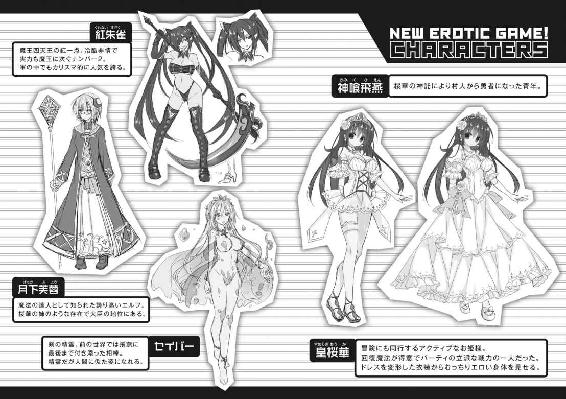
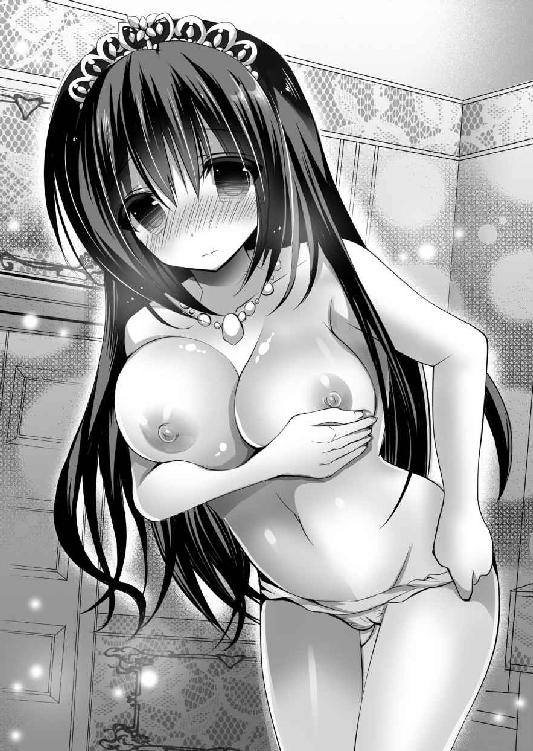

| エロくてニューゲーム! (二次元ドリーム文庫) | |
| 竹内けん & ｋａｎａｔａ | |
| (2015) | |
※本作品の全部あるいは一部を無断で複製・転載・配信・送信したり、ホームページ上に転載することを禁止します。本作品の内容を無断で改変、改ざん等行うことも禁止します。また、有償・無償にかかわらず本作品を第三者に譲渡することはできません。
※本作品は電子書籍配信用に再編集しております。

第一章 いきなり最終決戦
「よし、いよいよ最終決戦だ」
篁の国。
それは魔法が当たり前に存在し、人間と亜人間と精霊と妖精が共存し、妖魔や怪異やモンスターといった魑魅魍魎が跋扈する世界。
天空には天神が鎮座し、その御使いたる天使や死神がいる。地底には魔神が君臨し、その御使いたる魔族や鬼が覇を争う係争地。
光と闇といわれるように、世の中には相容れない者は存在する。
それは善悪ではない。互いに相手のありようが許容できないのだ。
光の住人たちから見れば、魔族と妖魔とモンスターは害虫と同じである。存在するだけで迷惑だから、見つけ次第排除した。
闇の住人たちから見れば、人間や妖精は食料である。どう料理して食べようと非難されるいわれはない。
両勢力は拮抗しているかに思われたが、魔王が降臨してからというもの、大地は腐り、魑魅魍魎が世界に溢れた。
このままでは、世界は闇に落ちると人々が絶望にくれる中、篁の国の国王の娘にして、天神の巫女、巫王女として知られた皇桜華は神託を得る。
「嵐吹く明星の下に、天神の加護を受けし勇者がいる」と。
ただちに人が派遣され、見つけ出されたのが、村人の神喰飛燕である。
魔法はもとより、剣術の心得もない無名無垢な少年に過ぎなかったが、神託は神託であった。
飛燕はただちに王宮に呼び立てられ、少しばかりの支度金とともに、王命で魔王討伐を命じられる。
それは困難な戦いの連続であった。
ただでさえ敵は強大だというのに、味方は神託を信じきることができずに飛燕の足を引っ張る。
幾度となく挫折しそうになったが、美しき巫王女皇桜華の励ましに勇気を得て、数々の試練を乗り越えた。
毒沼を踏破し、人跡未踏の山頂にてドラゴンを退治し、攻略不可能といわれた迷いの森を攻略して、伝説の精霊から剣を授かるに至る。
そんな言葉に尽くせぬ努力の甲斐があり、ついに飛燕率いる決死隊は魔王城への潜入を果たす。
「いくぞ、目指すは魔王の首級だ！ 俺たちの手で平和を掴む！」
絶海の孤島にあった闇の軍団の本拠地奈落月見里城。通称魔王城。
難攻不落と称えられた城の城門が、ついにこじ開けられた。
先陣を切るのは長身痩躯の青年。
纏うは白きマント。要所といえるところには軽い防具を付けているが、総じて軽装。
黒き髪を靡かせ、振り翳すはクリスタルの如き輝きを放つ、秋水の剣。
古の剣の精霊セイバーの化身たる姿にて、切れぬ物はない。
「勇者だ。勇者どもが攻めてきたぞ───!!!」
雄叫びを上げて立ち塞がったのは、トロルだ。
身の丈三メートルはあるような体躯に、脂肪と筋肉で固められた小山のような体。手に持つのは巨大な棍棒。
常人では決して振るえぬその巨大な武器の一撃の前には、防具は無意味だ。
武器で受ければ武器ごと、鎧で受ければ鎧ごと叩き潰す鬼神の一撃。
しかし、飛燕は躊躇うことなく間合いを詰めると、振り下ろされる棍棒を神速で躱し、柄から両断。否、トロルは頭から股にかけて両断されていた。
どっと肉塊が崩れる。
「こらこらあまり脂ぎったものを切るでない。汚れるではないか」
秋水の剣の化身たる精霊が、ぼやく。
「ごめんよ。あとで手入れするから、いまは我慢して」
神速を極めた太刀捌きの前に、モンスターたちは次々と薙ぎ払われていく。
かつて無知無能であった少年も、長き戦いの旅の果てに、一騎当千の勇者へと成長していた。
もはや国一番の強者であることを否定するものはいない。
直後に左右の上方から火の玉が、雨あられと降り注いだ。
「聖光天蓋!!」
女性が手を翳すと、天空に見えざる魔法のカーテンが展開して、炎を弾く。
「桜華さま、助かりました」
「いえ......。ですから、呼び捨てでお願いしますと幾度もお願いしているのですが」
防御魔法を展開したのは、巫王女として知られた皇桜華である。
尻まで届くぬばたまの髪に、処女雪のような肌。黒き瞳には強き意志が宿り、赤い実のような唇、育ちの良さが全身から溢れる高貴な気品。
童話にでも登場するお姫様を、そのまま具現化したような上品な女性だった。
年のころは飛燕と同じ十代の後半。しかし、その肉体は年齢に不相応なほどに成熟していた。
とても戦場に出向くような人ではないのだが、このたびの最終決戦にあたり、自分もいくといって聞かず付いてきてしまった。
普段はドレス姿であったのだが、本日は戦場ということで、ドレスや巫女服ではなく、動き易い戦装束に身を包んでいる。
両腕を大胆に出した短衣の上から左胸だけを押さえた革の胸鎧を着け、下半身は動き易さを優先したミニスカートである。
その短い裾が、爆風の余波に煽られてヒラヒラと靡くと、むちっとした太腿があらわとなった。
「いえ、そういうわけには......」
不満をあらわにする桜華に詰め寄られた飛燕は、思わず視線をそらしながらしどろもどろになってしまう。
巫女にして王女らしく、桜華は清純な顔立ちをした美少女である。しかし、身体付きは違う。巨大な二つの乳房は動くたびに揺れるし、剥きだしの白い太腿も凹凸に恵まれている。
どんな衣装を身に纏おうと、存在感を主張する我儘ボディだ。
青少年には毒といっても過言ではないほどに、エロスを撒き散らすお姫様なのだ。それも清純派な顔で無自覚に。
「もう......」
「うっ、勘弁してください」
飛燕と桜華が二人だけの世界を構築していると、叱責が飛ぶ。
「そのようなことはどうでもよろしい！ 爆ぜよ火球」
魔法で応戦したのは、紫色の学者帽とローブを纏い、縁なしの眼鏡をかけたエルフの女だった。
エルフというのは、人間の主観で見ると、亜人間といわれる。
妖精の中でも上位種であることを自認しており、実際、その自惚れに相応しい魔力と知性を持つ。
彼女もまた、その博識ぶりを買われて篁の国にて宰相の地位にあった。
魔法にしても、攻撃魔法、回復魔法、補助魔法と過不足なしに使える。
その万能の才は、篁の国の切り札的存在といっていいだろう。
桜華にとっては姉のような存在であり、桜華が戦に参加すると聞かないので、お目付役として付いてきたという側面もある。
ドォーン！
敵を粉砕した芙蓉は苦言を漏らす。
「姫様が来られることはありませんでしたのに......」
「いえ、これはわたくしが見とどめなくてはいけません」
桜華の視線は、飛燕に向く。
離れ難いという意図がありありとわかるだけに、芙蓉は溜息をつく。
「御託はあとだ、いまは進むのみだ」
巨大な体躯で、巨大な戦斧を振りまわし一喝したのは、色摩狂太郎。
元は無頼の強さと破天荒さで有名な山賊であったが、飛燕と闘い敗れたあと改心して、旅に同道した。幾多の苦難を共にしたいまでは、親友といっていい関係である。
「そうですね。いまは魔王を倒すことこそ肝要」
芙蓉も認めた。
「さて、蛇がでるか、鬼がでるか」
いまや自他ともに勇者として認められた神喰飛燕。手にするのは、伝説の剣の精霊セイバーだった。
従うは、国一番の才媛にして、魔法の達人として知られた賢者月下芙蓉。天神の癒やし手皇桜華、無双の強力を持つ色摩狂太郎である。
光と闇の戦いにおいて、軍隊は意味を成さない。
というのも、個々人の力の差があまりにも歴然としているからだ。
例えば、魔族が一人で、人間の兵士たち百人を蹴散らしたとか、村一つを全滅したという事例は珍しくない。
逆に飛燕のような勇者なら、モンスターを千人ぐらいあっさり蹴散らしてしまう。
そんな超人たちの争いに、一般の人間やモンスターが交じるのは、弾よけぐらいの役割にしかならないからだ。
下手をすると時間稼ぎにすらならない。単なる命の無駄遣いである。
それくらいなら、少数精鋭で乗り込んだほうがいい。
いまモンスターたちにとって、生きる天災と化している飛燕の無敵の快進撃を、城の大広間では、四つの影が待ち伏せしていた。
※
「ようやくおでましだな。魔王の四天王！」
戦斧を構えた狂太郎が、豪快に吼える。
魔王配下の四幹部。女エルフの紅孔雀。参謀の壱夜、死霊魔術師の蛇破、狂戦士の夢幻。
彼らは一般に魔王の四天王と呼ばれ恐れられている。
いずれも、独りで城塞をぶっ壊す程度の実力を持っている強者たちだ。
飛燕たち勇者一行とは、世界の各地でさまざまな理由でぶつかり、鎬を削った。
そのリーダー格である女が、大鎌を構えながら笑う。
「この向こうが王の間。つまり魔王さまが居られる。ここがあんたらの行き止まりさ」
三人の野郎を従えて、蓮っ葉な声をかけてきたのは、燃えるような赤毛をツインテールにし、犀利な顔立ちに、切れ長の目元に青い瞳。尖った耳。
濡れ光るような小麦色の肌の胸元には黒革のベルト、腰には黒い紐パンツという、ボンテージ状の衣装を纏っていた。
なんとも煽情的な装いだが、スタイルがいいからよく似合っている。
俗に「ダークエルフ」と呼ばれる存在だ。
ダークエルフといっても、闇の世界のエルフという以上の意味はない。
本来なら、光の世界に加担しているエルフをライトエルフというべきなのだろうが、主観が人間だから、身近な存在をエルフと呼び、めったに出会えない敵をダークエルフと蔑称しているに過ぎない。
いずれにせよ、エルフはエルフだ。並の人間よりも、俊敏であり、魔力に優れる。
彼女の名前は紅孔雀。四天王の紅一点にして、事実上のナンバーツーだ。
「押し通るまでさ」
飛燕のいらえに、紅孔雀は嗤う。
「言うようになったじゃないか、坊や」
伊達にナンバーツーといわれているわけではない。大変な魔力を持っている女傑だ。
その魔力のほどは、勇者たち陣営の芙蓉に勝る。飛燕たちは彼女のせいで何度となく苦汁を舐めさせられていた。
実際、直接対決では、一度も勝ったことがない。
その自信からだろう。事ここに至っても紅孔雀は余裕のていで、勇者一行を睥睨した。
そして、芙蓉の顔を見て笑う。
「よぉ、優等生。まさかあんたまで乗り込んでくるとはね」
「これはわたくしのケジメです」
芙蓉は憎々しげに睨み返した。
同族嫌悪という言葉があるように、ライトエルフとダークエルフは非情に仲が悪い。
そのうえ、光の国の宰相である芙蓉と、闇の軍団の四天王の筆頭である紅孔雀である。二人には計り知れない因縁があるのだろう。
そこに白皙長身の悪魔が割って入る。
青い前髪を左側だけ垂らした知的な美男子だ。そいつは物腰柔らかく声を出す。
「やぁ、芙蓉。また会ったね。それともぼくに会いにきてくれたのかな」
「壱夜！ もはやあなたの甘言には乗りません！」
芙蓉の顔が苦々しく歪む。
魔王軍団の参謀、壱夜。
彼の策略により、芙蓉は抜き差しならぬ立場に追い込まれ、光の勢力の情報を流すことになった。そのため、光の勢力は滅亡寸前という事態にまで追い込まれたが、間一髪で飛燕に救われて、事無きを得た。
この活躍により、芙蓉もまた飛燕を天の加護を受けた勇者と認めて、一緒に冒険の旅をすることになる。
魔王軍団からすれば、勝利の決定打となる場面を逆転されたわけで、痛恨の失敗といえるだろう。
「ごちゃごちゃうるせぇ。せっかくのディナーが冷めるだろうが」
二人のやり取りを他所に、飛燕の前に立ち塞がった男がいる。
「夢幻か......」
「飛燕。待っていたぜ。さっさとおっぱじめようぜ」
二本の抜き身の刀を持ち、峰をそれぞれの肩に背負って立った男は、外見的にはほとんど人間と同じだ。
年のころは飛燕と同じ。
黒衣を纏った銀髪赤目の青年だ。造形そのものは悪くないのだが、湛えている表情が凶悪すぎて、すべてを台無しにしている。
戦闘能力なら四天王随一。近接戦闘能力ならば魔王にも匹敵するといわれている。
しかし、戦闘狂。俗にいう狂戦士タイプである。気まぐれで組織人として欠陥がありすぎる人物だ。
「四度目の対決だな」
一度目は飛燕が勇者として旅立った直後のことだ。どこからか勇者の噂を聞き付けた夢幻がふらりと現れて、無理やり勝負を挑まれた。
結果は、夢幻の圧勝。飛燕は手も足もでなかった。
夢幻は「つまらん」といってトドメを刺さずに去っていった。
二度目の対決のときは、四天王の一角、死霊魔術師の蛇破を苦労して倒した直後に現れて、「こいつは四天王最弱だ。調子に乗っているんじゃね」といって殺されそうになったが、瀕死であった蛇破の魔法が暴走し、火山の大噴火を誘発するという予期せぬ大災害に巻き込まれて水入りとなった。
三度目は、ここにいるメンバー四人で、夢幻独りを袋叩きにした。
しかし、トドメを刺す寸前で、桜華が彼の境遇に同情して、改心するように説得しているところを、紅孔雀が駆け付けて、連れ去られたのだ。
「いいかげん、あんたの顔も見あきたな」
飛燕のいらえに、夢幻は肩を竦める。
「つれないな。これから楽しい殺し合いだぞ」
実に嬉しそうに、夢幻は口の端を吊りあげる。
「嬉しいことに俺たちにはもう後がねぇ。つまり、どちらかが死ぬまでやりあうしかねぇってことだ」
追い詰められている自分たちの状況が嬉しくて仕方がない、とでも言いたげだ。
この男にとって、光と闇の勢力争いなど関係ない。純粋に己が強さのみを求めた。そして、己の力量を余すことなくぶつけることのできる相手を求める。
そのようやく巡り合えた理想の敵、それが飛燕だった、ということだ。
「今度こそ、この場で、最強はどちらか決めようじゃないか」
「そんなことになんの意味がある？」
「意味だ？ 強い男が強い男と戦わないでなんの意味がある。それともなにか？ おまえのその力は、弱い者いじめをするためにあるのか？」
嘲られて飛燕はカチンときたことを否定できない。
前回勝ったといっても、四対一だ。本当の意味で勝ったとはいえない。思わず一歩進み出た。
その意味を察した紅孔雀が、戦闘狂の同僚に呆れたような視線を送る。
「夢幻、お望み通り、坊やは任せたよ」
「おうよ」
「負けても、今度は助けないからね」
夢幻はなんらひるまずに応じる。
「あたりめぇだ！ こいつは俺の獲物だ！ 手をだしたらバハア！ おまえも斬る！」
ピクッ！
クールな顔をしていた紅孔雀のコメカミが、一瞬、痙攣した。
エルフである紅孔雀は、外見通りの年齢でないことは確かだろう。
しかし、この扱いづらい部下の暴言には慣れているらしく、軽く溜息をつくと、手で払う。
「いいわ、死んできな」
「仕方ないな」
飛燕も応えてセイバーを構えた。
「勇者さま」
桜華が進み出ようとするのを、飛燕は背を向けたまま止めた。
「手を出すな。いや、出さないでください」
一騎打ちをすることになど意味はない。しかし、飛燕にも男の意地がある。
飛燕が光の世界の勇者なら、夢幻は闇の世界の勇者だ。今度こそ決着を付ける。
「なんだ。やっぱりおまえも戦いたいんじゃねぇか」
夢幻はせせら笑う。飛燕もまた高揚感を覚えた。
「いくぞ」
「きやがれ」
二人の男が同時に床を蹴った。
常人ではあり得ない跳躍。
空中で静止した二人は、激しく切り結ぶ。
飛燕が持つ一刀。夢幻が持つ二刀が閃く。
カン！ カン！ カン！
夢幻は二本の刀を縦横に扱う。
人間には二つの腕があるのだから、それぞれの手に刀を持って振りまわすのは難しくない、と考えてしまうのは素人の浅はかさだ。
ためしに左右にペンを持って、右手で○、左手で×を同時に描いてみるといい。その難しさに絶句すること請け合いだ。
それなのにこの夢幻と名乗る男は、重い刀を両手に持ち、それぞれ複雑な剣戟を浴びせてくるのだ。
タン！
空中で百合ほど合わせたあと、飛燕と夢幻は、背中を向けながら床に手をつく。
ブワッ！
夢幻の体から血が噴き出した。しかし、夢幻はひるむどころか、狂笑を上げた。
「あははははっ、つえぇ、つえぇな。楽しい、楽しいぞ、おまえとの闘い。勝てねぇ！ このままでは俺は負ける！」
夢幻は右手の手首を左手で持ち、エネルギーを溜めると、一気に胸に突き刺した。
さながら心臓を鷲掴みにするかのような仕草だ。
「竜陣解放っ!!!」
ドンッ！
喘ぐような叫びとともに、夢幻を中心に、目に見えない気の力が爆発した。
「なにをした？」
「なんでもいいだろう。こっからが本番だぜ。飛燕───ッ」
再び二刀を持った夢幻は打ちかかってきた。
「ぐっ」
その戦闘速度、及び剣戟のパワーが倍増している。
（なんだこれ？）
「おそらく、この技は文字通り命を削ることによって、通常の何倍もの力を引き出す技なのだろう」
セイバーの指摘した通り、夢幻の毛細血管が破裂しているのだろう。全身から血が煙のように噴き出し、目元からも血の涙がでている。
「あははは、楽しい。楽しいな。俺らは戦いの中に生きている。この瞬間の充実のために血反吐を吐く特訓をしてきたんだ。おまえも生きるか死ぬかの瀬戸際の戦いをしたかっただろう」
「おまえと一緒にするな！」
文字通り死闘。
傍目にも無理をしているのが判る技を使っているのだ。夢幻の動ける時間はもはやたかが知れている。逃げ回っているだけでも勝てただろうが、飛燕は真正面から受けてたった。
互いの二の腕や頬に、いくつもの刀傷ができる。
ダン！
飛燕と夢幻は床に降りた。
互いに背を向けている。
「......」
不意に訪れる静寂。
いままでの熱狂とは裏腹な、冷めた声で夢幻は口を開いた。
「俺の負けだな......」
「ああ......俺の勝ちだ」
ドスッ......。
黒衣の勇者は仰向けに倒れた。大量の血が床に広がっていく。だれが見ても致死量だ。
そんな中、夢幻は清々しく笑った。
「おまえとの勝負、楽しかったぜ。また、やりてぇな」
「......」
「なぁ、またやろうや、あの世で修行しながら、貴様が来るのを待っている......ぜ」
魔王軍団随一の使い手は事切れた。
飛燕もまた無傷ではなかった。ガクリと膝をつく。
「はぁ......、はぁ......、はぁ......」
終生のライバルとの戦いに完全決着を付けた飛燕のもとに、桜華が駆け付ける。
「大丈夫ですか、勇者さま」
「ああ......」
「いま治療を致します」
桜華が回復魔法を唱えようとしたとき、クルクルクルと回転した大鎌が来襲。
カン！
飛燕の刀が弾く。
弾き飛ばされた大鎌は、回転しながら舞い戻り、紅孔雀の翳した右手に戻った。
「ちっ、夢幻のやつ、あれだけ大口を叩いておいて負けやがった。とはいえ、消耗はしているだろ。壱夜、蛇破。いくよ」
「承知」
「まったく、仕方ありませんね」
気障ったらしく応じたのが、魔人の壱夜、軽薄に応じたのが死霊魔術師の邪破。
「勇者さまはやらせません」
「どこまでも卑怯なやつ」
「飛燕、あとは俺たちに任せろ」
桜華、芙蓉、狂太郎が応戦する。
かくして魔王城の大広間にして、両軍の精鋭たちによる死闘が始まった。
「もはやわたくしはおまえなどに惑わされはしない」
「ふっ、そういうところも可愛いな」
芙蓉と壱夜が激突。
「見よ、長年の研鑽によって編み出されし魔法」
「ああ、そうかい。おまえもしぶといな四天王最弱の男」
「最弱いうな！」
邪破と狂太郎が激突。
「おぼこい姫様だ。あたいが穴をあけてやろう」
「勇者さまのために負けません」
紅孔雀と桜華が激突。
乱戦の中、最初に沈んだのは、死霊魔術師の邪破であった。戦斧で頭を潰されたのだ。次いで参謀の壱夜が、火炎魔法に焼かれる。
桜華は防戦一方であったが、そこに勝利した二人が駆けつける。
「あとは紅孔雀。あなただけよ、観念なさい！」
芙蓉が杖を翳して啖呵を切る。
「ふん、どいつもこいつもだらしないね」
同輩たちを失った紅孔雀は、間合いを取って大鎌を構える。
「だが、勝った気になるのは早いよ。久しぶりだが、見せてあげよう。あたいの本気ってやつをね」
「強がりを」
「いくよ」
紅孔雀は右目の眼帯を外した。
中から黄金の瞳があらわとなる。
「飛べ、不死鳥」
次の瞬間。紅孔雀の背中から、炎の羽根が広がった。
「なにっ!?」
「逃れられるかい。あたいの死の羽根からね」
広げられた炎の羽根から、無数の羽根が撒き散らされた。
「いてて」
斧で払うも、でかい図体はそれだけ面積も多い狂太郎は、全身至るいたるところを撃ち抜かれて悲鳴をあげた。
飛来する一羽一羽の威力はそう大きくないようだが、数が数である。しかも、大広間とはいえ室内。逃げる場所は少ない。
「金剛盾」
桜華は慌てて仲間たちのまえに魔法の防壁を展開する。
カン！ カン！ カン！ カン！ カン！
「姫様ナイス！」
一息ついた狂太郎は親指を立てて、感謝を現した。
およそ戦闘力に向かない桜華が、紅孔雀との一騎打ちの最中に負けなかったのは、この鉄壁の守りがあったからだ。
とはいえ、守る対象が増えれば、それだけ個々の防御力は弱くなる。
魔法の盾はみるみるうちにその厚みを削られていく。桜華は何度も魔法を重ねかけしているが、限界に達するのは時間の問題であろう。芙蓉も、桜華も、狂太郎も、動くに動けず、打開策の見出せない、
「なんという、殲滅魔法。あやつ独りで要塞が落ちたというのも、納得じゃな」
セイバーの声に、飛燕が反発する。
「感心している場合じゃない。このままでは、みんなやられてしまう。いくぞ」
「しかし、おぬし、その傷で動けるのか」
「動くさ」
セイバーを翳した飛燕は、紅孔雀に向かって突撃する。
「うおおおおお！」
「死にな」
発射地点に近づけば威力が増すのは道理。飛燕の周りに展開する魔法防御は、乱射される羽根によってたちまち粉砕した。
ブスブスブスッ！
飛燕の体に、無数の羽根が突きささる。
「治療せよ」
背後から桜華の治療魔法が、飛燕にかけられる。
紅孔雀から注がれるダメージと、桜花の回復魔法が、飛燕の体を巡って拮抗する。
「どせぇぇぇ」
「貫け魔矢」
紅孔雀の攻撃が、飛燕に集中した間隙をぬって、狂太郎の戦斧が弾幕を蹴散らした。その薄くなった弾幕の間隙を、芙蓉の魔法攻撃が通過する。
パン！
瑠璃色の帯引く魔法の矢は、紅孔雀の右側面に当たって弾けた。
「ぐっ......この程度の攻撃で、はっ!?」
ダメージとしては大きくなかったかもしれないが、気を乱すには十分な一撃であった。
羽根の弾幕を肉弾で突破して飛燕は突進。秋水の剣の切っ先が、紅孔雀の剥き出しの腹部を貫いた。
「ここまでだな」
「やるじゃないか、坊や」
次の瞬間、紅孔雀の体は跡形もなく消滅した。
同時に多大なダメージを受けていた飛燕の意識は暗転する。
「......」
再び瞼を開くと、そこには泣き濡れた桜華の顔があった。
「やぁ、桜華さまが治療してくれたんですね」
「無茶をなさらないでください。勇者さまの身になにかあったら、わたくしは、わたくしは......」
「姫様......」
桜華は飛燕の胸に泣き崩れる。
ムッチムチの乳房が飛燕の胸部に押し付けられた。
「うわ、ひ、姫様!?」
「姫ではなく、名前で呼んでください。と幾度も申し上げているではありませんか」
顔を上げた桜華の泣きぬれた顔が、飛燕の鼻先にくる。
黒い瞳は潤み、瑞々しい唇は、まさに桃の実のように甘そうであった。
男女の瞳は磁力でもあるかのように吸い寄せられ、離れない。
「ここまでこられたのも、みな勇者さまのお力があったればこそ。この戦いが終わったら......」
「ごほん」
芙蓉が咳払いをした。
狂太郎も困ったと言いたげに顎を掻く。
「姫様、セックスアピール強すぎ。そこまでやると男は引くよ」
「せ、せ、セックスアピールだなんて！ わ、わたしはそんなつもりは!! まったく全然、ほんのちょっとしか......」
慌てて身を起こした桜華は、あたふたと両腕を振りまわす。
飛燕もまた赤面しつつ身を起こし、身支度を整えて語った。
「さて、四天王を倒したいま、残るは魔王だけだ。みんな準備はいいか？」
「はい」
話を逸らそうと桜華は積極的に頷く。
まだ何か言いたそうな芙蓉であったが、いまはそれどころではないと自分を納得させたようで話に乗ってくる。
「長い闘いの決着が、ここに付きます」
「もう勝負は決まったろ。偉いやつってのは後ろでふんぞり返っているだけで、実は弱いってのが定番だぞ」
軽口を叩く狂太郎を、芙蓉がさながら女教師のように窘める。
「侮ってはいけません。人間社会とは違い、魔族は上にいくほどに強い力を持ちます。あの四天王が忠誠を誓っていたのです。少なくとも、四天王たちより強いと覚悟しておくべきです」
「へいへい」
狂太郎は肩を竦める。
飛燕は周囲のものたちを見渡す。
「今度こそ最終決戦だ。全員、生きて帰るぞ」
「おう！」
気合いを入れなおした勇者一行は、魔王がいるであろう謁見の間へと足を進めた。
※
広い部屋。静寂の室内。闇の奥にそれはいた。
白い大理石の雛壇の上に張られた豪奢な天幕が、左右に開いている。
その中央に置かれた巨大な椅子に、上半身裸のモノが独り座っていた。
紅蓮の如き赤い髪。血涙の如き紅い肌。大きな口元からは二本の牙が飛び出しており、額には角がある。
まさに鬼だ。
「ほぅ、よもや人間風情がここまでやるとはな」
大変な威圧感だ。だれに紹介されたわけでなくとも、これが魔王だ、と無言のうちに見る者を納得させる。
みなが畏怖される中、飛燕はセイバーを構えた。
「貴様をここで倒す」
魔王は片手で制する。
「そう急くな」
「なんだ？」
いまさら言葉など不要。
光と闇は決して相容れない。殺し合うしかないのだ。
「降伏しようというのか？」
正直、魔王とその手下たちがしてきた悪行を思えば、生かしておく必要性を感じないが、降伏しようという相手を切るほどに非情にはなれなかった。
「ふっ、ふははは」
魔王は豪快に笑った。
「紅孔雀たちを倒した程度でそこまで慢心しておるか」
そこに杖を翳した芙蓉がきつい声で弾劾する。
「あなたこそ現状を認識していないのではなくて？ もはや四天王もなく、あなたは文字通り裸の王様よ」
芙蓉の痛烈な指摘は無視して、魔王は飛燕に語りかける。
「どうだろう、勇者。予としても無益な血を流すことは好まぬ。ここは取引をせぬか？」
「取引？」
思い掛けない言葉だった。
困惑する飛燕に、魔王はしたり顔で声をかける。
「世界の半分をやろう。おまえは人間たちの王になれ。予が闇の王、貴様が光の王として、手を携えれば、世界は平和となるぞ」
「ふざけるな。そのような甘言に乗せられると思ったか！ バカにするな！」
激昂する飛燕を見下ろし、魔王は憐れむような顔で太い首を横に振るう。
「頭の悪いやつよ。勇者などと煽てあげられ、いいように使われていることがわからんのか？」
「戯言を聞くのは時間の無駄だ。剣を取れ。取らぬなら勝手に始めるまでだ」
「ふぅ、仕方ない。狭量な正義感などというものは、無駄な死を撒き散らすだけでだれも幸せにせぬということがわからぬか？ ならば死んでもらおう」
諦めの吐息とともに魔王は玉座から立ち上がった。その瞬間、纏う鬼気も一変する。
身の丈は二メートルぐらいだろうが、纏う鬼気がその巨躯を、いっそう大きく見せていた。
巌のような背中からは豪炎が噴き上がり、丸太のような両腕に、目に見えない気が竜巻のように巻き付いている。
「......くるぞ」
飛燕たちも戦闘モードに移った。
「そうこなくっちゃな」
狂太郎も軽口を叩く。
しかし、豪胆と蛮勇で鳴らす男の声は若干震えていた。
室内に風を感じる。まるで魔王に向かって渦巻く気流が発生したかのようだ。
「耐えろよ、勇者。久しぶりの戦いだ。一瞬で終わってはつまらぬからな」
言葉が終わらぬうちに魔王の姿が掻き消える。次の瞬間には飛燕の右脇に立っていた。
「遅い！」
神速。
神も、悪魔も、妖精も、人間ならざる生き物が当たり前にいる世界だ。人間技ではない動きをするものはいくらでもいる。
飛燕の動きとて、常人には見えぬ速度だ。しかしそれを上回る速度だった。
ドゴン！
ハンマーのような腕が振るわれる。
「ぐふ」
まともにくらった飛燕は、派手に吹っ飛び部屋の壁に激突。
ついで狂太郎、芙蓉、桜華の横に現れては丸太のような鉄拳を振るう。
「うわ」
「きゃ」
狂太郎も吹っ飛ぶ。芙蓉も吹っ飛ぶ。桜華は動かなかった。
桜華に拳が振り下ろされる寸前のところで、飛燕が割って入ったのだ。
「ほぉ、勇者の名は伊達ではないな」
自らの拳を、刀で止められて、魔王は軽く驚きの声を上げる。
「舐めるな。セイバー、全力でいくぞ」
「まったく精霊使いの荒いことよな」
飛燕の持つ剣が白く輝く。いや、飛燕の体全体が白く光り輝く。
「受けよ。白崩帝斬！」
神速の上をいく神速。飛燕の刀剣術は、魔王の神速を上回った。
魔王の左肩から右腰にかけて、切り下げる。
「うお」
魔王はよろめいて下がる。
「やった」
地に伏せていた狂太郎が、歓喜の声を上げる。
「ふっ、よもやここまでやるとはな、天神の小細工を侮っておったわ。まさか、この力を使うことになるとはな」
魔王の姿がみるみるうちに黒い炎に包まれていく。
そして、物理法則を無視して、姿を何倍にも大きくしていく。
みなが思わず見ている間に、魔王の体長は高い天井に届くほどの大きさになる。
黒い肌、紅い瞳。手はかぎづめ。太く短い脚。背中には翼。大きく裂けた口には長い牙。
「......ドラゴンだと」
「くっくっくっ、勇者よ、褒めてやろう。予がこの世界に顕現してから、この姿を晒したのは初めてぞ」
「なに、この禍々しい気は......、これが魔王の真の姿。この霊圧、魔神級です。こんなもの人間では勝てない」
信じ難いといった顔で芙蓉は叫ぶ。
「名残惜しい気もするが、これで終わりだ。喰らえ」
咆哮とともに、裂けた口から紅い紅蓮の炎が飛び出した。
部屋一面を舐めるように浴びせられる炎に、飛燕は動けなかった。
飛燕も、桜華も、狂太郎も、芙蓉も、みな焼かれる。一撃で壊滅だ。
飛燕たちは魔王の力を侮っていた。
戦闘能力なら魔王にも匹敵するといわれた夢幻に勝ったのだ。当然、魔王にも勝てると考えていた。
まして、四人がかりである。
万に一つも負けはないと思っていた。
しかるに、魔王の強さは夢幻どころではない。四天王が束になっても勝てないレベルだ。
（ちきしょう）
しかし、動いたものがいる。
飛燕の前に壁ができた。
「狂太郎！」
飛燕を庇おうと、仁王立ちした男。それは山賊あがりの戦士であった。
「うむ、小癪な。しかし、どこまで凌げるかな」
魔王がブレスの勢いを上げる。
「ばかやろう。直撃なんてくらっているんじゃねぇ。早く避けろ！ そうしないとおまえの体は」
「......ふっ」
狂太郎は口元を歪めた。
「もとよりおまえに救われた命だ。おまえのために捨てるなら惜しくはねぇよ」
そういう間にも、狂太郎の体は焼かれていく。
「終わりだ！」
「飛燕、あとは任せた」
ドン！
爆散。文字通り狂太郎の姿は、チリも残さずに消えた。
「狂太郎───ッ」
狂太郎がまさに命を捨てて作ったわずかな時間。その間隙をぬって桜華が立ち上がる。
（逃げろ。姫様では勝てない）
飛燕は祈るような気持ちで桜華を見た。飛燕を見てうっすらと笑った桜華は、マジックワンドを翳す。
「回復の奇跡を」
回復魔法の光が、飛燕に降り注ぐ。
桜華の最後の力を振り絞った魔法であろう。
（動ける）
このとき飛燕には二つの選択肢があった。
勝機なし、と諦めて撤退する。それとも進むか。
すべてをこの一刀に託した。
「はぁぁぁぁぁぁぁぁぁぁ!!!」
「うぬっ!?」
トドメを刺そうと強力な大技を放出した直後である。その一瞬の隙をついた形だ。
魔龍の表情を窺うのは難しいが、たじろいだ顔をする。
ズバ！
俗にいう会心の一撃。
奇跡は起こった。
伝説の精霊セイバーの化身たる秋水の剣は、魔龍の頭から股間まで真っ二つに切り下ろす。
「バ、バカな......!? 予が負けるだと......人間風情に」
「覚えておけ。わらわはセイバー。わらわに切れぬものはないんじゃ」
古の剣の精霊は勝ち誇る。それを握りしめながら飛燕は茫然と呟く。
「勝った......のか？」
魔王は倒れ、勇者は立つ。その状況の意味をじわじわと噛みしめる。
勇者神喰飛燕は、魔王を打ち倒すことに成功したのだ。
※
「飛燕さま、夜分に申し訳ありません。お部屋に入れていただけますか？」
犠牲も大きかったが、愛、正義、友情の力を駆使して、勇者一行は、見事魔王を倒し、人類を救った。
篁の国の王都柊城に帰還すれば、英雄として凱旋パレードが行われ、夜は祝賀会が開かれた。
王宮の離宮を貴賓室として与えられ、飛燕が休もうとしていたところを突如、巫王女桜華が訪ねてきた。
「ええ、どうぞ」
戸惑いながらも、飛燕は室内に招きいれる。
「それで、姫様、こんな夜更けになんの御用ですか？」
困惑する飛燕の前で、緊張した面持ちの桜華は、ドレスを脱ぎ始めた。
「ひ、姫様......なにを？」
飛燕がおろおろしているうちに、桜華のほうは白いブラジャーを外し、柔らかそうな生乳を晒し、さらには白いショーツまで脱ぎ棄ててしまう。

一糸纏わぬ姿となった桜華は、右手で胸元を隠し、左手で股間を隠した。そして、赤面した顔で、瞳を泳がせながら語る。
思い切りよく裸になったわりに、微妙に恥じているさまが否応なく男心をくすぐり、飛燕はどぎまぎしてしまう。
「このたびの勝利は、勇者さまの尽力のたまものです。報いるのにこのようなことしかできぬ身をお許しください」
「そんな俺だけの力ではない。仲間がいればこそです。狂太郎など」
「狂太郎さまのことは返す返すも残念でした。狂太郎さまも祝福してくれると思います」
間合いを詰めた桜華は飛燕に縋りつき、涙目を上げる。
夜、部屋に訪ねてきた美女が、裸になり、男に抱きついてきたのだ。
それもただの美女ではない。若くして成熟した肉体は、存在そのものがエロスの塊だ。
この誘惑に耐えられる男などいない。
いかに神に選ばれた勇者といえども、凡庸な男。
「うむ......」
気が付いたときには、飛燕は桜華の裸身を抱きしめ、唇を奪った。......だけではない。
寝台に押し倒し、その豊麗な乳房を鷲掴みにし、揉みしだいた。
「ああ......」
肉がみっちりと詰まった乳房であった。桜色の乳首もまた生々しい。見応えがあり、食べ応えがある。
飛燕は夢中になって口に含み吸引した。
元は田舎の農家のせがれ。まだ年端もいかないうちに、神託だとして勇者に祭り上げられた飛燕は、それ以後、修行と試練の連続である。
女にうつつを抜かしている暇は与えられなかった。
端的にいえば童貞少年である。
ようやく、その身に余る試練を終えて安堵したところに、極上といえばこれ以上あり得ないほどの美女が裸で飛び込んできたのだ。
夢中になるな、というほうが無理であろう。
「う......うん、ああ、勇者さま♪」
女の身体のことなどまるで知らない男の荒々しい愛撫である。快感よりも痛みのほうが多いだろうに、桜華もまた、愛しい男に身を投げ出す歓びに浸っていた。
食べごろの果実を心行くまで味わった飛燕は、白い腹部に顔を埋め、縦長の臍を舐めてから、さらに下半身へと移る。
黒い艶やかな陰毛の逆立つ股間に顔を埋める。
「ああ、そんなところまで」
桜華はむっちりとした両の足を、飛燕の肩にかけ、頭髪を両手で握って歓喜の悲鳴を上げる。
蜜がトロトロと溢れて、飛燕の舌を楽しませた。
「わたくし、初めてなんです......優しくしてくださいね」
「ああ......でも、俺も初めてだから、痛くしたら御免」
頷いた飛燕は、いきり立つ逸物を膣孔に添える。
切っ先に確かな手ごたえがあった。
（これが姫様の処女膜）
それをぶち破ろうと大きく息を吸った瞬間だった。
突如、扉が蹴破られ、槍を持ち完全武装をした兵士たちを従えた芙蓉がドカドカと入ってきた。
「なっ!?」
絶句する飛燕と桜華を他所に、芙蓉は冷めた表情で寝台の上を確認する。
「間違いが起きる前でよかった」
慌ててシーツで胸元を隠しながら、温和で知られた桜華もこのときばかりは金切り声を上げる。
「芙蓉お姉さま、どういうことです！」
「姫様、あなたは篁の国の王女。どこの馬の骨ともわからぬ男と自由恋愛を許される立場ではありません」
「飛燕さまは、国を救ってくださった勇者です！」
眉を吊り上げる桜華に、芙蓉は静かに首を横に振るう。
「国を救った英雄は姫様。歴史書にはそう記されるでしょう。従者の名など記されるにあたいしません」
その宣言に、桜華はもちろん、飛燕も絶句する。
芙蓉はいきり立つ飛燕の逸物を見て、吐き捨てる。
「み、醜い......まったく、平民のくせに、姫様の貞操を狙うなど反逆罪です。連れていきなさい」
「いや、飛燕さま！ 飛燕さま───!!」
勇者や英雄などというものは、平時には無用の長物である。
魔王がいなくなったとき、飛燕の存在価値も消えたのだ。
この後、飛燕の名は篁の国の歴史書には登場しない。
歴史から消えた英雄の物語である。
第二章 強くてニューゲーム
「こら飛燕、いつまで寝ているんだい。とっくにおてんとうさまは昇っているよ！」
母親に叩き起こされた飛燕は、睡魔と格闘しながら部屋をでる。
「わかったよ、かーさん」
「ほら、とっとと顔を洗って、鶏に餌をあげてきなさい」
言われるがままに井戸端にいき、水をくみ上げる。
（......あれ？）
桶に張られた綺麗な水に映った顔を見て、違和感を覚えた。
そこには見覚えのある自分の顔があった。
いや、記憶にあるよりも若い。十代の少年だ。
それからあたりを見渡すと、のどかな田園風景が広がっていた。
頑丈な茅葺屋根の家。近くにある牛小屋。青々とした稲は、秋には黄金色に染まることだろう。
見忘れるはずがない。飛燕の生まれ故郷だ。
（なぜ、俺はここにいる？）
懐かしい光景だが、同時にどうしようもない焦燥感が、背中を駆け上がる。
（俺の名前は神喰飛燕。......ん？ 神喰って、そんなたいそうな名字だったか？）
困惑して立ちつくしているところに、妹の叫ぶ声が聞こえてきた。
「お兄ちゃ～ん、御飯だよ～」
「ああ、いまいく」
我に返った飛燕は、慌てて顔を洗ったあと、乳牛から乳を搾り、母屋に入った。
食卓を囲むのは、父親と母親と妹。
妹はピーマンをどけようとして、母親に叱られて、父親は妹を庇っている。
それは、どこにでもある平凡な朝食の光景。笑いの絶えない食卓は、まさに平和の象徴だ。
食事が終われば、鋤で藁を掻き混ぜる。
（あの戦いの日々は一夜の夢だったとでもいうのか？ それともタチの悪い敵の幻惑にでもかかったか？）
激しい違和感を覚えながらも、子供のころから当たり前にやってきた日常の営みを、体が覚えていた。仕事を続けながら記憶を探る。
故郷で平和に暮らしていた飛燕は、篁の国の王女にして巫女である皇桜華の神託によって勇者認定された。
そこから、魔王の四天王と呼ばれる連中と各地でしのぎを削り、仲間を得て、ついには魔王を倒した。
しかし、狡兎死して走狗烹らるの例え通り、魔王が退治されたあとの勇者など無用の長物として、篁の国を石をもって追われた。
その後は、たいして目的もないままに世界を旅した。それはキリングマシーンと呼ばれるに相応しい活躍だっただろう。
確か世界の真理だか、深淵だかを求めて旅を続けた挙句、世界を構成する二大神、天神と魔神を倒した。その直後に現れた謎の声に、呼びかけられた。
『あなたの活躍により世界は終わりました。記憶と能力をそのままに物語をやり直しすことが可能ですが、やりますか？』
もはや強いやつもいないということで、目的を失った飛燕は、その申し出を受けた。
そして、気が付けば今日である。
（ということは、これは本当にやり直しした世界なのか？）
ためしに鋤を剣に見立てて振るってみる。
（なるほど、戦闘術は覚えているな。ガキのころの俺にこんな動きできるはずがない。あのころの俺はなにも知らない。知らないことすら知らないガキだった）
......やり直しの人生か。
自分は魔王を倒し、神すらも倒した。それで幸せだったか？
最強を求めるという意味では、極めたわけだ。男の本懐といっていいだろう。満足している。
しかし、もう一度同じ人生を歩め、といわれたらどうだろう？
このまま農民として暮らしたほうが、幸せだったのではないだろうか？
藁を整えながら思案に暮れていると、不意に玄関先が騒がしくなった。
母親の悲鳴。父親の怒号。妹の泣き声を掻きわけて、完全武装の兵士たちが納屋に入ってきて、鋤を持った飛燕を囲む。
「......」
強烈なデジャブが飛燕を襲う。
（ああ、すべての始まりはここだった）
茫然と立ちつくす飛燕の前に進み出た騎士隊長は、いかめしく口を開く。
「神喰飛燕だな？」
「ああ」
「貴様は......くっなにをする!?」
言葉を続けようとする騎士隊長の鼻先に掌を翳して、飛燕は遮った。
「貴様は巫女王皇桜華さまの神託に選ばれた。ただちに王城にご同行願おうっだったかな？」
「なっ!?」
尋常ならざる台詞である。決して、事前に予知することなどできない台詞を言い当てられて騎士隊長は絶句する。
「いいぜ、いってやらぁ」
鋤を投げ捨てた飛燕は、唖然としている家族を残し、騎士たちを押しのけて、出迎えの馬車に乗り込んだ。
※
「おお、勇者よ。よくきた」
篁の国の王都柊城。
その大広間にて、黒い髭を蓄えた壮年の国王と謁見する。
国王の右横の椅子には座るのは、王女にして、このたびの神託を得た巫女皇桜華が座っている。
（桜華か、若いな。相変わらず純情そうな顔とは裏腹な、エロい身体をしている）
十代のわりにはムチムチと成熟した肉体を、白いドレスに包んでいる。
前世ではついに結ばれることのなかった恋仲だった女性。身分違いと引き裂かれた仲であるが、いまさら恋焦がれる気持ちもない。
現在の桜華のほうから見れば、飛燕は初対面の相手である。恋愛感情を持っているはずもない。
（そして、こっちは芙蓉か、相変わらず人を見下した目をしてやがる）
国王の左隣りに立つのは、宰相の官服を着た月下芙蓉だ。
耳が尖り、人形のように細い肢体を官服に包んでいる。人間より、より神に近いと自認する種族エルフだ。
眼鏡の奥の切れ長の目で蔑むように飛燕を見ているが、それは飛燕を蔑むというよりも、人間全般を蔑むエルフ独特の態度だ。
魔王を倒すときの仲間であったが、最後の最後に裏切られた。
いや、彼女の中では裏切りではない。単に篁の国に善かれと思ったがゆえに、あのような挙にでただけのこと。
飛燕としても、いまさら恨みはない。すべては過ぎた話だ。いや、時間が遡ったいまの芙蓉に責任を求めても仕方がない。
その他、飛燕の左右には国の百官がずらりと並ぶ。
みな海のモノとも山のモノともわからぬ、勇者なるものを推し量っている。
（ああ、そうだったそうだった。最初はこんな感じだったよなぁ）
威圧されて当然、いわば圧迫面接のような状況である。昔の飛燕は、この空気に飲まれて、無理やり勇者であることを認められたのだ。
「そなたも知っての通り、魔王の降臨以降、我が国の領土は荒らされている。そなたは天神の神託を受けた勇者である。ぜひにも魔王を倒してもらいたい」
国王のこの言葉を聞いた以前の飛燕は、選ばれた者という響きに感動した。そして、その幸福な酔いにも似た感覚に浸って、すべてを擲って邁進したのだ。
しかし、いま再び聞くと、まったく、他力本願な話である。
「支度金を用意した。ぜひ魔王退治の軍資金としてくれ」
盆に載せられてきた皮袋を、従者が恭しく運んできた。
中には確か、兵士の給金にして一ヶ月分ぐらいの金貨が入っていたと思う。
しかし、武器武具というのは高価なものだ。銅の剣一本も買えば消えてなくなってしまったのを覚えている。
（この当時は王家の連中も、俺に対して半信半疑だった、ということだろうな）
軽く溜息をついた飛燕は、玉座に腰をかけた国王を見やりながら口を開いた。
「断る」
「なに？」
予想外の言葉であったのだろう。国王が目を見開くと、周りの廷臣たちもざわつく。
「......」
飛燕と国王の瞳が正対する。
ややあって傍らの芙蓉が口を開いた。
「なんて不敬な。国王陛下のお言葉ですよ。あなたはただ畏まって平伏すればいいのです！」
盆に載った皮袋を鷲掴みにした飛燕は、芙蓉に向かって翳してみせる。
「なら芙蓉。おまえがこの金を持って魔王退治に行きなよ」
「なっ!?」
絶句する芙蓉に向かって飛燕は肩を竦める。
「自分にできないことを、他人に強要するもんじゃないぜ。まして、こんなはした金で倒せるほどに、魔王とやらは簡単な脅威なのかよ。しかも、自分でもできるなんて思っていないことを命じるなんて、下司のやることだ」
コメカミに怒気のマークを浮かべた芙蓉は、細い腕を横に振る。
「警備兵、この不心得者に身のほどを教えてあげなさい！ 国王陛下に対する不敬罪です」
ただちにロイヤルガードが現れる。
「芙蓉お姉さま、そんな......」
見かねた桜華が止めようとするが、国王が無言で制する。
騎士の数は六人。みな銀色の重鎧で完全武装。手にはハルバードを持っている。一方、飛燕は野良着のままで、しかも素手だ。
「きな」
飛燕は右手の中指をおっ立てて、挑発する。
「貴様っ」
生意気な若造に身のほどを教えようと、エリート騎士たちは一斉に襲いかかった。
見守る者たちはみな、当たり前に飛燕が床にのされる光景を予測しただろう。弱い者いじめに、軽く顔を背けたものもいる。しかし、直後に床に沈んだのは飛燕ではなかった。完全武装のエリート騎士たちが、全員床にのされている。
飛燕は平然と立っていた。
「安心しな。殺してはいないぜ。弱い者いじめの趣味はないからな」
「な、なななな......っ!?」
「馬鹿な、我が国屈指の使い手たちだぞ！ それが完全武装で、素手の少年独りに負けたというのか!?」
平然とのたまう飛燕の姿に、玉座に座っている国王が腰を抜かしている。廷臣たちも絶句していた。
国王は這うようにして雛壇から降りると、飛燕に縋りつく。
「本物じゃ。おぬしは本物の勇者じゃ。おぬしの言う通りにする。望みはなんでも取らす。頼む、魔王を倒してくれ」
桜華も降りてきて飛燕に頭を垂れる。
「わたくしからもお願いします。どうか勇者さま、非力なる我らにお力をお貸しください」
国王と王女が頭を垂れたのだ。廷臣たちも慌ててそれに倣う。
やんごとなき身分の人々に囲まれて、飛燕は頭を掻く。
「そうだな。城の東に離宮があったろ。あそこを俺に明け渡しな。もちろん、身の回りの世話をする侍女は見目麗しい女に限るぞ」
「すべては勇者殿の、お望みのままに」
飛燕の願いはただちに叶えられ、豪奢な離宮に居を構えることになった。
※
「巫女姫様肝煎りの勇者というのはどうでしたか？」
深夜の王宮の片隅。
そこで人目を忍んで話し合う男女の姿があった。
「確かに普通の者より腕っ節が立つようです。しかし、所詮は人間。あのような粗野な者では、己が力を過信し、きっとつまらぬことで命を落とすのがオチでしょう」
年頃の男と女が人目を忍んで密会となれば、声をかけるのもヤボというものだが、飛燕は躊躇わずに声をかけた。
「よぉ、芙蓉、こんなところでなにをしているんだ？」
「貴様は神喰飛燕っ!? なぜこんなところに......」
あからさまに動揺する芙蓉の前で、飛燕は腕組みをする。
「なに、昔の記憶をたどって推理したまでのことだ。状況から見て、この日、あんたは魔王四天王とかいうやつらの一人、名前はなんといったかな、あのキザな男と会っているはずなんだ」
「それはわたしのことかね。勇者くん」
陰からすっとでた者、それは青い前髪を左だけ垂らした白皙の男であった。長身痩躯。知的な雰囲気があり、一言でいえば女にもてそうな男である。いや、悪魔だ。
「おお、そうだ。おまえだ」
「わたしは闇の軍団の参謀。魔王四天王の一人、壱夜。お見知りおき願おう」
右腕で腹部を抱き、左腕を垂らしたポーズで一礼する壱夜に対して、飛燕は面倒臭げに手で払う。
「悪い。雑魚の名前を一々、覚えていられないんだ。しかし、参謀なんて役職にあるやつが、調略のために自ら敵陣のただなかにまで忍んでくるとはね。魔王軍の参謀ってのは神風管理職なんだな」
飛燕の傲慢な物言いに、壱夜の右頬がピクリと痙攣する。
「巫女姫に選ばれた勇者だというが、ずいぶんと思いあがった少年のようだね」
「おまえのほうこそ、身のほどを知ったほうがいいぜ。いまさらおまえ程度の実力じゃ、俺に触れることすらかなわねぇよ」
「ふっ、今日のところは、キミが目的ではなかったのだが......」
シャッキン！
プライドを傷つけられてムキになったのだろう。壱夜は両手を眼前に翳した。その十指の指先のツメが伸びる。さながら鉤爪だ。
「そこのバカ、逃げなさい！」
芙蓉は悲鳴に近い声で、飛燕に注意を喚起する。
「もう遅い。少し身のほどを教えてあげよう。勇者くん」
計十本の長爪を振り翳した壱夜は、地面を蹴り、地を這うようにして襲いかかってくる。
一方、飛燕は丸腰だ。
面倒臭そうに頭を掻いた飛燕は、宵闇を切り裂いて襲いくるツメを躱すと背後に回り、振り向きざまに手刀を首筋に入れる。
「ぐあッ」
壱夜はあっさりと昏倒した。
床を舐める壱夜の背中に足を乗せながら、飛燕は溜息をつく。
「だから、おまえじゃ勝負にならねぇって言ったんだよ」
傲慢で鳴らす魔人は、知的な眼鏡の奥で目を剥いて立ちつくす。
「ばかな。いくら油断していたとはいえ、四天王の中でももっとも油断ならぬと目された壱夜が、こんなあっさりと。人間、それも昨日まで農民、剣も持ったことがない小僧に負けたというの？」
隙なく着こなしていた官服の肩がずれ、鼻水まで垂らした気の抜けた表情で、うわごとのように状況確認をしている芙蓉に向かって、飛燕は声をかける。
「さてと芙蓉。あんた敵に内通していたな。つまり、裏切りだ」
芙蓉は慌てて首を横に振る。
「ち、違う！」
「では、どういうことです」
そこに白い華やかなドレスを纏った桜華が、厳しい顔で現れた。
背後には護衛と思しき女騎士を従えている。
「ひ、姫様なぜここに？」
勇者に選ばれた飛燕は、国王との謁見のあと、桜華とも会見する機会を設けられた。そのおりに今夜、ここにひそかに来るように伝えておいたのだ。
「説明してください。芙蓉お姉さまは、厳しい人だけど、人間を、光の陣営を守ろうと努力していると信じていましたのに......」
「守ろうとしていたのです。闇の軍団は土地を腐らせる。そのための備えが必要だったの。事前に侵攻してくる場所を知ることによって、民間人の避難や、食糧事情の計画などを立てておかなくては国家経済が滅茶苦茶になってしまう」
「そう思っているのはあんただけ、いいように利用された挙句に使い捨てにされるの。そのくらいわかれよ」
まぜっかえす飛燕だが、芙蓉の事情を承知していた。
彼女なりに善かれと思って敵とのパイプをひそかに持ったのだろう。
しかし、その結果を飛燕は知っている。
壱夜にいいように利用されて情報を流した挙句、飛燕は翻弄され、篁の国が滅亡しかける危機にまで陥ってしまった。
間一髪のところでことが露見して、処罰されるところであった芙蓉は、国王の慈悲で一命を助けられ、その後は飛燕の魔王退治に協力するようになったのだ。
しかし、最終的には王家への忠誠心を優先し、飛燕を切り捨てた女である。
「さて、あんたの言い分は通るかな。ここに、動かぬ証拠があるぜ」
飛燕は顎で、壱夜を指し示す。桜華も厳しい顔を崩さない。
「わたくしにどうしろ、というの？」
「そうだな？」
飛燕は舐めるように芙蓉を見る。
と、意地になった芙蓉は睨み返してくる。
「姫様、この女、俺預かりでいいか？」
「は、はい？ 勇者さまがそうお望みなのでしたら......」
自分が選んだ勇者という義務感からだろう。桜華は飛燕のためにできるだけ便宜を図ろうとする。これは前回の人生でも同じであった。
まして、いまの飛燕の実力は見ての通りである。
「じゃ、芙蓉。おまえは付いてこい。姫様、その雑魚のことはよろしくお願いします」
桜姫は独りではなく、幾人かの女騎士を護衛として従えていたから、任せても問題はないだろう。
※
「さすがに王宮だ。いい部屋だよなぁ」
悄然とした芙蓉を従えて、飛燕は今日より自分の家となった離宮に入った。
以前の歴史のおり、魔王を退治して凱旋した飛燕は、国賓としてこの部屋を与えられた。だからこそこの部屋の存在を知っていたのだ。
そして、夜忍んできた桜華と結ばれようとしたところを、芙蓉に邪魔をされた部屋でもある。
「で、わたくしになんの用があるの？」
善かれと思ってやったことが裏目にでて意気消沈している芙蓉に向かって、ニヤリと黒い笑みを浮かべた飛燕は、寝台に腰を下ろすと、白いシーツを叩いた。
「せっかく広い寝台を手に入れても、俺独りでは持てあましていてな。とりあえず、おまえ、俺の女になれ」
「なっ!? 貴様は仮にも姫様の神託を得た勇者ではないか。それがなんという破廉恥なことを。恥を知りなさい！」
血相を変えて罵る芙蓉に向かって、飛燕は悪役さながらに嘲笑する。
「あははっ、なにを被害者ぶっているんだ。俺の女になるだけで、おまえの罪を見逃してやろうっていうんだ。慈悲深い俺に感謝しろよ。そうだな、とりあえず、そこでストリップでも演じてもらおうか？」
「このゲスが......」
逆らえない立場だと自覚したのか、芙蓉はがっくりと肩を落とす。
飛燕の見守る中で、屈辱に震える指を使って、紫色の長衣を脱ぐ。
中から紫色のブラジャーとショーツといった下着類があらわとなった。
「これも脱ぐの？」
「ああ、当然だ」
悔しげに細い眉を痙攣させた芙蓉は、紫色のブラジャー外した。
プルンと小さいが形のいい乳房があらわとなった。
「さすがはエルフ。綺麗な身体をしているな」
白蝋のような白い肌には肉付きが少ない。
細い手足は長く、精巧な人形のように均整の取れた美しい身体だ。
乳房も大きいわけではない。どちらかといえば小さいほうだろうが、美しい稜線を描いている。
頂きを飾る乳首もまるで飴細工のような、作り物めいた美しさだ。
次いで紫色のショーツも脱ぐ。
恥丘は、頭髪と同じ金色の陰毛で飾られていた。
一瞬、腕で裸身を隠そうとした芙蓉だが、途中で思いなおしたようだ。この程度、なんでもないと主張するかのように、薄い胸を張り、右手で軽く乱れた髪を整える。
「ふん、これで満足。やりたいのならやればいいわ。わたくしは逃げも隠れもしない」
「潔いようなことを言っていても、命惜しさに俺に身体を開いているわけだろ」
「命など惜しくはないわ！」
飛燕の揶揄に、芙蓉はムキになって反論する。
「名誉か」
「違う！ 秩序のためよ。もしここでわたくしが敵に内通していたなどということになればエルフと人間の信頼関係が崩れる。それは光の陣営の弱体化を意味し、闇の陣営を有利にするだけ。わたくしが犠牲になるだけでそれらを防げるのならば、涙を呑んで耐えるわ」
「俺にやられるのがそんなに嫌か？」
さすがに心外な気分になる飛燕に、芙蓉は吐き捨てる。
「誇り高いエルフにとって、人間もゴブリンも同じよ。下半身でしかものを考えられない性欲の塊」
「そういうなよ。せっかく同じ寝台を共にする機会を得たんだ。楽しくやろうぜ」
否定できないな、と感じた飛燕は苦笑しながらも、ズボンからいきり立つ逸物を取り出す。
早くもギンギンにいきり立っている逸物を見て、赤面した芙蓉は悔しそうに目を泳がせる。
「み、醜い......」
「いいから、こっちに来て、これをしゃぶれよ」
「くっ、誇り高いエルフであるわたくしがなぜこのような目に......」
自分がどこで間違ったのか、納得いかない芙蓉であったが、頭の回転はいい女である。もはや逆らえない立場なのだと自覚しているのだろう。飛燕の膝の間に身を沈めた。
いきり立つ逸物を鼻先にして、屈辱に頬を引き攣らせながら、右手を伸ばすと肉幹を持った。
「ここを舐めればいいわけね」
「ああ、早くしな。グズグズしていると夜が明けちまうぞ」
覚悟を決めた芙蓉は、左手で頭髪をおさえながら薄い唇を開き、赤い舌を伸ばすと、亀頭部に向かって下ろした。
ペロリ......。
尿道口の右側を舐めた芙蓉は、これで勘弁して、と言いたげに飛燕の顔を見たが、むろん、無視する。
悔しそうに眉根を寄せた芙蓉は、諦めて再び舌を下ろす。
ペロリ、ペロリ、ペロリ......。
亀頭部全体を舐めまわされて、唾液で濡れ光る。
「エルフってのは何百年も生きるんだろ。初心なネンネじゃねえんだ。裏筋や玉も舐めて、もっとサービスしろよ」
「わかったわよ。舐めればいいのでしょ、舐めれば......」
芙蓉は言われた通りに肉幹の縫い目を舐め下ろしていき、さらに肉袋に至る。
二つの睾丸をペロリペロリと舐めてきた。
「そのままパイズリしろって言いたいところだが、おまえのおっぱいじゃ無理か？」
カー!!!
屈辱に芙蓉の顔が真っ赤になる。
人間離れした美貌のエルフだが、肉付きが薄いのだから、乳房は並以下だ。
よってパイズリには不向きな体型である。
「仕方ないからしゃぶるだけで勘弁してやるよ。ほら、とっとと頭から咥えな」
「ぐっ」
神々しいとも称えられる容姿を誇るエルフである。
それなのに容姿の欠点を嘲られ、芙蓉はギリと奥歯を噛みしめた。
しかし、もはや毒を食らわば皿までという心境であろう。素直に逸物を口腔に含んだ。
「そのままじゅるじゅる啜りながら、頭を上下させな」
芙蓉は言われるがままに頬をへこませ、頭を上下させる。
エルフらしい神秘的な美人顔でも、逸物を頬張るために大口をあけている表情はどこかマヌケに見えてしまう。
エルフである出自を自慢し、人間を小馬鹿にしている女が、屈辱に涙しながら、必死に逸物にしゃぶりついているさまは、否応なく男の虚栄心を刺激する。
「う、うむ、ふむ......」
芙蓉は正義の人である。光の陣営の勝利のために、わざわざ人間の国に仕官して宰相を務めた。
エルフという種族は、自らを上位種だと思い込んでおり、人間をバカにしている傾向が強いが、人間社会に溶け込んで宰相になる、というのはかなり珍しい。それだけ才能があるということであり、エルフの中でも尊敬されていることだろう。
自国の国民の生活を守るために、敵とパイプを持つ。
しかし、そのせいで飛燕が余計な苦労をしたことも確かだ。
最後には、魔王亡きあとの勇者など不要として、追放したのも彼女である。
いまの芙蓉には預かり知らぬこととはいえ、飛燕から見ると恨み骨髄といっていい。いまさら恨みはないつもりであったが、やはり悔しそうな彼女の顔を見ていると、溜飲が下がる思いがしてくる。
「そろそろ出すぞ」
「ん？」
逸物を咥えていた芙蓉は、とっさにはわからなかったらしくキョトンとした顔をしたが、飛燕は容赦なく、芙蓉の口内で射精した。
ドクンッ！
「うぐっ」
喉奥を直撃された芙蓉は、眼鏡の奥で目を剥くが、健気に口は締めて、漏らさなかった。
ドクンッ！ ドクンッ！ ドクンッ！
射精が終わったところで、慎重に逸物から口を離し、唇を両手で押さえる。
「出すなよ。全部飲め」
飛燕の命令に、芙蓉はイヤイヤながら細い喉を上下させて嚥下する。
すべてを飲み終えた芙蓉は、軽く咳き込みながら、飛燕を睨む。
「ごほん、これで満足かしら？」
「なにやりきった、みたいな顔しているんだ。男と女はここからが本番だろうが」
腕を伸ばした飛燕は、裸の芙蓉を寝台の上に引っ張り上げた。
「キャッ」
仰向けになった芙蓉の上に馬乗りになった飛燕は、右手の人差し指を伸ばすと、その乳首を押した。
クリクリクリクリ......。
乳頭を捏ねまわしていると、ほどなくして小生意気にそそり立つ。
「あん......」
「誇り高いエルフといえども、勃起した乳首を弄られると気持ちいいわけだ」
「くっ」
我に返った芙蓉は、慌てて口をつぐむ。
エルフといえども、乳首は性感帯ということだろう。勃起してしまった乳首を弄られたら、感じてしまうのは当然だ。
（いや、もしかして人間以上に敏感かもな）
苦笑した飛燕は、さらに左手も伸ばして、もう一方の乳首を抓んだ。キュッキュッキュッと左右の乳首を交互に扱き上げてやる。
「んっ......」
芙蓉は決して感じるものか、といいたげに口を閉じているが、作り物めいたほどに美しい桃色の乳首は、堅くコリコリにシコリ勃ってしまっていた。
その造形美としては完璧な乳首に魅せられた飛燕は、目に見えない磁力に引き寄せられて、左右の乳首を舌先で転がした。そして、存分に弄んだあと、口に含んで吸い上げる。
「ああ～」
乳首を吸引される気持ちよさには耐えられず、芙蓉は惚けた表情で嬌声を張り上げてしまった。
身体と心は別物だ。どんなに相手を軽蔑していても、勃起した乳首を吸い上げられたら肉体が喜ぶ。それは人間もエルフも同じということだろう。
（よしよし、感じているな）
頑なだった女の身体を少しずつほぐしていく作業は、男として実にやりがいを感じる。
気を良くした飛燕は、乳首を吸いながら、右手を下半身に下ろしていく。
豊かな頭髪とは裏腹に、陰毛は薄い。
エルフの女はみな薄いのか、それとも芙蓉の個人的な体質なのかはわからない。
なにせエルフというのは、本人たちがより神に近い存在と自認するだけあって、人間に比べて知性や魔法や俊敏さに優れている場合が多い。それゆえか希少種である。
その姿を生涯、見ないで終える人間とて珍しくはない。
飛燕としても、そうそう知り合いはいない。まして、肉体関係を持つまでに深い関係になったエルフの女はいなかった。
それゆえに物珍しさが先に立つ。
そんな薄い陰毛をくしけずりつつ、陰唇をなぞる。
「ふん、ふん、ふ～ん」
感じるところを見せるものか、と言いたげに口を閉ざす芙蓉は鼻を鳴らす。
「あん」
指先に突起がかかった。
（お、これクリトリスだな。包茎か。やっぱりオナニーとかはしないんだろうな）
包皮の上から軽く弄ってやると、トロトロと熱い蜜が溢れてきた。
エルフといえども淫核は、極めて敏感な性感帯ということだろう。しかし、芙蓉は薄い唇を咬むにして、喘ぎ声を必死に我慢している。
頃合いを見計らい飛燕は、右手を股間から抜いて、芙蓉の鼻先に翳してやる。
「なんだかんだ言って、いい濡れっぷりじゃないか？」
「......」
指の狭間に糸引く粘液を見せつけられ赤面した芙蓉は、無言で顔を背ける。
どこまでも気位の高い女である。思いっきり辱しめてやりたいと感じた飛燕は、いったん身を起こし、芙蓉の細く長い両足を持ちあげて、頭のほうに持っていった。
俗にいうマングリ返しの姿勢を取らせる。
そして、肉裂の左右に親指をかけ豪快にクパッと開いた。陰唇越しに、恥辱に強張る芙蓉の顔を見て笑う。
「なるほど、オマ○コの形は人間の女と同じだな」
綺麗な飴色の淫唇に、包茎の淫核。小さめの膣孔。狭間をよくみると尿道口も見える。当然、肛門もまる晒しの姿勢だ。
「......」
「感度のほうはどうかな？」
飛燕は包茎淫核を抓むと、包皮をぐいっと剥き上げた。
豆粒のような小さな淫核があらわとなる。
こんなに小さな淫核を見たのは初めてだ。とはいえエルフだから、というわけでもないだろう。淫核の形状というのは、人間の女でも個人差がかなりある。
悪戯心を刺激された飛燕は、剥き出しになっている紅いルビーに向かって、フッと息を吹きかけてやる。
「ひぃっ」
ビクリと芙蓉の華奢な身体が痙攣した。
「さすがはエルフ、感度もいいようだな」
にやにやと人の悪い笑みを浮かべた飛燕は、右手の人差し指と親指で、淫核を抓み扱きながら、膣孔に左手の人差し指を入れた。
「うぐっ」
すぐに入口で止まった。
戸惑った飛燕は、膣孔の四方に指をかけて、剥けるだけ剥いてみる。
すると白い膜で塞がっていることに気づいた。
「ん？ これって処女膜ってやつか？」
前世の飛燕は、魔王を倒した勇者であったのだ。心の交流さえ求めなければ、女に不自由はしなかった。
だから、処女の相手もなんどかしたことがある。
しかし、人間のものとは明らかに形状が違った。
処女膜というのは膣奥に膜状になってあるものだが、普通はどこかしら破損しているものである。
なぜならば月経血を出さねばならないのだから、塞がっていたら詰まってしまう。
しかるに芙蓉の膣孔には、白い膜が完璧な形で覆っていた。
「そうよ」
「いや、でもおまえ......何百年も生きるエルフだろ？」
「エルフには寿命がない。年老いて死ぬこともないのだから、セックスは必要ないの」
昂然たる芙蓉の返答に飛燕は困惑する。
「おまえはてっきり、国王の愛人でもしているのか、と思っていたんだがな」
「わたくしは誇り高いエルフよ。人間ごときに身体を預けることなどあり得ない」
「国王といえども、おまえらエルフにとっては侮りの対象に過ぎないってわけか」
さすがに呆れた飛燕は、軽く首を振りながら改めて質問する。
「しかし、これが処女膜として、こんなに完璧に塞がっていたら、月のものとかどうなっているんだ」
「デリカシーがないわね。エルフは完璧な種族よ。人間のように月経なんてないわ」
「へぇ～、そうだったのか？」
初めて聞く豆知識に、飛燕は本気で感心してしまった。
「つまり、エルフの女は一年三百六十五日やり放題ってことだな」
「ふざけないで！ エルフにとって生殖とはとっても神聖な行為なのよ。ああ、それなのに、わたくしはどうしてこんなことに......」
マングリ返しの姿勢で、蜜溢れる己が陰唇を眺めて芙蓉は嘆く。
そんな姿に嗜虐心を刺激された飛燕は、わざと暴言を浴びせることにした。
「年増のオバサンの処女なんて、犬だって喰わねぇと思うが、優しくしてやるよ」
「な!? なななな......っ!?」
あまりの侮辱に、芙蓉はわなわなと震えた。
予想通りの反応に気を良くした飛燕は、即座に顔を陰唇に埋めると、両手で乳房を揉みしだきながら、淫核や膣孔を舐めまわす。
「あっ、あっ、あっ、あっ」
どんなに屈辱的な体験であっても、身体と心は別物である。
永遠に若いままのエルフは、感度もまた若いままのようだ。襲いくる快感に翻弄されて、無様なアヘ顔を晒す。
「ああ、そこは、そこはダメ、ああ、誇り高いエルフの代表であるわたくしが、こんな野蛮な人間の男ごときに......あああ♪」
女にとって屈辱というのは、時として快感を高める媚薬の役割も果たす。それはエルフの女にとっても、例外ではなかったようで、たちまちのうちに惚けてしまった。
芙蓉は膣孔よりも、剥き出した小さな淫核のほうが弱いようなので、そこを舌先で徹底的に弄んでやる。
「ひぃ、ひぃ、ひぃ、ひぃぃぃぃぃぃ!!!」
執拗な急所責めを受けた芙蓉は甲高い悲鳴を上げて、絶頂した。
奥歯を噛みしめて、唇を剥き、白い前歯を出して絶頂する芙蓉の顔を見て、苦笑しながら飛燕は身を起こす。
「さてと、そろそろ入れてやるぜ。そこに四つん這いになりな」
「ほ、本当に......するの？」
絶頂の余韻に浸りながら、芙蓉は惚けた表情になる。
「当たり前だろ。ここまでして最後までしないほど、俺は失礼な男じゃないぞ」
「......」
押し黙る芙蓉の頭髪を撫でてやりながら、飛燕は促す。
「覚悟を決めろよ。おまえだってオマ○コ疼いているんだろ？」
「べ、別に疼いてなんていないわよ」
文句を言いながらも芙蓉は、その場でシーツの上に四つん這いになる。
「こ、これでいいの？」
小さな尻を抱えた飛燕は、切り立つ逸物を膣孔に添えた。
細いウエストから、すっきりとした臀部。肉割れの狭間に肛門がある。
エルフといえども排泄はするということだ。
「さすがエルフ。肛門まで綺麗だな」
両肘をシーツについた芙蓉は、悔しげに嘆く。
「くっ、なぜ神にもっとも近い種族であるわたくしが、このような辱しめを」
「エルフってのはなんでこんな無駄に気位が高いのかね」
飛燕は軽く溜息をつく。
挿入するにあたり、わざわざワンワンスタイルをとらせたのは、この無駄に誇り高い女を、より屈辱的な姿勢で犯してやりたい、という男としてのサディスティックな気分があったからだ。
「まぁ、いいや、いくぞ」
腰のくびれを捕まえた飛燕は、肉刀を押し込んだ。
「あぁ！」
芙蓉曰く、完璧な種族ゆえに、完璧な処女膜。
人間の女でも、三十歳過ぎても経験がないと、処女膜硬化を起こすという。
若いうちに破瓜したほうが痛くない。年齢が上がるほどに破瓜の痛みは増すということだ。
そして、エルフである芙蓉の処女膜は、何百年ものである。
（さすがにかてぇな）
鉄の防壁に舌を巻いた飛燕であったが、改めて気合いを入れて押し込んだ。
プツン！
「ひぃ......っ!?」
勇者の肉刀はついに女エルフの最後の砦をぶち破った。
入口さえ突破してしまえばあとは道なりだ。
狭い隧道を押し開きながら、強引に進む。
ゴリッ！
ついには最深部にまで亀頭部が届く。
「よし、入ったぞ。これが芙蓉のオマ○コか、なかなか悪くない」
痩身ゆえか膣孔も狭い。そのうえ破瓜中の女にありがちなことに、ギッチギチに締めてくる。
初物の味を堪能する男とは裏腹に、女のほうはシーツにしがみ付いて悶絶していた。
「い、痛い！ 抜いて、抜いてください」
「ダメだ。我慢しな」
破瓜の痛みに涙するエルフを押さえ付けて、飛燕は腰を使い始めた。
（うわ、なんだこの気持ちよさ？）
単にエルフの女、初物を喰ったゆえの気持ちよさ、というだけでは説明できないような快感が、飛燕の逸物から駆け上がってきた。
それはエルフという人間とは違う、独特の艶やかな美しさに魅せられ、それを汚すことの歓びというのもあるだろう。
それといまさら意識していないつもりであったが、前回の復讐心を満たすという心地よさもあったのかもしれない。
（やべ、我慢できねぇ）
あまりの快感に我を忘れた飛燕は、破瓜の痛みで悶絶している女の身を気遣わず、己が欲望のままに、思いっきり腰を使ってしまった。
「ひぃ、ひぃ、ひぃ、そんな、奥を、ガンガン、やられた、ひぃ、ひぃ、死ぬ、死んでしまうぅぅぅ」
知的な美貌を誇ったエルフが、泣き崩れ、白目を剥き、シーツに大量の涎を垂らしていた。
そんな哀れな牝の最深部に向かって、非情なる牡は己の都合だけで思いっきり腰を振って射精してしまう。
ドプン！ ドプン！ ドプン！
「ひぃぃぃぃぃ、中に熱い、熱い、熱いものが、いっぱい、いっぱい、いっぱい」
初めての膣内射精体験に芙蓉は狂乱して、そして、ぐったりとシーツに顔を埋めて、大人しくなった。
思う存分に射精した飛燕は、逸物を引き抜く。
「はぁん......」
どぷっ。
肉栓の抜けた膣孔は、一度閉じたがすぐに再び開いて、大量の白濁液とともに、破瓜の血を流す。
自分でもよくもまぁ、こんなに出したものだ、と呆れるほどの精液の量だ。先に芙蓉の口に出していたことを考えると、ちょっと信じられない液量である。
「はぁ......、はぁ......、はぁ......」
射精して理性が戻った飛燕は、さすがにやりすぎたと思い、芙蓉の背中を撫でてやる。
「よぉ、ずいぶんと派手によがったな。そんなによかったか？」
「どこ見ていたのよ。痛くて泣いていたのよ」
うつ伏せになっていた芙蓉は頬を横に向けて、涙ながらに己が貞操を奪った男を非難する。
「まぁ、初めてだったんだから仕方ない。これからだんだんよくなるさ」
飛燕の言い分に、芙蓉は驚きの声を上げる。
「ちょ、ちょっとなにを言っているの？」
「おまえこそなにを言っている。おまえの身体はもう俺のものだぞ。これから開発して気持ちよくしてやるよ」
暴れる芙蓉を押さえ込みながら、飛燕は再び逸物をぶち込んでやった。
「ひぃぃぃ～～～」
たったいま射精したというのに、逸物が萎えることなくそそり立っているのだ。
ここに至って、飛燕は気づいた。
確かに飛燕は以前の記憶を持っているが、肉体のほうは若いままなのだ。
つまり、身体は思春期。俗にいう無限の性欲があるお年頃。一日十発だって苦もなく出せてしまう。
萎えることを知らない逸物を操りながら、飛燕は嘯く。
「おまえは人間もゴブリンも一緒だというがな。人間とエルフの間には、子供だってできるんだぜ」
いわゆるハーフエルフだ。エルフよりは数が多く人間社会に溶け込んでいる。
「いやぁぁぁ～～～～!!!」
絶望の悲鳴を上げながら喘ぐ芙蓉を犯しながら、飛燕は思案していた。
前史の飛燕は、魔王を倒したあとは、神に挑むという大目標に向かって邁進していたから、女に溺れている暇はなかった。女とやったとしても性欲の捌け口という以上の意味はなく、いきずりの関係ばかりである。
しかし、今回はそんな大目標を立てて、修行に精を出す必要性を感じない。
（もう神様だって倒せる実力があるんだからな。この世界に俺に勝てるやつなんていない。同じ人生を歩んでも退屈なだけだ。どうせだから、ハーレムでも作ってみるかな）
手始めに仇であるエルフの宰相を、一晩かけて犯し抜いてやった。
第三章 剣の精霊
「おお、勇者さまよ、昨晩は、さっそく四天王の一人を倒したと聞きましたぞ」
飛燕が勇者として、柊城に招かれた翌朝。
御前会議が開かれることになり、飛燕にも出席を求められた。
（以前はこんなことはなかったな。あの頃は、来る日も来る日もスライム倒して、金と経験値を貯めていたもんなぁ）
無理やり出席させられた飛燕が席に着き、感慨に耽っていると、喜色満面たる国王が称揚してくる。
「ん？ ああ、あの程度、なんでもねぇよ」
「おお、なんて頼もしい」
国王を相手にまったく恐れ入らない飛燕の態度に、他の廷臣たちは歯噛みしているようである。
一方で、芙蓉もまたなにやら不満顔の桜華に詰め寄られていた。
「芙蓉お姉さま、昨日は勇者さまのお部屋にお泊まりになったと伺いましたが、本当でしょうか？」
「えっ!? それは......その......だから」
必死に言い訳しようとしたが、できない芙蓉に向かって、桜華は軽蔑した視線を送る。
「否定をなさらないのですね。芙蓉お姉さまって、真面目な方だと思っていたのに......意外とお尻の軽い方でしたのね」
「ひ、姫様......」
芙蓉は世にも情けない顔で、あたふたとする。
そんな女たちの確執などに気づかずに、国王は会議を進める。
「さて勇者殿を得たことで我々に反撃の機会が訪れた。これからどうするのがよいだろうか？」
国王の御下問に、廷臣たちはいろいろと勇ましいことを言っている。
新参者の飛燕が魔王四天王の一角を崩したことで、士気が上がっている、ともいえるし、対抗意識を刺激されている、ともいえるだろう。
発言者を募るほどに過激な意見が持ち出され、ついには要衝の都市を奪還する、という話になってしまった。
見かねた飛燕が軽く手を上げる。
「やる気になっているところに水を差すようで悪いんだが、おまえらじゃ勝てねぇぞ」
「なにを言う！ 先日まで農民だった小僧に、我らの武勇が劣るというのか！」
「貴様ばかりが強いと思うな！ 戦場において匹夫の勇などたかがしれている！ 戦を舐めるな！」
怒号が飛び交う状況を見かねた芙蓉が口を開く。
「落ちついてください。こと闇の勢力との戦いにおいて、軍隊というものは意味をなしません。そんなことは常識でしょう」
「ふん。エルフといっても、所詮は女か、自分の男は特別か」
こう言われたら芙蓉としても押し黙るしかない。
結局、大規模な軍事作戦が行われることになり、そのための作戦会議となれば飛燕は蚊帳の外だ。
会議室を出ていこうとする飛燕を誰も止めなかった。
それを桜華が追いかけてきて、心配顔で声をかける。
「勇者さま、あれでよろしいのでしょうか？」
「まぁ、好きにやらせるさ。人間は経験からしか学べない」
飛燕は肩を竦める。
「さようですね」
桜華は悲しそうに頷く。
そこに飛燕の秘書面をして付いてきていた芙蓉が口を挟む。
「それで、その間、あなたはなにをするのです？ まさか無駄飯食いをしているつもりではないでしょうね」
「......そうだな？ どうせだから、やつらを囮にして、その間に魔王城を攻略してしまうか？」
王家の騎士連中がいくら逸ったところで、魔人クラスの敵に敵うはずがない。
光と闇の戦いにおいて、数の論理というのは成り立たないのだ。
とはいえ、数を相手にするのだから、それなりの戦力を割かねばならないだろう。当然、他の部分の守りは薄くなる。
「まぁ」
顔を輝かせた桜華とは逆に、芙蓉は厳しい顔で反対する。
「冗談は顔だけにしなさい」
「できると思うがな」
特に気負うことなく平然と言ってのける飛燕に、芙蓉は無知を憐れむかのように状況を説明する。
「魔王の城は、強力な魔法で守りが固められています。その外壁を破る手段を我々は持ち合わせていません」
「あぁ、そういえば、そんな設定だったな」
飛燕は記憶をたどって納得する。
「魔王城の城壁を突破するためにはたしか......」
「そんなものがあれば苦労しません」
吐き捨てる芙蓉に、飛燕はこともなげに応じる。
「剣の精霊セイバーを使えばいい」
以前、魔王城を攻略するために使った武器であり、飛燕の愛剣であった。
桜華は納得顔で手を合わせる。
「古の精霊ですね。その刀身で切れぬ物はないと聞いたことがあります。たしかにセイバーを使えば、いかな金城鉄壁といえども崩せるでしょう」
「そんなおとぎ話を出されても意味はありません。ひとまず勇者殿には世界を巡っていただき、一つずつ諸問題を解決していただくのが一番です」
以前の人生での飛燕は、たしかに地道に世界の探索をし、その土地土地の人々の暮らしを助けたものだ。そして、そこで得た経験や地縁や名声が、魔王を倒す力となった。
しかし、いまの飛燕からみると、いまさらそんな地味なドサ回りをする気にはなれない、というのが正直な感想だ。
どこにいけば、どんな人々が困っていて、どんな魔物がいて、どんな依頼があるか、だいたい覚えている。それを繰り返すのは作業というものだ。そんなことをなぞってなにが楽しいのか。
近道があるなら、とっとと進めていきたいところだ。
「セイバーは深緑の森の奥にある泉にいる」
飛燕が事もなげに断言すると、芙蓉は激怒する。
「なぜそういい切れるの。第一あの森は迷宮と同じです。磁石が使えないだけではなく、さまざまな悪霊がおり、とても危険な地です」
「まぁ、それはなんとかなる。いくぞ。芙蓉、付いてこい」
飛燕は事もなげに応じ、芙蓉はしぶしぶ付いていこうとする。そんなやり取りをみていた桜華が小首を傾げる。
「芙蓉お姉さまを連れていかれるのですか？」
「こいつの魔法はそれなりに役立つからな」
「わたくしが付いていかないと、この歩く非常識がなにをしでかすかわかりませんから」
わずか一日で、飛燕と芙蓉の間に、絆のようなものが生まれていることを察した桜華は、ムッとしたかのように頬を膨らませて詰め寄る。
「芙蓉お姉さまも行かれるのでしたら、わたくしも。わたくしも参ります」
「え？」
「姫様、唐突になにを......」
深窓の令嬢然とした桜華には似合わない申し出に、飛燕と芙蓉は戸惑う。
「わたくしも魔法の心得はあります。特に回復魔法ならば、芙蓉お姉さまよりも優れていると自負しております」
「それはそうですが......」
いつになく自分に突っかかってくる桜華の態度に、芙蓉は困惑しているようだ。
「まぁ、いいんじゃねぇの。たしかに回復魔法が使えるやつがいると便利だからな」
桜華の技量のほどは承知している。共に魔王城に乗り込んだ仲だ。少々の敵には遅れを取らず、自分の身は自分で守れるだろう。
飛燕が決断したことで、芙蓉はしぶしぶ受け入れた。
「仕方ありませんね。では馬車の用意を致します」
以前の冒険と今回の冒険では、待遇がぜんぜん違うようだ。
なにせ王女さままで同行するのである。豪奢な馬車が仕立てられ、多くの従士も付いてきた。
車窓から外の光景を眺めながら飛燕は感慨に耽る。
（そういえば狂太郎のやつを仲間にしてねぇなぁ）
新米勇者として連日、スライムなどの弱小モンスターを相手に武者修行をしていたころ、はじめて受けた依頼は山賊退治であった。
そこで出会い、戦ったのが狂太郎である。その後、改心した狂太郎は、飛燕の初めての仲間となり、共に各地を旅したものだ。
（でもまぁ、いいか。あいつのことだから、楽しくやっているだろう）
山賊といっても、義侠心のある男である。放っておいても、そうそう他人の迷惑になるとも思えない。
さらに深く考えると、その身を犠牲にして戦ってくれた親友と生きて再会して、どのような顔をしていいのかわからなかった。
（もし感動に泣いちまうような失態を犯したら恰好悪すぎる。相手からみると意味がわからんだろうからな）
そうこうしているうちに、馬車は深緑の森の入口に辿りついた。
森の中に馬車を入れることは不可能ということで、一行は馬車を降りる。
緑豊かなうっそうとした森には霧のような物がかかっていて、視界は極めて悪い。
「ここが深緑の森。たしかに強い魔法を感じますね」
そう畏怖した声を出したのは桜華だ。
野外活動ということで、ドレス姿ではない。
動き易いように肩から腕を出す短衣。裾も短く、太腿を大胆に晒しており、もう少しで下着が見えてしまうのではないか、と不安になる。足下にはサンダル。手にはマジックワンドという装いだ。
「本当にこのようなところに剣の精霊がいるのでしょうか？ いや、そもそも剣の精霊で魔王城の防壁を砕けるのか......」
いまだに納得できない芙蓉は、紫色の裾の長いローブに、フェルトの帽子、木の杖という装いだ。
「暗くなるまでには戻る。おまえらはそこらへんで待っていてくれ」
馬車を守るように従士たちに命じて、飛燕は森の中に分け入る。
「不用意に歩いては迷ってしまいます」
警戒心もなくズンズンと歩いていく飛燕に、芙蓉が注意を喚起する。
「いや、大丈夫だ」
たしかに昔は苦労させられた。しかし、それだけにトリックは覚えている。
枝葉や蔦を剣で払いながら、進む。
ちなみにこの剣は、兵士たちの通常装備のものを拝借してきた。
それでも飛燕が勇者として初めて買った銅の剣よりは何倍もマシな代物だ。
「っ!?」
不意に一行は息を飲んで立ち止まった。
「この禍々しい気配は......」
芙蓉が怯えた声を出す。桜華も戸惑った顔であたりを伺う。
「精霊さまではありませんよね？」
「ああ、いるな。やつだ」
精霊の気配ではない。もっと遥かに殺伐としており、その凶悪な空気を察して森の動物たちが怯えているようだ。
正体を察した飛燕は軽く溜息をつく。
（そういえば、勇者が出た、という噂を聞いて、真っ先に様子を見に来たのはやつだったな）
その行動原理を考えれば、その者が来ない道理はなかった。
※
「よぉ、待っていたぜ。てめぇが勇者ってやつか」
深緑の森へと歩を進める飛燕たち一行のまえに立ちふさがった男がいる。
黒い鎧を着て、銀色の短髪。背は高くないが俊敏そうだ。眼つきが悪く、三白眼で睨み付けてくる。
腰には二刀。
「やっぱり夢幻か」
飛燕の呟きに、夢幻は意外そうな顔をする。
「へぇ、感心にも俺の名前を知っていたか？」
「まぁ、なぁ」
かつての魔王退治の旅のおり、幾度も戦ったライバルである。忘れるはずがない。
「俺も聞いているぜ。勇者。おまえ、壱夜のやつをぶっ飛ばしたそうじゃねぇか。少しはやるんだろ。俺とも遊んでくれよ」
闇の軍団きっての武断派。
近接戦闘力に特化すれば、魔王に匹敵すると称される強者だが、そのノリは、さながら街で因縁を付けてくるチンピラと同レベルに過ぎない。
しかし、その最強への飽くなき渇望だけは本物だ。
「くっ、なぜこんなところに夢幻が......姫様、わたくしと勇者で囮になります。その間にお逃げください」
緊張に汗を流した芙蓉が、杖を握りしめながら場を仕切った。
そこに飛燕が声をかける。
「その必要はねぇ。こいつの目的は俺だ」
「へぇ、わかっているじゃねぇか。俺と戦えるのが嬉しいってか。血反吐を吐いて修行して手に入れた力だ。強いやつと戦わねぇと意味がねぇよな」
「別にそういうわけではないのだが......」
飛燕は面倒臭くなりながら、頭髪を掻き上げる。
「なぁ、夢幻。ここは引いてはくれねぇか」
「なに？」
意外な言葉を聞いたと言いたげに、夢幻は目を剥く。
「いやさ、いまの俺とおまえでは実力の差がありすぎんだよ。ここで戦うのは弱い者いじめをするみたいで気が引ける」
「......」
信じられない言葉を聞いたというように、惚けた顔になった夢幻は軽く二度瞬きをして納得したようだ。
「あっはっはっ、人間のガキにしては、ほざくじゃねぇか」
どうやら、飛燕の言葉を挑発と受け取ったのだろう。夢幻は口元を凶悪に吊りあげて、双刀を抜く。
（こいつの性格からして、戦いを避けることは不可能だよな）
飛燕は軽く溜息をつく。
前世での初対面のとき、飛燕は手も足もでなかった。
あまりにも圧倒的な差があるがゆえに、夢幻は「つまらん」と吐き捨てて、ぶっ倒れた飛燕をその場に残して立ち去った。
つまり、飛燕は九死に一生を得たのだ。
「口ほどかどうか見せてみろ」
双刀が唸りを上げて襲いくる。
「悪い少し寝ていてくれ」
飛燕は無造作に右手を夢幻の額のまえに出すと、中指を親指で引いて放つ。
バチン！
「ウゴッ」
さながら眉間を拳銃で撃たれたかのように、夢幻は頭を後ろに反らした。
そのまま宙返りをして仰向けに倒れる。
「いや悪い。いまの俺からみると、おまえの動き止まって見えるんだよ」
ぶっ倒れている夢幻を見下ろして、飛燕はさすがに気の毒になる。
最強を求めてすべてを犠牲にして鬼となったというのに、チート状態の自分が相手をするのは理不尽であろう。
「......」
あまりといえばあまりの光景に、呆気にとられている桜華と芙蓉に、飛燕は声をかける。
「さて、いくぞ。夜の森というのは迷い易い。できるだけ早く入って、明るいうちに帰ってきたい」
「え、ええ......」
茫然としていた桜華と芙蓉が慌てて、飛燕に付いて歩いていこうとしたとき、背後から掠れた声が響いた。
「待てよ、まだ勝負はついていねぇぞ！」
飛燕が立ち止まり振りかえると、そこには刀を杖代わりにして立ち上がる夢幻の姿があった。
「気絶していないのか、さすがだな」
「舐めやがって。しかし、やるじゃねえか、デコピン一発で死にかけたぜ。これなら手加減は要らないようだな」
夢幻は右手の手首を左手で持ち、エネルギーを溜めると、一気に胸に突き刺した。
さながら心臓を鷲掴みにするかのような仕草だ。
「竜陣解放っ!!!」
ドンッ！
喘ぐような叫びとともに、夢幻を中心に、目に見えない気の力が爆発した。
草木が揺れる。密集していた樹木が倒れてクレーターができる。
同時に夢幻の白い皮膚の毛細血管から血が噴き出す。
目元からも血の涙がでる。なんとも壮絶な姿だ。
竜陣解放。こうすることで常人、いや、常魔では不可能な動きを引き出す。しかし、傍目にもわかる通り、体に多大なダメージを受けており、文字通り命を削る技だ。
とはいえ、以前に一度見ている飛燕は驚かない。
「嬉しいぜ！ この力を得てから手加減はなしでやるのは初めてだ!! 全力でいくぞ！ せや───!!!」
満腔の気合いとともに、夢幻が襲いくる。
その速度たるや音速を超えていた。空気が悲鳴を上げて凄まじい音を上げる。
しかし、双刀の振り下ろされた先に飛燕はいなかった。
「っ！」
獲物を見失い、夢幻は瞳を上下左右に動かす。
「......悪いな」
夢幻が気付いたとき、その右のこめかみ近くに、飛燕の右手が添えられていた。
「なん、だと!?」
再びデコピンが打ち込まれる。
ゴン！
夢幻の頭が鉄砲で撃ち抜かれたように左に跳ねた。そのまま森の木立の中に突っ込んでいく。
モウモウと土煙が上がり、視界が晴れた先で、竜陣解放が解けた夢幻は、白目を剥き、口を開いて気絶している。
「今度こそ気絶したな。さぁ、いこう」
闇の軍団の四天王。その中でも、凶悪な強さ知られた存在が、全力を出して挑んでも、手も足もでなかったのだ。
これにはさすがの桜華も気の毒になったらしい。
「あの......このままでよろしいのでしょうか？」
「いや、まぁ、なんだ。こんな弱いやつ、わざわざ殺すまでもないだろ。だからって捕虜として連れていくには邪魔だ。捨て置こう」
人間一人を倒すのは簡単でも、人間一人を運ぶとなったら手間だ。せめて馬車の近くであったなら、従士たちに運ばせるのだが、それもかなわない。
「そうですね」
かくして飛燕、桜華、芙蓉の一行はさらなる森の深淵へと足を運んだ。
※
「よし、ここだここだ。おーい、セイバー、いるかー？」
人が足を踏み入れたら生きては帰れぬといわれる難攻不落のダンジョンと化している深緑の森。
しかし、一度クリアーしている飛燕にとって、そのトリックの数々は既知のものだ。あっさりと見破り、目的の泉に辿りつくことができた。
神秘的で雰囲気のある湖に遠慮なく近づいた飛燕は大音声で呼びかける。
「わらわの泉を乱すのは、何者じゃ」
ザバン！
泉から飛び出してきたのは、水色の肌をした裸婦であった。
女にしては大柄だ。
目鼻立ちがはっきりし、唇は厚い。堂々たる美人顔に古拙的な表情を称えている。
広い肩幅、巨大な乳房。引き締まった腹部。張った臀部。充実した太腿。
バンキュボンという擬音が聞こえてくるというか、人間ではあり得ないほどの凹凸に恵まれた身体だ。
頭にはティアラ、首周りには宝石の付いた首飾り、引き締まった腹部には腰飾り、長い腕には腕輪、引き締まった足首には足輪といった装飾品を付けている。
しかし、服といえる布は付いていない。
乳首や陰阜といっていいところを、青い粘土のようなものでかろうじて隠しているが、それはさながらボディペイントのようだ。
二の腕には羽衣のような半透明なショールを纏っているが、ほぼ素っ裸といっても過言ではないだろう。実際のところ裸で十分に栄える素晴らしい肉体美だ。
その強大な威圧感ゆえに普通は気に留める者は少ないだろうが、客観的にみれば痴女の装いである。
（そういえばセイバーの正体ってこんな姿だったんだよな。いや、剣のほうが実体で、こちらは人間と対話するための化身かな）
このセイバーは知らぬとはいえ、その昔、魔王を倒したあと、篁の国に石を持って追われた形の飛燕に付いてきた唯一の仲間だ。
常に剣でいたから、ついついこの姿を忘れてしまっていた。
彼女を振るって、天神や魔神を倒したのだ。なんともいえない懐かしさと親近感がある。と同時に今の彼女が自分を知らないことに、悲しみも感じた。
愛剣にして相棒に改めて名乗らねばならない気恥かしさから、飛燕はおどけてしまった。
「神喰飛燕さまだ」
胸を張って応える飛燕に、セイバーは眉を顰める。
「ふむ、生意気な小僧じゃの。おぬしのような頭の悪そうな洟垂れ小僧がよくここまでこられたものじゃな」
「まぁ、俺にかかれば造作もねぇよ」
余裕綽々の飛燕の後ろで、道中まったく役にたたなかったどころか、変に意地を張り、無駄な罠に嵌った芙蓉はなにやら落ち込んでいるが、それは気にしない。
「たいした自信じゃ」
セイバーは好奇心を刺激されたとでも言いたげに、空中で泳ぐように体を上下逆にして、飛燕に顔を近づけてくる。
その裸体を飛燕はしげしげと観察しながら口を開いた。
「しかし、セイバー、おまえなんでそんなにエロい恰好をしているんだ？」
「ん？ なんのことじゃ」
セイバーは意味がわからん、と言いたげに小首を傾げる。
さすがに精霊。こんなところで一人でいるだけあって、世間の常識は通じないらしい。
もっとも、人間には見えないだけで、ここには精霊の仲間がたくさんいるのかもしれないが......。
不意に飛燕は閃く。
ここに来るまで、いや、セイバーの人間に化身した姿をみるまで、飛燕は愛剣を取りにきただけのつもりだったのだが、気が変わった。
（しかし、大丈夫か？）
飛燕が躊躇している間に、身なりを整えた芙蓉が口を挟んだ。
「はじめて御意を得ます。古の精霊よ」
「うふ、おぬしはエルフのようじゃな」
セイバーは視線を転じた。
「わたくしはエルフの身ではありますが、人間の国篁にて宰相の任に就く者でございます。現在、闇の陣営の勢いが強く、口惜しいことながら光の陣営は押されております。ぜひとも、お力添えを願えぬでしょうか？」
「ふむ、光と闇といっても、精霊は本来中立なものぞよ」
「それはもちろん承知しております。しかし、剣とは良き使い手に恵まれてこそ、真価を発揮いたしましょう。そこにいる者は、天神の神託を受けし勇者。その技量は天下無双。口はばったい物言いですが、セイバー殿の主として申し分ないと存じます」
畏まる芙蓉の横で、桜華も頭をさげる。
「わたしからもお願いします。剣の精霊よ。どうか、勇者の剣となってください」
「ふむ、そこの者が、わらわを使役したいとな」
空中のセイバーは改めて飛燕に目をくれる。
「いや」
飛燕は右手を上げて遮った。
「セイバー。おまえ俺の女になれ」
「はぁ？」
これはセイバーも予想していなかったのか、戸惑った声を出す。
一瞬の白けた空気のあと、飛燕の背後から怒声が上がった。
「ちょ、ちょっとあんたなにを言っているの？」
「なんだ芙蓉、嫉妬しているのか？ たしかに俺は、おまえに俺の女になれ、とは言ったが、別に恋人になった覚えはないぞ。俺が他に女を増やそうと、文句は言わせないぜ」
飛燕の悪びれない態度に、芙蓉は顔を真っ赤にして叫ぶ。
「こ、この人でなし！」
「英雄色を好む、というやつですのね」
桜華はなぜかうっとりと頷く。
飛燕は構わず仁王立ちして、腰を突き出す。
「みろ。おまえがそんなエロい恰好をしているから、おっ立っちまって収まりがつかない」
「ちょっ、を誇示しているのよ、みっともない！」
激怒する芙蓉に、飛燕は怒鳴り返す。
「うるせぇ、思春期の男の子のちんぽをナメるな。こんなエロい恰好をした女を前にしたら、立つのが普通なんだよ」
「もう勇者さまったら......」
桜華は火照った頬を手で押さえて、視線を泳がす。
「おーほっほっ、面白いやつよの。よかろう。見事、わらわを倒すことができたなら、おぬしにわらわの操をくれてやろうぞ」
「その言葉忘れるなよ。精霊ってのは契約が絶対なんだからな」
嘯く飛燕の見守る中、空中に浮かぶセイバーは右足を曲げて上げながら、両手を左右に広げた。
周囲にいくつもの竜巻が浮かぶ。
湖の周りに立つ木々がスパンスパンと切れているところをみると、カマイタチが発生しているのだろう。
かなり太い木の枝や幹が、あっさり両断されているから、当然、人間の腕だろうと首だろうと、切り落とすことが可能に違いない。
その光景に畏怖された芙蓉が呟く。
「やっぱり、激怒しているわね。精霊は誇り高いのよ。あんなこと言われて怒らないはずがない。まったく、交渉次第では戦うことなく力を貸してくださったろうに」
「大丈夫、勇者さまを信じましょう」
根拠もなく、飛燕に絶対の信頼を寄せている桜華の態度に、芙蓉は溜息をつく。
「たしかにあいつの強さは異常ですから、怒れる精霊に対しても、そう簡単には遅れを取るとは思いませんが......」
必殺の魔法を展開する精霊の荘厳な雰囲気にみなが飲まれるなか、飛燕は女性美を極めたような充実した肉体が躍動する光景に魅せられていた。
「セイバー、その乳首やオマ○コを隠しているまえばりを剥がしても痛くはないよな？」
「戦いの最中になにを考えておるか、スケベ小僧！」
激怒したセイバーは、開いていた左右の手を振り下ろす。
「避けられるものなら、避けてみよ！」
セイバーの周囲に展開していた竜巻が、四方八方から飛燕に向かって襲いくる。
ザク！ ザク！ ザク！
八つの竜巻が飛燕を中心に一つとなり、大きな竜巻となって旋回する。
「っ!?」
どうみても、人間というか動物が生き残れる空間ではないだろう。人間といわず、ありとあらゆる物質が塵となり四散するに足りる風刃だ。
見守っていた桜華と芙蓉は、大丈夫だと自らに言い聞かせながらも、顔から血の気が引いた。
「おーほっほっほ、たわいない。わらわを侮った罰よの」
飛燕の強さの異常さを知らぬセイバーは、己が勝利を確信して気持ちよさそうに高笑いする。
その背後から、飛燕の声がかかる。
「いやいや、容赦ってものを知らないね。俺以外のやつだったら死んでいたぞ」
「なんとっ!? はん♪」
驚いたセイバーが振り返ろうとしたが、できなかった。左右の腋の下から手を入れられて、両の乳房を鷲掴みにされていたのだ。
悶絶しながらもセイバーは、必死に首だけを後ろに巡らす。
そこには無傷の飛燕が空中に立っていた。
「勝負あったな。ほら」
悪戯っぽく笑った飛燕は、中まで充実していることを実感させる乳房を、五指でモミモミと揉みほぐす。
「な、ど、どうやって......あん♪」
「別に特別なことをやったわけじゃない。俺の速さにおまえが付いてこられなかっただけだよ。それじゃ、約束通り俺の女になってもらうぞ」
嘯いた飛燕は、ペリッと乳首を隠していた粘土のようなボディペイントを剥がした。
「お、乳首も青いんだな。大粒で色っぽいぜ」
水色の肌を凝縮したような青い乳首を、両方ともグイッと抓み上げた。
「こ、こやつ、あん、このようなことをして、あん、ただで済むと、あん、思って、あん、おるの、あん、か」
甘い悲鳴を上げたセイバーは必死に逃れようとするが、背後から抱きしめられた体勢から逃れるのは容易なことではない。
「往生際が悪いな。しかし感度は良さそうだ。とりあえず乳首だけで一発イっておくか？」
ニヤリと黒い笑みとともに嘯いた飛燕は、左右の乳首を激しく扱き上げてやる。
「あん、人間め、ああ、ダメ、そこだけ弄られたら、ああ、そんな強く引っ張ったら、らめぇぇぇぇ～～～～♪」
悶絶する古の精霊の痴態を見上げて、ローブの右肩をズリ落とした芙蓉は、惚けた顔で呟く。
「伝説の聖剣の精霊に向かってセクハラ責め」
一方、桜華は別のところに注目していた。
「あ、濡れている......」
セイバーの股間部分は、青い粘土のような前張りで隠されているが、そこから滲み出た液体が、水色をした肌の充実した太腿の内側を、トローッと滴り落ちていたのだ。
桜華の指摘で芙蓉も気づいた。
そして、気の毒そうに解説する。
「精霊といえども女ですからね。あのように乳房を揉みしだかれてはたまらないでしょう」
「芙蓉お姉さまもやられたのですか？ 勇者さまにあのようなことを」
桜華の若干、険のある物言いにたじろぎながらも芙蓉は頷く。
「それは......はい」
「へぇ～。精霊さまに比べるとお姉さまは......」
超絶巨乳のセイバーに対して、肉付きの薄い芙蓉の乳房は、人間の標準以下である。桜華の視線の言わんとすることを察して、芙蓉は慌てて自らの乳房を腕で覆う。
「大きさと感度は関係ありませんから。いや、むしろ小さい方が感度は優れているという話もあるくらいで......」
「へぇ～」
芙蓉が飛燕のお手付きとなってからというもの、ときどき桜華は芙蓉にとても冷たい眼差しを送ることがある。
そんなギスギスしている桜華と芙蓉の見守る中、空中で晒し者になっていたセイバーの内腿は、いつしか線ではなく、面でテラテラと濡れ輝いていた。
「ああ、もうらめぇぇぇ」
誇り高き古の精霊も、執拗な乳首扱きには耐えられず、空中で逞しい脚をじたばたさせたかと思うと、絶頂してしまった。
身体が弛緩し、魔力も途切れたのだろう。セイバーは空中から落下しそうになったが、背後から抱きしめていた飛燕がゆっくりと水面に下ろしてやる。
小さな湖に浮かんだセイバーは不意に振り向くと、飛燕と対面となり、両腕で飛燕の頭を抱くと唇をかさねてきた。
「うむ、ふむ......、うむ」
唇を押し付け合うだけでは飽き足らず、舌を絡め、唾液を交換し合う。巨大な乳房が飛燕の胸に押し付けられる。
「ふぅ......」
情熱的な接吻を終えたところで、飛燕は苦笑する。
「ずいぶんと積極的になったな」
「強い男を主とする。それはわらわの夢じゃった。おぬしならばわらわを存分に楽しませてくれよう」
「ああ、期待は裏切らないぜ」
嘯いた飛燕は、セイバーを水面にうつ伏せにして、むっちりとした尻を抱えあげると、股間を覆っていた前張りをペリペリと剥がす。
「おまえの恰好は脱がす手間がかからなくていいな」
青い菊華状の肛門があらわとなった。精霊も排泄するか、と不思議な気分になる。
そのくせ陰毛はまったくなかった。ツルツルの肉割れの左右に親指をかけて、陰唇をくぱっと開く。
「オマ○コも青いんだな」
水色の肌よりも濃い、青い粘膜に、大粒のクリトリス、ヒクヒクしている膣孔といったものが露呈する。
「萎えたのならやめるとよい......」
「いや、色が違うってだけで、形状は普通のオマ○コだ。これならできるだろう。ぜひやらせてもらう」
もちろん、精霊とやるのは初めてだから好奇心を刺激される。しかし、それ以上にセイバーはかつての仲間だ。
相手は知らぬとはいえ、飛燕からみると、非常に身近な存在である。
「美味そうなオマ○コだ」
尻を抱えた飛燕は、湖に半身を沈めた状態で、陰唇にしゃぶりついた。
「あん、そのような場所を、ああ、ああ、あああ......」
早くも精神的に屈服してしまったのか、セイバーは逃げるそぶりもなく、頬を染め、気持ちよさそうに喘ぐ。
見守る桜華と芙蓉のほうが、見てはいけないものを見てしまったような気まずさで、モジモジしている。
（多少しょっぱくてすっぱい。オマ○コの味は人間もエルフも精霊もたいしてかわらないな）
存分に舐め穿り、膣孔もえぐって楽しんだところで、口を離した飛燕は立ち上がった。
「はぁ......、はぁ......、はぁ......」
湖にうつ伏せになり、尻を高く突き出した姿のセイバーは、後ろ目に媚びるような視線を送ってくる。
「それじゃ、そろそろ入れるぜ」
飛燕はズボンの中からいきり立つ逸物を取り出す。
「キャッ」
思わず悲鳴を上げたのは桜華であった。
赤面した桜華は、慌てて両手で顔を覆ったが、そのくせ指の狭間からしっかり観察する。
「ドキドキ、さすが勇者さま大きいです」
「姫様、声に出ていますよ」
見かねた芙蓉が窘める。
そんな外野のやり取りは無視して、飛燕は宣言する。
「これから入れるぞ。これをもって俺とおまえの契約とする。いいなセイバー」
「しょ、承知した......いや、ちょ、ちょっと、まて、わらわはこういうことは初めてで......」
「まぁ、そうだろうな」
前回のときにも、セイバーに異性の臭いはしなかった。
ためしに膣孔に人差し指と中指を入れるが、処女膜の抵抗はない。
「あはぁん......」
「安心しろ。おまえは俺の剣だ。優しくしてやるよ」
エルフとは逆に、精霊には処女膜がないようである。
クチュリクチュリ......。
二指をよじって、膣孔をほぐす。
（うわ、指に絡み付いてきやがる。こんなのにちんちんを入れたら最後、絞りつくされるな）
思わず生唾を飲みながら、飛燕は指を引き抜いた。
そして、セイバーの充実した水色の尻を両手で捕まえると、濡れ緩んだ膣孔に逸物の切っ先を添える。
「では、いくぞ」
ぐいっと押し込んだ。
ズボッ！
「......はぁ～ん♪」
充実した裸体を弓なりにして、セイバーは快感の声を上げる。
「い、入れてしまった......あんな大きいのが......根元まですっぽり」
桜華は顔を両手で覆うのも忘れて、両手を握りしめて、食い入るように魅入る。
「おお、ヤワヤワとしていながら、この絡み付くような締めつ付け、さすがにいいオマ○コしているぜ」
「おお、わらわはおぬし、いや、主殿のものじゃ」
「いやいや、ここからだぜ」
猛った飛燕は、そのまま腰を使い始める。
ズコ、ズコ、ズコ、ズコ！
「はぁん♪ あん♪ あん♪ あん♪」
処女膜がないおかげで、破瓜の痛みもなく、女の歓びがすぐにわき上がってきたようだ。
神秘的な森の奥にある神聖なる泉にて、古の精霊は獣のように四つん這いになり、嬌声を張り上げる。
「古の精霊すらも犯すとはなんという性獣」
憤慨する芙蓉とは反対に、桜華は興味津々で見つめながら、指を咥えてポツリと呟く。
「いいなぁ......」
「ひ、姫様......」
「な、なんでもありません」
桜華は慌てて誤魔化す。
「そ、そんなことよりも、精霊も生殖行為をできるのですね。知りませんでした」
「精霊と人間との間に、ハーフが産まれたという話も古来あります。よって生殖行為も可能なのでしょう」
芙蓉は冷静に解説しながらも芙蓉の下半身では、内腿を切なげに擦り合わされていた。
「どうだった？ 俺はおまえの剣の主として相応しいだろ」
「うむ、初めてなのに初めてという気がせん。さながら前世からの契りを感じるぞよ」
「そうか、それはよかった。俺もだ」
セイバーが歓んでいることに、飛燕もまた嬉しかった。
（痛くないなら、いろいろと試してみるか？）
長年の相棒と結ばれたのである。飛燕としてはいろいろとサービスしたくなった。
セイバーの充実した右足を犬が放尿するときのように上げさせて突きまくる。
「おー、おーおー、気持ちいい、気持ちいいのじゃ♪」
猛った飛燕は、亀頭部で子宮口を打ち砕かんとするかのように激しく腰を動かす。猛った飛燕は、亀頭部で子宮口を打ち砕かんとするかのように激しく腰を動かす。
「そっか、いいか。それならこのまま一気にいくぞ」
ズコズコズコ......！
右足を抱え上げながら、飛燕は激しく腰を動かす。
パンッ！ パンッ！ パンッ！
男の腰と女の尻がぶつかり合う拍手音が、神秘の森に鳴り響く。
「あん、あん、あん、すごい、すごい、すごい、わらわは主殿と出会うために、この泉で待っていたのじゃ♪」
キュッキュッと締められる膣孔に、飛燕は翻弄された。
（うお、さすがに人間業ではない締め付けだ。気持ちいいぜ）
精霊の絶頂痙攣の凄まじさは、思春期の逸物の耐久力を限界まで奪いさる。
（で、でる）
ドビュッ！ ドビュッ！ ドビュッ！
膣内射精が始まるとセイバー片足をあげたまま、背を盛大にのけぞらせた。
「あああぁぁぁ!!!」
巨大な水色の乳房がブルンッとはねる。
かくして、勇者は伝説の剣を手に入れた。
第四章 百万の魔物
「なんと、見渡す限り、魔物だと......」
城壁に登って眼下を見下ろした篁の国の国王は絶望した声を上げる。
愛剣セイバーを手に入れた飛燕が、意気揚々と王都柊に帰還すると、待っていたのは目を覆わんばかりの惨状であった。
飛燕たちが留守の間に、手柄を独占しようと考えた王国軍は、意気軒昂に要衝の奪還に向かい、見事に撃退されたのだという。
それだけではなく、敵は勢いにのって追撃してきており、柊城の周囲は蟻の入り込む隙間もなくびっしりと包囲されて、さながら絨毯のように、魔物の群れが広がっている。
「百万はいるのではないか......？」
だれかがいった感想に、どよめきの声が上がる。
百万は過剰のように思えるのだが、これだけの数になると数えようがない。
魔物はトロルのように巨大なものもいるが、ゴブリンのように小柄なもののほうが多いので、概算でそれぐらいいてもおかしくなかった。
「四天王が二人まで沈んだことで、示威行動にでたのでしょうが、しかし、これは......」
敵の思惑を推測する芙蓉の顔は色を失い、声もかすれていた。
意気消沈している人々を飛燕が窘める。
「光と闇の戦いで軍隊は意味がないんじゃなかったか？」
「それはそうですが、率いるのは魔王軍四天王が筆頭、紅孔雀です」
芙蓉の視線を追うと、たしかに闇の軍勢の先頭に立ち、空中で仁王立ちしている女がいる。
紅色の髪をツインテールにし、右目には黒いアイパッチ。
身体に纏うのは黒いボンテージ風の衣装。ベルトのようなブラジャーと、紐のようなショーツ。それとは裏腹に二の腕までのロンググローブと、太腿までのロングブーツ。手に持つのは身の丈を超える巨大な鎌。
晒されている左目は切れ長で、眼差しはクールを極めている。敵の命はもちろん、味方の命もなんとも思っていない。悪女とはかくありなん、といった雰囲気に、みるものは寒気を催さずにはいられない。
さながら悪魔たちのカリスマといったところだろう。
（なんつーか、魔法少女が成長して、なんかこじらせちゃった、というタイプにみえるな）
などと飛燕が、他人事のような空想に遊んでいると、絶望した国王は頭を抱えてへたれ込む。
「終わりだ。これで我が国は、人間は終わりだ......」
国王からして敗北感に打ちのめされているのだから、家臣たちも顔面蒼白である。
そんな光景を横目で確認した飛燕は軽く溜息をつく。
「ったく、しかたねぇな」
頭髪を掻きながらごく無造作に歩き出した飛燕に、顔を上げた国王が慌ててお伺いをたてる。
「ゆ、勇者殿、どこにいかれる？」
「まぁ、見ていなって」
自信満々の飛燕は、国王を振りきり城壁を蹴った。
飛燕の体はごく当たり前に、空を飛びたつ。
戦闘中に重力を無視して飛び回ることができるのだから、飛翔することぐらい訳もない。
もちろん、普通の人間にできる技ではなく、あたりからどよめきが上がる。
そのまま高速飛翔をした飛燕は、百万の軍勢を一直線に突っ切り、空中で立っていた紅孔雀のまえに出向く。
この一騎駆けには、魔物たちも意表を突かれてしまったらしく、途中なんら対応できずに総大将の場所までの侵入を許してしまった。
「よぉ」
軽く右手を上げて挨拶された紅孔雀はクールな表情を保っていたが、いささか呆れた声をだす。
「この人数の中に独り乗り込んでくるとはたいした勇気だ。貴様が噂の勇者か？」
「ああ、そうだ。ただの勇者じゃねぇぜ。世界を極めし勇者神喰飛燕さまだ」
「......」
胸を張って堂々と戯言をいう飛燕にどう反応していいのか、さすがの紅孔雀も戸惑ったのだろう。黙殺する。
周りからみると完全に滑ったギャグを口にした飛燕だが、まったくめげずに口を開く。
「おまえらさ。光だ、闇だで争うのはバカらしくないか？ 別に仲良くしろとは言わない。世界は広いんだ。光の住人だろうと、闇の住人だろうと、適当に相手に干渉しないで生きていけばいいじゃないか」
「お花畑な寝言は寝ていいな」
殺気立つ紅孔雀を両手で仰ぎながら、飛燕はさらなる説得を試みる。
「わかった。今すぐってのは無理だな。なら、ここは大人しく兵を引いてくれるだけでいい。そうすれば今日のところは見逃してやるよ」
圧倒的な軍勢で城を囲んでいるところに、この言い分である。クールな悪女を気取っていた紅孔雀も、いささか酢を飲んだような表情になってしまった。
「あん？ ずいぶんとふざけたことを抜かす小僧だね」
「聞いているだろ。俺はおまえの同僚を二人も始末しているんだぞ」
赤い瞳が、刃のように輝く。
「ああ、壱夜、夢幻のやつが世話になったらしいな」
「仇討ちって玉でもねぇだろ」
飛燕の嘲笑に、紅孔雀は表情も変えずに吐き捨てる。
「ふっ、たしかに弱者に興味はない」
「そういうだろうと思ったぜ。なら話は簡単だな。俺に従え。いや、どうせだから、あんた、俺の女になれ」
飛燕のぶっ飛んだ提案の連発に、紅孔雀は軽く目を剥く。
「はぁ？ なに寝ぼけたこと言っているんだい！ このエロガキ！ 色ぼけが過ぎて頭イっちまってるのかい！」
「だから、俺は強いぜ。おまえの男に相応しいだろ。たっぷり可愛がってやるぜ」
「......」
面と向かってここまで下品な台詞を浴びせられたのは、紅孔雀としても初めてであろう。
赤い瞳に抑えがたい殺気が宿る。そして、ぐっと堪えて顔を上げ、見下す表情をつくる。
「はん？ なんだかんだとハッタリかまして、あたいに退けって言っているのは、つまり、あたいんとこの軍勢にビビっているということだろ」
紅孔雀は両手を広げて、百万匹の軍勢を誇示する。
しかし、それを見せ付けられたはずの飛燕は、畏怖はもちろん、悲壮感の欠片もない馴れ馴れしい態度で言葉を紡ぐ。
「いや、おまえの面子を保ってやろう、という俺なりの配慮だよ。このままやったら、おまえ大恥かくぞ」
「......」
絶対の優位性を信じて疑っていない紅孔雀は、飛燕の言葉がどうにも理解できないのだろう。
訝しげな顔になったが、やがて狂人とまともに会話をしようとするのは間違いだと、結論づけたようである。
「まったく、さっきから意味のわからないことをごちゃごちゃと」
もはや飛燕との訳のわからん問答に飽きたとばかりに、紅朱雀は大鎌を構えた。
「野郎どもこのガキをやっちまいな！ 四天王の席が二つも空いているんだ！ 出世のチャンスだよ！」
「おう」
紅孔雀に発破をかけられて、勇んだ魔物たちがやってきて、空中に浮かぶ飛燕の周囲をグルリと囲んだ。
青白い顔をした吸血鬼、無駄に色っぽいドレス姿の女怪人、巨大な魔導機械人形、人間の言葉を話す巨大な獣、首なし鎧の騎士、幽霊船の船長といったモンスターたちである。
「ああ、なるほど、おまえらね」
見覚えのある顔たちだ。
以前の飛燕が、見習い勇者として各地を旅したときに戦った中ボスたちである。当時はいろいろと苦戦させられたが、彼らとの戦いを糧に、飛燕は順調に強くなっていったのだ。
これでこの大軍勢の秘密もわかった。
以前の人生で飛燕は、結果的に魔物たちを各個撃破していた、ということになるのだろう。
しかし、今回、飛燕はそんなことをしていない。それなのに四大幹部のうち二人を潰されたことで、危機意識を持った闇の軍勢は、大糾合してやってきたのだ。
「はぁ、しかたねぇな。身体に判らせてやるしかないか。気の強い女を調教するのは、男の娯楽だというからな。とりあえずおまえら遊んでやるぜ、かかってきな」
百万の軍勢の中でも、精鋭といっていい面子に囲まれた飛燕は、右手を差し出し、チョイチョイと手招きをする。
モンスターの中でも、それぞれ一国一城の主といっていい面々は激昂した。
「くっくっくっ、この状況でなおその舐めた態度、たいした糞度胸よの」
「この我らを同時に相手にして生きて帰れると思わぬことだ。骨も残らぬと知れ」
「おほほ、生意気な口調とは裏腹に可愛い顔よ。お姉さんが飼ってやってもよいぞ。きっとよいおなごに巡り合えなかったから、そんな歪んだ性格になってしまったのじゃ。きっちり調教すればよい舐め犬に育とう」
「多勢に無勢は主義に反するのだがな。紅孔雀どのの命とあっては仕方ない。覚悟してもらおう」
「ギー、ガガガカガ」
好き勝手なことを口走って中ボスたちは、それぞれ得物を持って一斉に飛燕に襲いかかった。
「おっと、しかたねぇな。いくぞ、セイバー」
飛燕の掛け声とともに、その右手に光り輝く秋水の剣があらわとなる。
『よかろう。存分に暴れてみせようぞ』
かくして、一対多数の肉弾戦が開始された。
「あはは、この人数を相手にどこまで戦えるかな」
気持ち良く哄笑していた紅孔雀の顔が、みるみるうちに凍り付いていく。
「......え？」
飛燕が無造作に腕を振るうたびに、さながら蚊蜻蛉が叩き落とされるが如く、中ボス級の魔物たちがバッタバッタと大地に叩き落とされていくのだ。
「ば、ばかな......」
瞬く間に数を減らす手下の姿に、上空の特等席から空中戦を観戦していた紅孔雀は茫然としてしまった。
そして、そんな隙だらけの紅孔雀の背後に立った飛燕は、エルフの象徴たる長い耳に息を吹きかけてやる。
「終わったぞ。ふーっ」
「はぁんっ!?」
驚き我に返った紅孔雀は、慌てて飛燕を振り払い距離を取りながら、右耳を押さえて動揺した声を出す。
「な、なにをするっ!?」
「お、意外に可愛い反応♪ 耳弱かったんだ？」
揶揄された紅孔雀は、冷酷なクールビューティーぶりはどこへやら、怒りに顔を赤くし、嚇怒をあらわにした。
「ふざけた真似をっ......もう容赦しないよ」
右手で荒々しく右目のアイパッチを外す。
下から黄金の瞳があらわとなる。
紅孔雀のもつ存在感、いや内包する魔力が溢れ出した。さながら気流となってあたりに渦巻く。
おそらく、彼女の右目には普段から強すぎる魔力が宿っており、それを無駄に垂れ流すことを防ぐために、特殊なアイパッチで抑え込んでいるのだろう。
その膨大な魔力の渦に、遠巻きに見守っていた下っ端の魔物たちは畏怖されているようだ。
しかし、飛燕は平然たる顔で軽口を叩く。
「左目は赤。右目は黄金。左右の瞳の色が違うことをオッドアイというんだっけ？ なかなかカッコイイなそれ」
もはや飛燕のペースには乗らぬ、とばかりに紅孔雀の顔は真剣だ。
「あり得ない......腕がたつってレベルじゃないぞコイツ。出し惜しみをしていたらこちらがやられる。全力でアレをやるしかない......」
蒼い顔で冷汗まで浮かべた壮絶な表情で、なにやらブツブツ呟いていた紅孔雀は、覚悟が決まったのか、凄絶に叫んだ。
「飛べ！ 不死鳥！」
紅孔雀の背中に、まさに孔雀のような艶やかな炎の羽根が広がる。
その姿は、さながら魔界の天使といったところか。荘厳にして美しかった。
「おお、あれが紅孔雀さまの千本羽根。はじめてみた」
「あれをみたものはみな死ぬという。告死の翼」
地上では下っ端の魔物たちが、上空を見上げて騒然としている。
両翼で十メートルを超えるような巨大な羽根をはばたかせて、紅孔雀は叫ぶ。
「肉片も残らず消し飛びな！」
紅孔雀の背中に広がった大きな翼から、無数の羽根がさながら炎の矢の如く四方八方へと拡散をはじめた。
ドドドドドドドドドドドドドドド!!!
三百六十度死角がない全方向攻撃。こんなものを至近距離から受けたのでは、いかに素早い飛燕といえども、逃げられない。
炎の羽根はまったく狙いが付けられておらず、大地にも容赦なく降り注いだ。
そこには当然、空に飛びあがれなかった魔物たちが残っている。
「紅孔雀さま、おやめください。味方を巻き込んでおります」
地上ではモンスターたちが悲鳴を上げて、逃げ惑っている。
しかし、紅孔雀はいっさい手を緩めなかった。
「あはは、あたいの羽根から逃れることは不可能だよ」
狂笑を張り上げながら、魔力の羽根を撒き散らし続ける。
このあたり、クールを装いながらも、紅孔雀が内心で恐怖していた、という現れであろう。
無差別攻撃は、時間にして十分あまりも続いただろうか、あたり一面を廃墟にして、ようやく魔法羽根の拡散は終わった。
「はぁ～、はぁ～、はぁ～、やったか？」
背中の大きな羽根が消えて、肩で息をする紅孔雀は、濛々たる土煙に覆われたあたりを窺う。
さすがの紅孔雀も、大技をくり出して、息が上がっている。
その視界に雲のごとくたゆっていた土煙が流れていく。
「おまえ酷いやつだな。味方ごと撃つか。さすが悪女」
「な、なんだと......!?」
自身の必殺の一撃を放ってなお、無傷の敵を目の当たりにして、紅孔雀の切れ長の目が大きく見開かれる。
「くっくっくっ、動揺しているな。そろそろ観念して俺の女になったらどうだ？」
「......魔王軍四天王が筆頭紅孔雀を侮るな！」
「まだそんなプライドを持っているか」
飛燕は軽く溜息をつくと、右手を翳した。
「ところで、これなんだ？」
飛燕が翳した物。それは黒いエナメルのバンドであった。
紅孔雀には見慣れた物のはずである。
あたりを覆っていた土煙が晴れたこともあり、どうやら一命を取り留めたらしい魔物たちは、空を指差して驚愕の声が上がった。
「あれはまさか、紅孔雀さまの......」
「紅孔雀さまのおっぱい」
みんな紅孔雀の胸元を指差して騒いでいる。
紅孔雀はチラリと自らの胸元を見下ろした。
そこには大きな乳房が丸出しになっているが、紅孔雀は何事もなかったかのように、視線を飛燕に戻す。
「さすがだな。ブラジャー奪われて、生乳さらしても顔色一つ変えないか」
「......」
無表情で大鎌を構える紅孔雀に向かって飛燕はニヤニヤと笑う。
「綺麗なピンク色の乳首をしているな。まるで処女みたいだ」
「......」
「いや、その顔で本当に処女か？ エルフってのは操が固いらしいからな。魔王の女だったら、四天王筆頭ではなく、魔妃と名乗るだろうしな」
飛燕の下卑た推測を、紅孔雀は黙殺しているが、地上では魔物たちが大騒ぎだ。
四天王の紅一点。
魔王ではなく、ここまでの軍勢を用意することができたのは、紅孔雀の人望があればこそであろう。
カリスマもあるだろうが、アイドルを慕っているようなやつらもたくさんいただろうことは容易に想像が付く。
その生乳が拝めたわけで、騒然としないはずがない。
地上の騒動とはお構いなく、表情を消した紅孔雀は大鎌を構え、切れ長の目の奥の輝く黄金の瞳と赤い瞳で、じっと飛燕を見つめる。
「すげぇ目だ。奥の手を出して不発に終わったというのに、まだ諦めないで、俺の隙を探っているわけか？ しかし、無駄無駄。俺とあんたの違いは、そんなレベルじゃない。桁が違うからな」
「......」
ひたすら張りつめている紅孔雀の前で、飛燕は左手の人差し指に引っかけたブラジャーを振りまわす。
「どうすれば、おまえに思い知らせることができるかな。まぁ、大恥を掻いてもらうのがいいか、ほら、次はこれだ」
再び飛燕は、右手を振るいごく無造作に翳した。
「っ!?」
紅孔雀は再び目を剥く。
飛燕の手に握られていたもの、それは先ほど翳したブラジャーと同じ、黒いエナメルの布切れであったが、布地はさらに小さい。
それは紅孔雀の纏っていた過激な紐ショーツであった。
「いつのまに......」
紅孔雀は動揺を隠せない。
今度は油断していなかった。神経を張りつめさせ、飛燕の一挙手一投足に対応しようと注視していたはずなのに、抜き取られるのがわからなかったのだ。
信じられぬ思いで、紅孔雀は再び自らの身体に目を向ける。
ノーパンであり、赤い陰毛が風に靡いていた。
「ぐっ......」
軽く唇を噛んだ紅孔雀は、大鎌を持って切り込んできた。
「おっと」
飛燕は難なく避けるが、紅孔雀は連続攻撃をやめない。
「受け身になったら負ける。だから、攻勢にでようってか」
紅孔雀の必死の連撃を、からかうように避けながら、飛燕は手にしたブラジャーとショーツをヒラヒラと靡かせる。
「はぁ～、まだわからないかな。そういう次元の差ではないってことが......」
常人、いや、魔人といわれる存在であっても、避けがたき攻撃をヒョイヒョイと躱しながら、飛燕は思案する。
「ブラジャーもショーツも取っちゃったし、次はブーツやグローブを抜いても面白くないな。よし、今度はその陰毛だけ切り落としてあげよう」
「そんな真似ができるものか！」
激情のままに紅孔雀は大鎌を振るってくる。
だれの目にも無益だとわかる攻撃をくり返しているあたり、クールな顔をしていても紅孔雀は完全に平常心を失っているのだろう。
「セイバー、女の肌には傷を付けるなよ」
『おぬしの腕しだいじゃ。しかし、エグイことをするの』
剣の精霊は呆れたような口ぶりだが、その仕事はきっちりとした。
シャンッ！
涼やかな音よりも先に、空気が切れた。
つまり音速を超えた太刀筋である。紅孔雀は反応できなかった。
大鎌の柄が、紅朱雀の右手と左手の間で、真っ二つになり地上に落ちる。紅孔雀の動きが止まった。
「っ!?」
得物を失った紅朱雀は、両目を見開いて、茫然と立ちつくす。その両足の付け根を彩る艶やかな赤い陰毛が、
ハラリ......。
風に舞って消えた。
「おお......」
地上で見守る魔物たちから、驚愕の声が上がる。
紅孔雀は無表情のままであったが、膝を閉じ、右手で股間を押さえた。
「どうだ、剃り跡もわからないほどにツルツルだろ」
股間を押さえた紅孔雀は、先ほどまでの荒々しい動きから一転、動かなくなってしまった。
「へぇ～、クールな顔をしているから、女としての羞恥心はゼロかと思って心配になったけど、そうでもなかったみたいだな」
「......」
表情は変えずに頬だけ赤くした紅孔雀は、顔を背ける。
普段から痴女同然の装いをしていたとはいえ、乳首や股間をまるさらしにし、さらには陰毛まで失ったのだ。
どんなに強気に振る舞っていても、女である。さすがに羞恥に耐えられなくなったのだろう。
紅孔雀の心が完全に折れたということを察した飛燕は、愛剣に命じる。
「セイバー、もういいぞ」
『まったく、このようなつまらぬものを切らされるはめになろうとは思わなかったわい』
セイバーはぼやきながら、姿を消す。
「さて、ようやく実力差が身に染みたようだが、......どうだ？ 降伏して俺の女になる気になったか？」
「......殺すがいい」
恥辱に震えながらも必死に虚勢を張る紅孔雀の返答に、飛燕は盛大に溜息をつく。
「ったく、強情な女だな」
飛燕は気を取り直したように顔を上げると、卑猥に舌舐めずりをして、両手の指を組んで軽く準備体操をする。
「しかたねぇ、覚悟を決めるんだな。これだけはやりたくなかったのだが、いくぞ！ 飛燕スペシャル」
「ひぃ......」
飛燕が物凄い勢いで間合いを詰める。もはや精神的に打ちのめされている紅朱雀は、思わず恐怖の悲鳴を漏らしてしまった。
ピコン！
「っ!?」
飛燕が狙った場所。それは紅孔雀の乳首であった。
飛燕は両手の人差し指を伸ばし、紅孔雀の両の乳首を突っついたのだ。
プルンブルンブルン......。
巨大な乳房が揺れている。
「な、なにを......？」
予想外の攻撃に、自分の揺れる乳房を見下ろして動揺する紅孔雀に向かって、飛燕はニヤリと笑う。
「解説しよう。『高速乳首突き』。その名も飛燕スペシャル！ 光の速さで、ひたすら女の乳首を小突きまわす必殺技である」
もちろん、その場で思いついた出まかせである。しかし、その解説通り、飛燕はひたすら両の赤い乳首を小突きまわした。
「ひくっ」
己が乳首を弄ばれる光景に、茫然と見下ろしていた紅孔雀の頬が引き攣る。
もはや覚悟を決めていた感のあった紅孔雀ではあったが、この扱いに改めて激怒し、気力が戻ったようだ。
右手を握りしめてワナワナと震えた紅孔雀は不埒者を倒そうと、渾身の右ストレートを放つ。
「ふ、ふざけやがって」
もちろん、飛燕は難なく躱す。
「おっと危ない危ない。少し大人しくしていろよ」
難なく躱した飛燕は、先ほど奪った乳ベルトと見せパンを使って、紅孔雀の両腕を頭上で拘束してしまった。
彼女がどんなに頑張っても、飛燕には傷一つ付けることはかなわないのだ。
「ぐっ」
両腋の下を晒した形の紅孔雀は悔しげに睨む。
「いい表情だな。調教のしがいがある」
ニヤリと人の悪い笑みを浮かべた飛燕は、晒された右の腋の下を軽くペロリと舐めた。
「ひぃ......」
紅孔雀の口から弱々しい悲鳴が漏れる。
ダークエルフには腋毛が生えないのか、毛根の跡さえ感じないツルツルの腋の下であった。
紅孔雀の反応に気をよくした飛燕は、より辱しめてやろうと、もう一方の腋の下も舐める。舐めるだけはではなく、手を入れてくすぐってやる。
「ひぃ、やめろ、ああ、こら......、あは♪」
腋の下をくすぐられた紅孔雀は思わず吹き出してしまった。痒みと快感は紙一重のところがある。
ほど良く緊張がほぐれたところを見澄まして、飛燕は改めて乳首を弄る。
「乳首がビンビンにシコリ立ったな。ここからが本番だ」
女の乳首は勃起してからが、本当に敏感な性感帯となる。
「あたっ、あたっ、あたったったったったっ」
景気よく掛け声を上げながら、飛燕は乳首を小突きまわす。飛燕の四肢は常人ではあり得ない速度で動く。
電動こけしもかくやといった動きだ。
「ちきしょう......こ、この、こけにしやがって......ああん、こら耳に息を吹きかけるな。ちょ、ちょっと、そこはダメぇぇぇぁぁん」
「おまえほんと耳が弱いみたいだな」
乳首を小突きまわしながら、右の耳元に息を吹きかけてやった飛燕はいささか呆れる。
「はぁ......はぁ......はぁ......知らぬ」
「なるほどまだ屈していないってわけか。ならば、次は飛燕スペシャルマークツー。名付けて『クリトリス高速突き』だぁ！」
飛燕の高速突きが、紅孔雀の乳首だけではなく、毛がなく、きっぱり肉割れしている股間にまで及んだ。
「あ、ちょっと、ああ、そこは......あん！ ひぃ、ひぃぃぃぃ!!」
左右の乳首と同様に淫核を高速で小突きまわされるのだ。
紅孔雀の立場でいえば、左右の乳首と淫核に、超強力バイブを付けられている気分であろう。
いかに気が強い女とはいえ、身体と心は別物である。目元を擦れば涙がでるように、性感帯を弄られれば感じてしまう。それが生き物というものだ。
いつしか紅孔雀の口は半開きとなり、甲高い喘ぎ声とともに涎が垂れる。
「あっ、あっ、あっ、あっ、あっ......」
百万の軍勢を従えた大悪魔としての貫録はゼロだ。
まさにセクハラのサンドバッグ状態だ。
悪カッコイイお姉さまの晒す痴態に、一部の男たちは大いに盛り上がるが、大半の人々はドンビキしている。
城壁から見上げていた桜華も、恐る恐る口を開く。
「なんというか、勇者さま......悪者みたいです」
「みたいではなく、悪者の所業です」
芙蓉が断固として決め付ける。
「いくら相手が、あの冷酷非情な悪女とはいえ、女のプライドをあそこまで破壊するだなんて......」
そんな観客の感想など、飛燕は気にしない。
「どうだ、気持ちいいって認めちまえよ。そして、俺の女になるんだ。そうすれば楽になるぜ」
「だれが貴様などに......あああ」
「まったく、強情な女だぜ」
不意に飛燕の手が止まった。左手で紅孔雀の右の乳房を握りながら、右手で無毛の股間を捕まえる。
と、肉溝の中に指を押し入れて、膣孔をえぐった。
「やっぱり処女膜あるのか？ エルフってのはほんと身持ちの堅い種族なんだな」
膣孔から指を抜いた飛燕は、濡れた指を軽く翳してから、ペロリと舐める。
「いい濡れっぷりだ。エルフってのはやっぱり人間以上に淫乱な素質があるな」
「......エルフとやったことなんてないくせに」
「あるさ。ライトエルフだけどな、芙蓉っているだろ。うちんところの宰相さん。あれもつい最近まで処女だったんだけどな。俺がぶち抜いてやったら今じゃ人間なんかよりもよっぽど好き者の淫乱になっちまった」
思わぬところで名前を出された芙蓉は、周囲から奇異の視線にさらされて慌てる。
「ちょ、ちょっと、なに変なことを大々的に言っているんですか？」
「いいですね。勇者さまと公認の仲で」
恥辱体験なはずなのに、なぜか桜華にジト目で嫉妬されて、芙蓉は悶絶する。
「ということで、俺はエルフともヤッたことある経験者だから心配すんな。そろそろ決着を付けるぞ」
飛燕はズボンの中からいきり立つ逸物を取り出した。
「おお、ガキの癖にちんぽでか」
「いやん、可愛い顔して、あんな大きいだなんて......」
「やっぱ、勇者って言われるやつは、ちんぽも常人とは違うんだな」
人間や魔物の観衆の中、肉槍を構えた飛燕はニヤリと笑う。
「これでトドメだ」
再び飛燕の体が消えた。
次に出現したのは、紅孔雀の斜め後方。
「姐さん！ 下！」
魔物たちは注意を喚起するが遅い。紅孔雀が気づいたときには、飛燕は急上昇していた。
いきり立つ肉の槍が、股間を襲う。
ブツン!!
血飛沫を上げながら、太い逸物が、ダークエルフの極めて貴重な処女膜を打ち破った。
「はぐっ」
紅孔雀はオッドアイの瞳を見開いて、天を向くと、口を開き、涎を吹いた。
紅孔雀を背後から抱きしめた飛燕は、ブーツに包まれた両足を、それぞれの腕に抱えて持ちあげる。
さながら、幼女が放尿を促される姿で股を割られ、その中心には逸物がふかぶかと突き刺さっていた。
「や、やりやがった。魔王さまさえ袖にしたという鋼鉄の処女をぶち抜いた」
上空を見上げる下っ端魔物たちは騒然となる。
「はぅ、はぅ......」
衝撃のあまり、紅孔雀は惚けた顔で、まるで釣りあげられた直後の魚のように口をパクパクさせて喘いでいる。
「さすがによく締まるな」
膣孔がキュッキュッと逸物を締めあげてくる。
「って、それどころじゃないか？」
戦闘中にどんなにダメージを受けても、眉一つ動かさないような鉄の女が、無様に泣き顔を晒している。
ライトエルフ、ダークエルフと違いはあれど、エルフには違いない。
何百年も放置された処女膜は、完全に処女膜硬化を起こしており、人間のそれよりもはるかに硬い。そのため、破れたときのダメージも大きいのだ。
「しかたねぇな」
見かねた飛燕は、紅朱雀の股間に右手を翳し、治癒魔法をかけてやる。
肉弾戦専門の飛燕は、治癒魔法は得意というわけではないが、必要最低限には使える。
「どうだ、これで痛くないだろう」
コクコク。
紅孔雀は声もなく頷く。
すっかり大人しくなってしまった紅孔雀の両足を再び持った飛燕は三度、必殺技を叫ぶ。
「いくぞ。飛燕スペシャルパートスリー、『超高速ピストン運動』だ」
もちろん、これも口から出まかせである。
とはいえ、常人では不可能な超高速のピストン運動であることは確かだ。
ズコズコズコズコ......！
「あっ、あっ、あっ、あっ、あっ」
エルフの割には巨大な乳房がプルンプルンと躍る。
本来、破瓜のとき女は、痛みのあまり快感を得るどころではないのだが、魔法で治癒されてしまったがゆえに、初めてなのに快感がくる。それもまったく慣れていない快感だ。
おかげで紅孔雀は快感に翻弄されてしまったのだろう。半開きの口からは涎が垂れ、切れ長の目は白目を剥き、完全にイってしまっている。
鼻水まで漏らして喘ぐ表情には、もはや百万の魔物を従えたクールなカリスマ悪女の面影など微塵もない。
ただの牝がそこにいた。
不意に悪戯心を刺激された飛燕は、紅孔雀の拘束されていた両腕を解いてやりながら、性感帯である耳元に息を吹きかける。
「どうだ、ちんぽ気持ちいいか？」
「......うん」
はじめての牝の歓びにさらされて返事をするのももどかしい、と言いたげだ。
「みんながおまえを見ているぜ。ピースでもして応えてやれよ」
「......む、むり、身体が動かない」
身体がプルプル震えている。本当に力が入らないのだろう。しかし、飛燕は非情だった。
「なら、『超高速ピストン運動』を止めようか？」
「あ、やめないで！ もう少し、もう少しでなにか来そうなの！」
初めての絶頂の予感を感じているのか、慌てる紅孔雀の耳元で、飛燕はさらに促す。
「なら、ピース」
「......こ、こう？」
理性を失っている紅孔雀は、それがなにを意味するかも考えないままに根性で両手を顔の横に持ってくると、Ｖサインを作る。
「にっこり笑え」
もともと笑顔などほとんど見せない悪女が、命じられるままに蕩けた笑みを浮かべる。
「うわ......」
俗にいう「アヘ顔ダブルピース」である。これほど女が完全に屈服したのだ、とわからせる姿は、そうそうないだろう。
自分たちのカリスマ的な女司令官が、完全敗北したのだ、と魔物たちは理解した。
芙蓉は複雑な顔である。
「あの紅孔雀が......」
ライトとダークという違いはあるが同じエルフ族。
光の勢力の宰相と、闇の勢力の四天王筆頭として、長年争ってきた終生のライバルの痴態にショックを隠せないのだ。
「まさに羞恥プレイの極みですわね」
桜華の声はなぜかわくわくと弾んでいる。
衆人環視の中で腰を使っていた飛燕が限界を迎えた。
「それじゃいくぞ」
「な、ああ、お腹の中で、ビクンビクン、ビクンビクンしているのぉぉぉ」
紅孔雀は幼児退行を起こしたかのように泣きじゃくる。
「受け取れ───」
紅孔雀の膣深くに逸物をぶち込んだ状態で飛燕は射精した。
ドクンッ！ ドクンッ！ ドクンッ！
「はぁ、熱い、熱い、熱い、来た、来た、来たぁぁぁ～～～ん♪」
プシュッ！
太い逸物をぶち込まれている穴の少し前の小さな穴から、大量の液体が噴き出した。
陽光を浴びて、虹のようにキラキラと輝く。
「ああ、紅孔雀さまが潮を噴いておられる」
魔物たちは騒然と見守ることしかできない。
思う存分に射精した逸物は、やがて小さくなる。
すると身体を留めていた肉杭を失った紅孔雀は前のめりに倒れる。
「か・い・か・ん♪」
プライドも貞操も失ったダークヒロインは、恍惚と呟きながら文字通り堕ちた。
ヒューン......ドン！
雲の高さから大地に落下したのだ。
普通の人間であったなら、身体がバラバラになるような高さから落ちたわけだが、そこは大悪魔。
地面にクレーターができただけで、紅孔雀は無事である。
もっとも、仰向けで惚けた表情、四肢をあらぬ方向に向けて、股間からは血の混じった白濁液を垂れ流している状態を無事と表現するならば、である。
「姐さんをお連れしろ。一時退却だ」
畏怖しているとはいえ、人望があったのだろう。魔物たちが心配して寄っていく。
そんなモンスターのただなかに、飛燕はゆっくりと降り立った。
「元気なやつらはあの化け物を止めろ。勝てるはずがなくとも、時間稼ぎはできるはずだ」
「おう」
悲壮な覚悟の魔物たちが、飛燕に向かおうとしたときである。
「きな！」
荒々しく手下たちを振り払った紅孔雀は、壮絶な姿で立ち上がった。
生乳を二つともさらし、パイパンの股間を隠そうともせず、プライドを完全に破壊された女悪魔は、よろよろしながらも飛燕に向かって歩を進めた。
その根性は見るものを感動させる。
「姐さん、もう無理です。退きましょう。あいつは化け物だ」
「もう十分です。姐さんはよくやりました。さすが俺らの頭だ」
口々に止める魔物の中には、咽び泣いている者までいる。
ボロボロの肢体を引きずるようにして歩いた紅孔雀は、なんとか飛燕の前に立つ。
「......」
飛燕が無言で見守る中、だるそうに顔を上げた紅孔雀は口を開く。
「マイダーリン......と呼べばいいのか？」
「ああ、いいぞ」
飛燕は鷹揚に頷いた。
「よし、わかった」
重々しく告げた次の瞬間である。
「マイダーリン♪」
満面の笑みの紅孔雀は、飛燕の胸に飛び込んだ。
そして、唇を重ねる。
「おおお」
予想外の光景にみるものたちは困惑する。
「う、うむ、ふむ、う......」
情熱的な接吻を終えたところで、口を離た紅孔雀が莞爾として笑う。
「生を受けて二百年。はじめて子種が欲しいと思う男に出会った。あたいの貞操はダーリンに捧げるためにとってきたのだと今、知った。覚悟しろ、あたいはもう離れぬぞ」
「お、おう......」
それから振りかえった紅孔雀は手下たちに声をかける。
「ということで、本日ただいまより、あたいはこの勇者神喰飛燕の妻となることになった。あたいに付いてきたいやつは付いてきな。嫌なやつは魔王様に報せてくれ、紅孔雀のやつは男に寝返りましたとな」
あまりの急展開に付いていけない魔物たちであったが、もはや戦意を維持できなかった。
「紅孔雀の姐さんがそれでいいなら......」
戸惑いながらも、みな降伏してしまう。
そんな光景を見ていた芙蓉が城壁から飛び出す。
「ちょっとそこのダークエルフ。なに勝手なことを言っているの！ それはわたくしの男よ」
「うふふ、面白い。おまえとはどこまでもライバルだということだな」
芙蓉と紅孔雀は、飛燕を挟んで気炎を上げる。
その頭上にふわりと、水色の肌をした大女が顕現する。
「これ、そこの小娘ども。飛燕の女として、わらわを忘れて貰っては困るぞ」
「なんと、精霊までも手篭めにしていたのか！ さすがダーリン♪」
突如、始まった女の修羅場に、城壁の内外にいる人間と魔物たちはただただ困惑していた。
第五章 時を駆ける愛
「残るは魔王のみのようじゃが、このようにのんびりしていてよいのか？」
紅孔雀が百万匹もの魔物とともに、降伏した。
これは篁の国に跋扈していた魔物の大半といっていい。そうなれば、闇の勢力が支配していた地域も自然と、光の勢力下へと変わる。
篁の国の中にあって、闇の勢力といえるのは、魔王城だけといっていい戦況になったといえるだろう。
最近では勇者宮などと呼ばれている柊城の離宮。その寝室にある巨大な寝台の上で大の字なった飛燕に、三人の亜人間の美女が取り付いていた。
枕元に侍り正座をして、膝枕を提供していた剣の精霊セイバーが疑問を呈する。
「おい、紅孔雀、闇の軍勢にはまだ余力はあるのか？」
右側から飛燕に飴色の尻を突き出して、逸物を舐めていた紅孔雀が応じる。
「あたいたちが寝返った今、魔王軍に機動戦力というものはもはやない」
「なら、慌てることもないな。しばらく様子を見よう」
紅孔雀と並び、左側から飛燕に白い尻を突き出した芙蓉が、逸物を紅孔雀から奪い取りながら応じる。
「戦力の大半を失ったわけですし、闇の勢力が意気消沈していることは疑いありません。いまこそ攻勢にでる好機と考えますが......」
つまり、飛燕の上で、紅孔雀と芙蓉は並び、交互に逸物を舐めているのだ。
飛燕の視界では、飴色をしたむちっと大きい尻と、白蝋色のすっきりした尻が並んで揺れている。
もちろん、肛門から陰唇にいたるまでまる晒しだ。
飛燕は両手で、それぞれの尻を掴んで撫でまわしている。
（あらあら、内腿まで蜜を垂れ流しちゃって、二人とも、エルフでございって傲慢な顔をしていても、一皮剥けば牝だからな。っていうか、エルフのほうが人間の女なんかより、よっぽど敏感で濡れ易くて淫乱って気がするな......）
露悪的な表情を作った飛燕は、二人の肛門の皺をなぞってやりながら応じる。
「狡兎死して走狗烹らるって言葉を知っているか？」
「な......そ、そのようなことは......」
絶対にないと芙蓉は言いたいのだろうが、あり得ない。それどころか、実際に前回の飛燕は、魔王を討った直後に国を追われた。
しかも、それを主導したのは、ほかならぬ芙蓉である。
とはいえ、いまの芙蓉に言っても詮ないことだから、あえてそこは口にしない。ただ露悪的に笑った飛燕は、膣孔にずぼっと人差し指と中指を入れて掻き混ぜてやる。
「だから猟犬は、獲物を狩りつくすのを避ける」
魔王が生きている限り、国王たち権力者は飛燕を排除できない。なぜなら、勇者の力がなければ、魔王を倒せないと、だれもが感じているからだ。
陰部を視姦されて、とめどなく蜜を垂れ流しながらも、逸物にしゃぶりついた紅孔雀は傲慢に応じる。
「なるほど、さすがはあたいの惚れた男、なかなかの悪だね」
感心する紅孔雀の膣穴にも、二指を入れて飛燕は苦笑する。
「というのはまぁ、冗談だ。俺のことはひとまず置こう。自分の身と自分の女たちの生活ぐらいなんとでもしてみせるさ。そんなことよりも......」
クチュリクチュリクチュリ......。
「はぁぁぁ～ん♪」
「あああ～～ん♪」
高貴なるエルフたちの淫声の二重奏を楽しみながら、飛燕は改めて語り聞かせる。
「いま光の住人と寝返った闇の住人は、魔王への恐怖という一点で協力関係を築けている。しかし、魔王がすぐに討伐されたのでは、この協力関係もまた一瞬の出来事ということになってしまうだろう。それよりは少し時間を置いて、光と闇が協力した、という実績を作りたいんだ」
「うぅん......なるほど、単にゴブリンも恥じらうような性欲を持てあましているだけかと思ったが、いろいろ考えているんだな」
指マンを受けて尻をくねらせながらも、紅孔雀は揶揄する。
「俺は前々から思っていたんだよ。光の勢力の住人、闇の勢力の住人などということだけで争うのは馬鹿げている」
この理不尽さを解消したいがために、国を追われたあとの飛燕は求道者的に己を磨き、ついには光と闇の勢力のトップである天神と魔神を倒すという選択に至った。
それが飛燕の前回の人生であったわけだ。
「どちらかが死滅するまで戦うのではなく、適当なところで折り合いをつける道を探すべきだ。そのためにはすぐに魔王を討伐しないほうがいい」
「はぁん......さすが勇者殿、その見識のほど常人とは違います。付きましては、御心に添うよう努力いたします」
感動した声を出す芙蓉の尻も、かなり切なげだ。
（二人とももうグッチョグチョだね。さて、どちらが先におちんぽくださいって、おねだりしてくるかな？）
芙蓉と紅孔雀は、エルフらしい非常に気位の高い女たちである。
なかなかおねだりの言葉は口にしない。
とはいえ、もはや飛燕の女であることを受け入れているのだ。二人っきりであったなら、甘い声を出して、挿入を懇願してきたことだろう。
しかし、生涯のライバルといっていい相手が、すぐ側で同じ目にあっているのだ。
先におねだりするのは、はしたない。女としての沽券にかかわる、と感じているようだ。
互いに牽制しながら必死に耐え、逸物を奪い合い、肉幹を扱き合いながら先端を交互に舐め合う。
「しかし、すぐに光の住人と闇の住人が共存するというのは無理があると存じます。人間たちはモンスターを恐れ駆逐しようとします」
「ああ、そうだな？ うちの連中は人間を殺すのを当たり前と考えている。一緒にいたら騒動が起きるのは目に見えている」
そういう紅孔雀とて、人を殺すことに罪悪感などないだろう。
闇の住人にとって、光の住人は敵。もっといえば、食料の一つに過ぎない。
目の前に美味そうな人間がいたから、つい食べてしまったなどというバカがいつでてもおかしくはない。
「なら一緒にいなければいいだろう。芙蓉、どこかに適当な土地を自治領として闇の住人たちに与えてやれ」
「なるほど、そのあたりが落とし所かもしれませんね」
得心する芙蓉に、紅孔雀が喰ってかかる。
「暗くじめじめした土地は渡さぬぞ」
「構いません。そんな土地を欲しがる光の種族などいませんから。その代わりしかるべき労働力を提供してもらいたい」
「モンスターに働かせようというのか？」
目を見張る紅孔雀に、芙蓉は澄まして応じる。
「当然です。働かざる者食うべからず。魔物といえども、なんらかの労働に従事してもらい、社会に貢献してもらわねばなりません」
「おまえな、モンスターをなんだと思っているんだ。あまり調子に乗っていると殺すぞ」
「あら、やれるもんならやってごらんなさい」
光の陣営の代表たる芙蓉と、闇の陣営の代表たる紅孔雀が、条件闘争で激論を戦わせていたのが、ついには不毛な喧嘩へとなり下がったのを見て、溜息をついた飛燕は、二人の膣孔から指を抜き、パンと尻を叩いた。
「おまえらが喧嘩するから萎えちまった。おまえらはもう帰れ」
二人から身を離した飛燕は、大人しく膝枕を提供してくれていたセイバーを抱き寄せると、その充実した乳房を揉んでやる。
「「え、そんな......!?」」
意図せずして、紅孔雀と芙蓉の声が重なった。
飛燕は二人に見せ付けるように、セイバーと接吻する。
「あ......」
散々に前戯を楽しみ、あとはどのタイミングで挿入されるかと、期待に胸を躍らせていた。いわば焦らし状態の肉体を持てあまし、紅孔雀と芙蓉は仲良く並んで正座をすると、両手で股間を押さえて物欲しそうな表情で見上げてくる。
「あん？ なにか言うことあるのか？」
セイバーとの接吻を終えた飛燕に傲慢に上から見下ろされた二人は、しょんぼりと項垂れる。
「申し訳ありません」
「すまん。つい熱くなった」
苦笑した飛燕は、赤い燃えるようなツインテールと、ブロンドの短髪に手を置き、グリグリと撫でてやる。
「ったく、おまえら、そんなにしょげるなよ。調子狂うな」
エルフらしく根は傲慢な二人なのだが、恋愛経験がないせいか、少し冷たくされると意外なほどに落ち込む。
「まぁ、わかってくれればいいんだよ。生まれてから今日まで、光だ闇だと喧嘩してきたのに、いきなり仲良くなれなんていうのは無理なことだと俺も承知している。しかし、せめてトップのおまえらが協力してくれないと、光と闇の住人が共存するなんて不可能だからな。おまえら、俺の女なら、俺の想いを察してくれ」
「はい」
「承知した」
芙蓉と紅孔雀は、至って素直に頷いた。
「なら仲直りのキスをしな」
「......」
紅孔雀と芙蓉は互いを見て、なんともいえない顔をする。
「ほら、どうした？ 二人とも俺のちんぽを介して、間接キスを何度もしているんだ。いまさら躊躇うこともないだろう」
飛燕に促された二人は、寝台の上で膝立ちになるといやいや互いの肩に手をかけ、顔を近づける。
そして、肉感的な唇と、薄い唇を重ねた。
「う、うん、ふん......」
一線を越えてしまうと抵抗が薄れるのか、二人は言われなくとも、唇を開いて、舌を絡め始めた。
ピチャリピチャリピチャリ......。
混じり合った唾液が二人の顎を濡らす。
（ライトエルフとダークエルフの接吻か。かなり珍しい光景ではあるよな）
光と闇の違いはあれど、二人ともエルフである。
さながら人間の理想を具現化したかのような完璧な体型は、人間離れをした素晴らしい女性美だ。
そんな二人が濃厚な接吻を楽しみながら、自然と互いの乳房へと手を添えられる。
シコリたった乳首が捏ね回される。だけではなく、互いの股間にも手を入れて、指マンを始める。
「ふぅん、ふぅん、ふぅん」
唇が塞がっているから、芙蓉も紅孔雀も鼻を鳴らして、興奮をあらわとしている。
強制的にやらされているレズプレイであったが、二人とも意外と乗ってきたようだ。
女同士というのは、男同士に比べて敷居が低い、とはよく言われる話である。
いや、芙蓉も紅孔雀も、同性愛になど興味はない。単純に自分の男を歓ばせようと、レズプレイを演じてみせてくれているのだろう。
そして、彼女たちの思惑は正しい成果を上げた。
「ごくり......」
除け者にされてしまった男は思わず生唾を飲む。
（もう我慢できねぇ）
もともとダブルフェラチオをされていた逸物である。さらにこんなのを魅せられてはたまったものではない。
飛燕は二人を抱きしめると、そのまま寝台へと横倒しにした。
「キャ♪」
「もう、乱暴ね。女同士の背徳の快感にどっぷり浸かっていたのに......」
挑発的な笑みを浮かべる紅孔雀に、飛燕は嘯く。
「仲良くしたご褒美だ。交互にいれてやるよ」
飛燕は芙蓉と紅孔雀の外側の足を担ぎあげると、残った二本の足に跨がる。女たちは一方の肩を下にした横位となって向かい合う。
その状態で飛燕は、いきり立つ逸物を、紅孔雀の中に入れる。
「うん」
紅孔雀は気持ちよさそうに身を反らす。
横位であるから、膣圧は横からかかる。膣洞は腹部側に向って曲がっており、逸物への刺激も左側に多い。
飛燕はすぐに抜いて、芙蓉の中に入れる。
「あん」
芙蓉もまた気持ちよさそうに身を反らす。その膣構造も横向きであるから、今度は右側面に強い刺激がくる。
人間が理想とする美しい外見を誇るエルフたち。それを二つ並べて交互に犯す贅沢を、飛燕は堪能する。
身体が大きい分、紅孔雀のほうが膣も広い。しかし、その分、締まりもよかった。
「あん、あん、あん......」
「いい、いい、いい......」
交互に挿入されて、芙蓉と紅孔雀は、競って喘ぎ声を上がる。
処女を捨て回数を重ねることで、女体の感度も上げってきた、ということもあるだろうが、いろいろな意味でライバルと目する女を眼の前にしているのだ。
女としても負けられないと感じて、必要以上に感じている演技をしてしまい、その演技が自己陶酔となり実際の感度をより高めているという感じだ。
女の見栄ゆえの、相乗効果というやつだろう。
そんな二人の痴態を堪能していると、飛燕の背後からわざとらしい独り言が聞こえてきた。
「まったくわらわを当て馬に使いおって......、でも、わらわは尽くす女だから、どんなに不遇でも文句は言わぬぞ」
その当て付けがましい物言いに苦笑した飛燕は、腕を伸ばしてセイバーを抱き寄せる。
「おまえも、こっちにきて股を開いておけ」
向かい合わせに横臥している紅孔雀と芙蓉を跨ぐ形で、セイバーをうつ伏せにする。
「あん、三人も並べてどうするつもりぞ？ おちんちんは一つしかなかろうに」
充実した尻を晒しながら、セイバーが揶揄してくる。
「おまえ、俺をだれだと思っている。女三人ぐらい余裕だぜ」
傲慢に笑った飛燕は、芙蓉と紅孔雀とセイバーの膣孔を高速で移動した。
ズボ！ ズボ！ ズボ！
一本の肉棒に三種類の蜜がかかり、練り上げられる。
「あん、激しい」
「速い」
「ああ、すごい」
戦闘において神速を誇る飛燕が本気で腰を使えば、三人の女たちが、自分の体内から抜けているのも分からないほどの速度で再び、入れることができる。
「どうだ」
悶絶する三人の美女を見下ろして悦にいる飛燕であったが、同時に間違いに気付く。
女たちも気持ちいいだろうが、三つの蜜壺を行き来する男は、女の三倍の刺激を受けている形である。
しかも、飛燕の体は十代。その逸物ははっきりいって、刺激に滅茶苦茶弱い時期である。
（ヤバイ、気持ちよすぎる）
飛燕の自慢の高速ピストンによって、女たちは不満なく感じているようだが、飛燕は強すぎる刺激に悶絶することになる。
だからといって、速度を緩めたのではそもそも意味がない。ひたすら射精欲求に耐えながら、全力で腰を使い続けるしかない。
「あん、すごい、すごい、すごいの」
「いい、いいのじゃ、よいぞ。わらわはおぬしの剣であると同時に鞘じゃ」
「ああ、これがチンポの奴隷にされる女の歓び......」
芙蓉、セイバー、紅孔雀がそれぞれ高まっていく。
やはり、女としての見栄を刺激されるのだろう。それぞれが他の二人よりも、感じてみせようと努力しているのが見て取れる。
（ったく、エルフだろうと精霊だろうと、女は女ということか、可愛いやつらだぜ）
それぞれとびっきりに気位が高く扱い辛い女たちではあるが、寵を競う女たちの痴態に男としての歓びを感じる。
「そろそろいくぞ」
飛燕の宣言に、女たちは悲鳴を上げる。
「ぜひわたくしに情けを......」
「わらわの中に出すのじゃ」
「あたいを孕ませな」
口々に懇願する女たちに向かって、飛燕は必死の演技で余裕をかます。
「さてな、どいつにいくかは、そのときのお楽しみだ......くっ」
実際は選んでいる余裕などない。睾丸から噴き出した熱い血潮が、肉棒の先端までせまり、それを気合いで押しとどめている状態なのだ。
「うおおおおおぁぁぁぁ!!!」
雄叫びを上げるとともに、飛燕は射精していた。
ドビュッ！ ドビュッ！ ドビュビュビュッッッ!!!
逸物が爆発したのは、三つの穴の狭間であった。
噴き出した白濁液が、女たちの腹を白く染めていく。
「あん、熱い......」
下腹部から臍、さらには胸元まで白く染めた女たちは陶然として溜息をつく。
満足した飛燕はそのまま寝台に仰向けになった。
その周りを紅孔雀、芙蓉、セイバーが囲む。
「おまえら良かったぜ」
仰向けになった飛燕が女たちを労うも、紅孔雀は口を尖らす。
「あたいは不満だね。あたいの中に出して欲しかった」
「ええ、わたくしもですわ。いまさらぶっかけなんかでは満足いたしませんわ」
紅孔雀と芙蓉は、力を失った逸物に再び吸い付き、無理やり勃起させにかかる。
「おいおい」
困惑する飛燕の枕元に、セイバーが侍る。
「ほほほ......エルフとは野蛮な種族よの。わらわは尽くす女だから、主殿を困らせるようなことはせぬぞよ」
「セイバー」
愛しむように手を伸ばした飛燕の顔に、顔を下ろしたセイバーが接吻してくる。
「うむ......」
濃厚な接吻をするセイバーの姿に、逸物を咥えていた紅孔雀と芙蓉が怒る。
「ちょっとなにその態度、まるでわたくしたちが引き立て役のようではありませんか？」
「まったく、年増ババアは油断も隙もないね」
広いはずの寝台も、女三人が姦しく騒ぎ立てれば、狭く感じるものである。
飛燕は辟易する気持ちとともに、彼女たちとの関係を楽しんだ。
※
「なんだ？ 騒がしい」
ライトエルフとダークエルフと精霊という人間ならざる極上の美女三人との蜜月を楽しんでいた飛燕であったが、不意に宮の外が騒がしくなったことに気付いた。
訝しんでいるところに、真っ青な顔をした国王が、飛び込んでくる。
「これは陛下っ!?」
芙蓉は慌てて、シーツで裸身を隠すが、国王はそんなものは眼中にないとばかりに、飛燕に近づき、縋り付かんばかりに懇願してきた。
「桜華が！ 桜華が！ 中庭を散策しているところに突然現れた凶悪なドラゴンに攫われてしまった！ お願いします！ 助けてください！」
「なんですって！」
喫驚の声を上げたのは芙蓉だ。
なんだかんだいって、姉のように慕ってくる桜華のことをなにかと気にかけているということだろう。
飛燕のほうは至ってのんきに、記憶を探る。
「ああ、そういえば、こんなイベントもあったなぁ」
圧倒的な強さと知識により、魔王退治のための最短ルートを効率よく歩んでいたため、脇道的なイベントはすっかり忘れていた。
たしかに途中で、桜華がドラゴンに攫われるという緊急事態が発生し、それを助けにいった記憶がある。
ドラゴンという生き物の生態の一つに、なぜか光り物が好きという性癖があった。
そのため古今東西、ドラゴンの巣には金銀財宝が貯められており、冒険者たちは一攫千金を狙って戦いに挑む。
世界中にお姫様がドラゴンに攫われたという伝承が、やたら多いのも同じ理由だ。
お姫様というのは、一般人よりも装飾品をたくさん付けて着飾っていることから、ドラゴンの光り物好きという性癖を刺激せずにはいられないのだろう。
「相手は野生のドラゴンだ。魔王との戦いには関係ないだろ。なんでもかんでも勇者頼りってのは感心しないな」
「そう言わず、勇者殿しか頼れる方がいないのです！」
「わかったよ。助けてきてやるから、いい大人が泣くな。うざい」
嘆き悲しむ国王を適当にあやした飛燕は部屋を飛び出し、とりあえず城の一番高い塔に登った。
そして、そこにいた見張りの兵士に質問する。
「姫様を攫ったというドラゴンはどっちに向かった？」
「あちらの方角です！」
兵士の指し示した方角へと、飛燕は目を凝らす。
若干雲がかかり、視界がいいとはいえなかったが、雲の間から、小さな米粒大に見える飛翔物を発見した。
「あれか？」
飛燕は即座に、城壁の上から飛び降りる。
もちろん、常人なら即死の高さだ。しかし、飛燕には問題ない。常人ではないからだ。
当たり前に着地して駆け出した飛燕の後ろを当然という顔で芙蓉と紅孔雀も付いてきたが、即座に止める。
「おまえらはいい」
「しかし」
口答えをする芙蓉を、走りながら飛燕は窘める。
「いまおまえらがここを離れると、闇と光の住人が騒動を起こしたときに仲裁するものがいなくなる」
「それは......」
なお躊躇する芙蓉に、飛燕は力強く断言する。
「なに、すぐに戻る」
「承知しました」
「わかった」
紅朱雀と芙蓉は足を止める。いや、飛燕が速度を上げたのだ。
全力で駆ける飛燕に付いてこられるものなどいない。
とはいえ城下町の街路を走ったのでは、通行人と衝突する危険がある。
そこで翼のあるツバメのように、通りに面した商家の屋根を飛びあがり、屋根から屋根へと跳躍し、城壁を越えると、道なき道を疾走した。
森の木々の枝から見え隠れするドラゴンを執拗に追走する。ドラゴンのほうとしてはまさか追手がかかっていることなど気付いていないのだろう。悠然たるものだ。
次第に距離は縮まる。
（よし、確認した。桜華だ）
黒き巨体は、ちょっとした家程度の大きさがある。
その大空の帝王が如く雄大に飛翔するドラゴンの前足に、たしかに女性が握られていた。
（やはり、あのときのドラゴンだな）
ドラゴンというのは、魔物の中でも至高の存在だ。しかし、精霊と同じように、光にも闇にも属さない。とはいえ、精霊と同じように、どちらかに加担することもある。
（昔はドラゴンを探すのも倒すのも大変だったよなぁ。とはいえ、あのときと同じなら、まぁ、桜華を害することもないだろう）
そんな安堵の気持ちを持った瞬間であった。
ドキュン！
山の中から大空に向かって、黒い柱が上がった。
「なにっ!?」
ドラゴンの翼が打ち抜かれたのだ。
予期せぬ奇襲を受けたドラゴンは、そのままフラフラと落下していく。
（ヤバイ、間に合わない）
飛燕の位置からでは、落下する桜華のポイントまでまだかなりの距離があった。
（ウソだろ。こんなこと、前回はなかったぞ）
焦った飛燕はとにかく、桜華の落下したと思われる場所に駆け付けた。
「桜華！ 桜華！ 無事か？ 無事だったら返事をしろ！」
鬱蒼とした森の中である。そんな中で人間を一人探し出すのは至難の業だ。せめて返事があれば探し易い。
（桜華は回復魔法の達人だ。落下時に怪我をしたとしても、自分で治療できるはず......）
焦りながらも、自分を懸命に落ちつかせ、森の中を駆け巡っていると、不意に崖にでた。
その向こうに口元にマスクをした男が、両手を広げて立っている。
「はは、待っていたぞ、勇者」
「だれだ？ おまえ」
訝しがる飛燕に、マントを翻した男は芝居がかった仕草で大見得を切る。
「お初に御意を得る、わたしは闇の軍勢の総司令官邪破」
「闇の軍勢の総司令官？ 邪破？」
飛燕は記憶を探り、ポンと手を打つ。
「ああ、そういえばそんなのもいたな。四天王の中でも最弱の男だっけ？」
「最弱っていうな！」
蛇破はムキになって叫ぶ。
前回の冒険のとき、四天王の一角として最初に倒したのが彼であった。
しかし、直後に現れた夢幻から「やつは四天王の中でも最弱の男、それに勝ったと思っていい気になっているんじゃねぇよ」とボコボコにされた記憶のほうが生々しい。
そんな最弱の男とはいえ、上位者である紅朱雀、壱夜、夢幻が倒された以上、繰り上げで、トップに立つことになったのだろう。
「なるほどね、他の三人がいなくなったから、四天王のカルテットは解散。ピンで頑張ることになったわけか？」
「紅孔雀も、壱夜も、夢幻も偉そうなことをいっても情けないやつらばかりよ。結局、残ったのはわたしだけだからな」
おおいばりの蛇破に、飛燕は同情した目を向ける。
「魔王軍は、人材が払底したんだなぁ」
「だから、そんな憐れむような目でみるんじゃねぇよ！」
蛇破はムキになって叫ぶ。しかし、飛燕はまったく気にも留めない。
「悪い、急いでいるんだ。またな」
軽く挨拶して通りすぎようとする飛燕に、慌てて蛇破が呼び止める。
「待てよ。おまえの目当てはこれだろ」
蛇破が指し示した先には、両手を綱で吊るし上げられた桜華の姿があった。
着衣に乱れはない。しかし、胸が大きいせいか、両腕を頭上に上げてぐったりと脱力しているさまは、妙に背徳的で色っぽい。
飛燕はとりあえず声を張り上げる。
「桜華、無事か！」
「あ、はい」
両手を縛られて地面に腰を下ろす桜華も、また大声で答えた。
意識がしっかりしていることに安堵した飛燕は、改めて蛇破を見る。
「つまり、さっきドラゴンを撃ったのは、おまえってわけか」
「あぁ、そうだよ、ようやくわたしの実力のほどがわかったというわけだ」
確かに獲物を持って手が塞がっており、不意打ちだったとはいえ、あのドラゴンを瞬殺して見せたのだ。決して弱くはない。
「ああ、最弱でも四天王だな」
「最弱じゃねぇ。それに四天王ではなく、闇の軍勢の総司令官だ」
つまり、桜華が中庭にいて、光り物大好きなドラゴンが拉致したところを、偶然出会わせた蛇破が横取りした、ということか。
いや、闇の軍勢の総司令官を自認するくらいだから、敵の本拠地を見張っていて、今回のアクシデントに対応できた、と考えるほうが自然だろう。
「あぁ、そうだったな。ならお望み通り相手をしてやるぜ」
森の中での人探しよりも、目の前にいる敵を倒すほうが楽である。二人の間を崖が阻んでいるとはいえ、飛燕から見るとないも同じだ。
「ちょっと待て、動くなよ。こっちには人質がいるってことを忘れるなよ」
蛇破が囚われの身の桜華を指し示す。飛燕は思わす溜息をついた。
「おまえ、やることが一々、小物臭いな。さすが四天王最弱」
「わたしは頭脳派なんだよ！」
自分でも卑怯な手という自覚はあるのだろう。蛇破は顔を赤くして叫ぶ。
飛燕から見ると、いつでもぶっ殺せるやつではあるが、なにをするつもりなのか、多少は気になったので、出方を窺う。
「それでなんだ？ 俺が動かないことで、おまえになにかメリットがあるのか？」
「くっくっくっ、そう焦るなよ。おまえのせいで闇の軍団は大ダメージを受けた。ただで殺したのでは魔王さまの気もおさまるまい。おまえには散々に苦しんでもらうぞ」
蛇破は気取った仕草で指を鳴らした。
すると桜華の両手を縛った綱を伝って、とろとろと何かが下りてきた。
「なっ！」
「ひぃ！」
その粘液はたちまちのうちに桜華の手首に達して、二の腕や頭から全身へと流れ落ちていく。
「な、なにこれ？ いや、ヌルヌルしている!?」
「貴様、なにをした!?」
悶絶する桜華のさまに焦った飛燕が怒声を上げ、蛇破は余裕の態度で応じる。
「なーに安心しろ。ただのスライムだ」
「スライムだと......？」
戸惑う飛燕に、蛇破は得意げに説明する。
「スライムというのは、ゴーレムやキメラと並ぶ魔法科学の一大テーマだ。古来、いかに女を辱める生態に変化させるか試行錯誤が繰り返されてきた。このスライムはわたしの作った傑作。決して女体を傷付けることはないが、くくく。極上の辱しめを与えることができる」
「おいおい」
悦にいる蛇破に呆れた飛燕は、その言葉の真偽を確かめるべく桜華を注視する。
たしかに、蛇破が自信たっぷりに宣言した通り、半透明の粘液は桜華の全身に付着したが、危害を加えているようには見えない。
むしろ、半透明の液体はキラキラしており、美しいとさえいえた。
「つ、冷たい」
無駄に色っぽく悲痛な声を上げる桜華に、蛇破は嗤う。
「冷たいのは初めだけだ。すぐにおまえの体温を吸って人肌に温かくなる」
「あああ......」
両腕を吊るし上げられて、膝立ちになっている桜華は、色っぽくのけぞった。
「ゴクリ」
もともと清純派な顔とは裏腹な、過剰なまでの我儘ボディである。
それがスライムにまとわり付かれて悶えるさまは、なんともいえず色っぽい。
「うひょひょひょ♪ おまえの大事な姫様が、スライムに辱しめられるさまをよく見ておくがいい」
テンションが上がっているのだろう。蛇破は変な笑い声を上げて得意満面だ。
「スライム責めとはまた、エライマニアックなことを......」
呆れながらも、飛燕もまたついつい魅入ってしまったのは、男の悲しい性癖である。
桜華の肢体にまとわり付いたスライムは、たしかに桜華には危害を加えていない。しかし、衣服は例外らしい。
纏っている白いドレスがみるみるうちに溶けていき、中から純白の下着姿があらわとなった。
純白のブラジャーとショーツ、ガーターベルトとストッキングだ。
「ああ......」
下着姿となってしまった桜華は、男たちの視線を避けようと必死に膝を曲げて閉じようとする。
しかし、ドレスの生地を溶かす生物である。より柔らかな素材で作られた下着など、瞬くまに溶かしていく。
半溶けの下着姿というのは、下手な裸体よりも淫らだ。
「ああ......ダメ、勇者さまの前でこのようなことを......ああ、ウソ、やだ。なにこのスライム、イヤらしい」
「うひょひょひょひょ、だからそれは天才魔道科学者たるわたしが培養した特別製のスライムですよ。女の夜の友としての機能は完璧です」
どうやら、スライムのやつはけしからんことに、下着を溶かしきる前に中に入って乳首やら陰部やらを刺激しているようである。
「あ、そこは、そこは、あん、そんなところまで......もう、ダメ～～～」
あまりの色っぽさに、飛燕は思わず見惚れてしまっていた。
実際、横から見る蛇破よりも、正面から見る飛燕のほうが特等席である。
「うひょひょひょ、どうです、人ならざる魔道生物によって強制的に感じさせられる気分は？」
「うん、もう、もう、もう、いや～～～～」
スライムに全身を弄ばれ桜華は、ついには絶頂してしまったようである。
「......はっ!? いかん！ ついつい魅入ってしまった」
我に返った飛燕は頭を振る。
「うひょひょひょひょ、さすが篁の国の秘宝と称えられる巫女王たりますな。素晴らしい身体をお持ちだ」
邪破はもはや我慢できないとばかりに、両手を股間に持っていく。
そして、いきり立つ逸物を取り出しながら、対岸の飛燕を牽制する。
「うひょひょひょひょ、なにもできぬ己が身が悔しかろう。そこで巫女王が陵辱されるさまを指を咥えて見ていろ、ぐげっ！」
ドゲシ！
蛇破が逸物を取り出す前に決着が付いていた。
紅孔雀でさえ対応できなかった超スピードで間合いを詰めた飛燕が、蹴りを一発お見舞いしたのだ。
盛大にぶっ飛んだ蛇破は、山肌に激突したあと、反動で戻り、そのまま崖下へと落ちていった。
「まったく、最弱の男が俺に勝てるはずないだろ」
崖下を一瞥してから悪態をついた飛燕は振り返り、両手を吊るし上げられ、スライムに弄ばれている桜華のもとに駆け付ける。
「勇者さま、必ず助けにきてくださると信じておりました」
「遅くなってすまない、うっ」
改めて間近に桜華の姿を見た飛燕は、絶句した。
スライムが、下着類にいたるまで捕食を終えてしまっていたのだ。
赤ん坊のようにむちっとした乳白色の肌に、ピンク色の乳首や、黒々とした陰毛はよく映える。
そのうえに半透明の粘液だけがかかっているさまは、もはや存在自体が猥褻物だ。
直視することを躊躇いながら、飛燕は吊るし上げられた桜華の両腕の綱を解いてやる。
「あ、ありがとうございます」
自由を回復した桜華は、慌てて左腕で胸元を隠し、右手で股間を隠す。
そんな恥じ入る姿がなんとも色っぽい。
「はぁぁん、ス、スライムが......」
スライムを抱きしめた形の桜華は色っぽくのけぞった。
魔道生物に身体をまさぐられるなど、やられている女にしてみれば拷問である。しかし、その清純そうな顔とは裏腹なムチムチボディに、半透明な粘液がまとわりついているさまは犯罪的な艶やかさだ。
思わずゴクリと喉を鳴らしてしまった飛燕だが、満腔の自制心を維持しつつ命じる。
「いまとってやる。その......手をどけろ」
「は、はい......」
頬を染めた桜華は若干躊躇うも、目を閉じて、両手を左右に開いた。
白く巨大な乳房が二つ、惜しげもなく披露される。
「ちょっと失礼」
両手を伸ばした飛燕は、桜華の裸体に張り付いているスライムを削ぎ落としてやる。
「はぁん」
ヌルヌルしていて取るのが大変だ。白い肌の触り心地が恐ろしいまでに気持ちいい。ずっと撫でまわしていたいという願望を、根性で振り切る。
肩や腋の下、プルリンとした尻やツルツルとした内腿も撫で下ろし、スライムをこそぎ落とす。
巨大な乳房は根元から鷲掴みにして先端に向かって、搾りあげるようにしてこそぎ落としてやった。
「ああ～ん♪」
ピンク色の両の乳首はいきり立ってしまっており、そこから母乳のようにスライムが搾り取られる。
「よし、だいたいこんなものか......」
一通り削ぎ落としたところで飛燕は、己のマントを外して、裸体の少女の肩にかけてやる。
「ありがとうございます」
頬を染めて恥じた桜華はマントの前を閉じて、胸元を必死に隠す。しかし、マントの裾からはむっちりとした生足はもちろん、ぷりんとした尻や黒い陰毛の茂る股間などが、ギリギリで露出してしまっていた。
清純派な顔立ちに、ムチムチ体型。普段のドレス姿であっても、エロスが溢れているというのに、いまの姿はもう世の男たちを問答無用で狼に変える、美味しそうな羊である。
飛燕もまた襲いかかりたくなる本能を、必死に抑えながら口を開く。
「魔法生物のことはよくわからないからな。あとは一刻も早く城に帰り、芙蓉に診せるのが最適だろう」
「はい......ゆ、勇者さま!?」
不意に飛燕は、マントに包まれた桜華を左肩に担ぎあげた。
腹ばいになった桜華は、飛燕の前方に下半身を晒した状態である。一刻も早く城に帰らねばならない。
そのために運び易い形で担いだだけのことだ。俗にいうお姫様だっこでは両手が塞がってしまう。それよりも片腕だけでも自由に動かせるようにしておきたい。
ちなみにマントの裾はめくれてしまった。つまり、飛燕の左前方には、むちっとした生足が二本、突き出た形だ。さらにプリンとしたお尻もまる晒し。
桜華の両腕は、飛燕の背中側にあるから、お尻を隠すことも叶わない。
飛燕の視界からはわからないが、もし飛燕を正面から見る者がいたら、同時に桜華の秘門を直視してしまうことだろう。
その状態で飛燕は、実際のツバメもかくやといった速度で、疾走する。
「ひぃぃぃぃぃ」
本来、晒されるはずのない場所に、直接、ゴーゴーと突風を受けた桜華は悶絶する。
「ゆ、勇者さま......お願いです............下ろしてください。もう限界です」
「ああ......」
左肩の上で桜華が尋常ではない声をだしたものだから、飛燕は森の途中で足を止めた。そして、桜華の両足を下ろす。
素肌に頼りないマントだけを纏った桜華は、ふらふらとふらつき大きな樹に背を預けた。
「はぁ......はぁ......はぁ......」
赤い顔をした桜華は両手で股間を押さえて、まるで放尿でも我慢するかのようにモゾモゾする。
「実はまだスライムが大量に残っている場所があるのです。そこも取っていただかないと......城まで耐えられません」
「あ、すまん。取り忘れたところがあったか、どこだ？」
「......」
飛燕の質問にたいして桜華は、火照らせた顔で辛そうに目を閉じたあと、開いた目を泳がせながら小声で告げる。
「こ、ここです......」
太い幹に背を預けて立った桜華は、膝を開き、およそお姫様らしくない蟹股立ちになると、自ら両手で陰唇を豪快に開いた。
「はぁ、はぁ......ここの中にも入ってしまって......ここのスライムも取り除いていただかないと......ヌルヌルして気持ち悪いです」
俗にいうクパッの状態だ。
本人がいうようにスライムが入っているのだろうが、透明な液体で溢れかえっている。もっとも傍目には愛液との違いがよくわからない。
陽光のもとだから、綺麗な陰唇が丸見えだ。
（うわ、ピンク色のオマ○コだ）
以前の人生で、飛燕が初めてみた女性器である。
結合こそ叶わなかったが、それに再び巡り合えたことに、感慨を覚えずにはいられない。
思わず魅入ってしまった飛燕に、桜華は涙目で訴える。
「ゆ、勇者さま、そこをそのようにじっと見られては恥ずかしいです」
「あ、ああ、そこは複雑だから......」
飛燕は言い訳にもならない言い訳をすると、桜華もしどろもどろになりながら訴える。
「勇者さまにならいくら見られても構わないのですが、恥ずかしいものは恥ずかしいんです。は、早く除去してください。恥ずかしくて死んでしまいそうです」
「あ、ああ、そうだな。いまやる」
飛燕は、桜華の開いた股の間に屈み込む。女性の繊手により左右に豪快に開かれた陰唇に顔を近づける。
（ここにスライムが入っていることを考慮しないのは軽率だった。オマ○コってのは女の身体の中で、もっとも敏感なところだからな。そんなところに魔道生物なんかが張り付いていたら、堪ったもんじゃなかっただろう。早急に除去してやらないと）
右手の人差し指を伸ばした飛燕は、肉襞の一枚一枚に指を入れて、狭間に溜まる粘液をこそぎ落としてやる。
「はぁぁぁん」
蟹股開きになっているムチムチの白い脚がプルプル震える。
「ひぃ、そこは......ああ、そこを剥かれては、ああ、こんなところまで触れられるだなんて、ああ、わたくしのオマ○コって変じゃありませんか？ クリトリスが妙に大きい気がして......ああん、敏感すぎるんです！ あぅ、びくびく」
「そんなことはない。普通だよ」
万全を期した飛燕は、クリトリスを包む薄皮まで剥いて、剥き出しとなった赤い肉実も消毒してやる。
どんなに清純派なお姫様といえども、生クリトリスを異性の指で摘み上げられ、しかも、ヌルヌルとした液体がかかった状態で扱かれたのだ。堪ったものではないだろう。
顔を真っ赤にして、身体をピクピクと痙攣させている。
「ふぅ～、これで綺麗になった」
敏感な部分の掃除が終わり、飛燕は安堵の吐息をつく。
「あ、ありがとうございます......助かりました」
「あとは膣とお尻の穴かな？」
飛燕の指摘に、桜華は手をパタパタと振る。
「お尻は大丈夫です！」
「......本当に？」
「はい。必死に締めていましたから！」
括約筋というのは意外と強いものだ。女が嫌がって肛門を締めた状態なら、決して指を入れることもできない。
スライムも容易に侵入できなかっただろう。よしんば入っていたとしても、辛いのは本人だけだ。本人が大丈夫だと言っているのに無理強いすることはない。
「わかった。でも、念のために肛門の皺周りに付いているスライムを徹底的に除去しておこう」
「......はい」
飛燕に命じられた桜華は、クパッをしていた指を一旦離し、飛燕に背を向けるとむっちりとした尻を差し出した。
白く真珠のような尻は、思わずかぶりつきたくなるような肉感に満ちている。その尻朶を左右から持った桜華は、ぐいっと開いた。
淡いピンク色の肛門があわらとなる。
いかにやんごとない身分のお姫様といえども排泄はする。理屈ではわかっていても、目の当たりにすると衝撃的だ。
（うわ、桜華の肛門か。肛門まで色っぽい感じがするな）
アバタもエクボとはまさにこれであろう。初恋の女性のある意味、もっとも恥ずかしいだろう器官に、顔を近づけた飛燕は思わず鼻から大きく息を吸ってしまった。
特に特徴的な匂いはしない。ただ肺腑に森の緑が香っただけだ。
（おっとこんなことをしている場合ではない）
我に返った飛燕は、右手の人差し指を伸ばすと、肛門に触れた。
「ああ、恥ずかしいです......」
「大丈夫、すぐに済ますよ」
嘆く桜華を根拠もなく慰めながら、丁寧に皺をなぞる。
女の身からすると肛門の入口を揉みしだかれる恥辱体験であったことだろう。
「ふぅ終わった。あと一所か。そこにもスライムが入っているんだろ？」
改めて飛燕のほうを振り向いた桜華は、モジモジしながら頷く。
「は、はい......」
あのスライムは、女を感じさせるために品種改良された魔道生物である。女を感じさせることが目的なら、そこに入らないはずがない。
「まだ、そ、その......お大事の奥のほうにまで少し、入りこんでしまっているようで......」
「なら、そこも除去するしかない」
飛燕はヒクヒクと小さく開閉している膣孔の四方に指をあてがい、ぐいっと開いた。
「はぁぁぁぁん」
女の最深部を開かれた桜華は、いまさらのように慌てた声を出す。
（うわ、処女膜まで丸見え）
強烈な処女臭が、飛燕の鼻腔をくすぐる。
エルフと違い人間には、月経がある以上、人間の女の処女膜は、必ず裂けているものである。
桜華の処女膜は、環状処女膜と呼ばれる形だった。
その狭間を覗き込んでみると、奥にたしかに粘液が詰まっている。ただし、それがスライムであるか、愛液であるかは判断の難しいところだ。
「これでは指で掻き出すのは無理ですね」
「そ、そんな......」
桜華は絶望の声を出す。
「口で吸い出すしかないな」
「えっ!?」
宣言すると同時に、飛燕は桜華の陰唇、いや、膣孔に吸いついた。そして、一気に吸引する。
「はぁ、はぁぁぁぁぁん」
ジュルジュルジュルジュル......。
女の最深部を吸われた桜華は、惚けた顔で嬌声を張り上げる。
ひとまず吸えるだけ吸い出した飛燕は、口を横に向けて、ペッと吐き出す。
それから改めて膣孔を覗き込む。
「まだ粘液が溜まっているな。スライムか、愛液かわからないが、念のために吸い出しておこう」
飛燕は再び膣口に口づけをした。
「ひぃぃぃぃ、子宮が吸われている。子宮が吸い出されてしまう」
蟹股開きとなったムチムチの太腿をビクビクと痙攣させながら、桜華は天を仰いで耐える。
「ペッ、これでだいたい取り除いたと思うけど、念のためだ。おしっこもしたほうがいい。尿道にもスライムが入っているかもしれない」
「そ、そんな......わたくしにこの姿でお花を摘めとおっしゃるのですか？」
「え？ お花を摘む？」
お姫様の隠語がわからず、飛燕は戸惑う。その間に桜華は覚悟を決めてしまった。
「わかりました。勇者さまの命に従います。ん？」
蟹股開きでクパッをしている桜華は、その場で力み始めた。
（お、おしっこしろとは言ったが、その姿勢のまましろ、とは言っていないのだが......）
桜華の態度が、あまりにも真剣で、悲壮感たっぷりなので、思わず飛燕は止めそこなってしまった。
とりあえず、放尿を浴びるのは勘弁だから脇にどいて、立ちションに挑戦する姫様の視線をそらす。
「ああ、こんなの恥ずかしすぎますぅぅぅ」
篁の国の王女にして巫女。天神の啓示を受けて勇者を選定した聖女。
そんなだれもが認める高貴なる女性が、男の見守る前で立ちションをしなくてはならないのだ。まさに断腸の思いであろう。
桜華の被虐感たっぷりの悲鳴に釣られて、飛燕はつい横目で様子を窺ってしまった。
滑らかな曲線を描く健康的な下腹部が、ピクピクと痙攣している。
陰唇から溢れた透明な液体で、白い内腿が濡れて、テラテラとヌメリ輝く。
そして、崩壊のときが訪れた。
ブシュッ！
蟹股開きのお姫様の股間から、勢いよく液体が噴き出し、陽光を浴びてキラキラと輝く。
（おお、やんごとなき姫様でもでるものはでるのね......）
所詮は庶民出身の悲しさで、高貴なる女性やたおやかなる美人はなんとなく排泄しないかのような幻想を抱いていた。その価値観を破壊され、茫然と見守っていると、やがて放尿は止まった。
不意に桜華は、両手で顔を覆うと、しくしくと泣き出してしまった。
「ひ、姫様？ ど、どうしました？」
驚き慌てる飛燕の胸で、桜華は泣き崩れる。
「好きな殿方の前で、このような醜態。わたくし、もはや生きていけません。この場で自害します」
「え？ いや、そんな大袈裟な......」
おろおろするしかない飛燕に向かって顔を上げた桜華は、鼻を啜りながら訴えた。
「勇者さま、わたくしも勇者さまの女にしてくださいっ！」
「え？」
「もはや、わたくしには勇者さまの女になるしか生きる道はございません」
思い詰めた桜華の剣幕に、飛燕はたじたじになる。
「ちょ、ちょっと落ちついて。たかがおしっこする姿を見られただけでしょ」
飛燕の主張もきっぱり無視して、瞳孔を開いた桜華は詰め寄る。
「勇者さまは人間の女は好みではないのですか？」
「え？ そんなことはないぞ」
桜華が有無を言わさぬ迫力に威圧された飛燕は、思わず後ろに下がる。
背中に木が当たった。
「そうでしょうか？ エルフである芙蓉お姉さま、精霊であるセイバーさま、ダークエルフである紅朱雀さんには、あんなに強引に迫ったのに、わたしには一向にその気配はない。単にわたしに魅力がないということでしょうか？」
桜華の主張にいまさらのように恋人たちが全員、亜人間であったことを思い出す。
「そ、そんなことはないけど、あいつらとは成り行きというか、まぁ、美人だけどさ。馴れ初めは桜華さまだって知っているだろ。芙蓉や紅孔雀のあれは懲罰的な意味がある。セイバーはなんというか相棒だ。その点、桜華さまは国王陛下の一人娘だし、巫女でもある。そんな清純派の桜華さまに軽々しく手を出してはいけないというのが......」
ドン！
グダグダと言い訳をしていた飛燕の右側面を、桜華の左手が通り背後の樹木を突く。
ビクッ！
思わず飛燕は震えてしまった。やり直しの人生を歩むことになってから、飛燕が震えたのはこれが初めてだろう。
（なんで壁ドンされているの、俺？）
飛燕の頬に冷たい汗が伝う。
桜華のほうは右手で顎を押さえて告白する。
「わたくしは清純派なんかではありません。普通に性欲はあります。......いえ、どちらかといえば強いほうだと思います！」
「つ、強いほうなんですか？」
思わず聞き返す飛燕に、桜華は真面目に応える。
「はい。勇者さまが他の女性を手篭めにしているさまを何度か拝見したのですが、こう胸がドキドキして、パンツがグチョグチョに濡れてしまうんです」
「グチョグチョなんですか？」
「恥ずかしいですが、失禁したみたいになってしまいます」
どこまでも真面目な桜華の主張を聞きながら、飛燕は昔のことを思い出す。
（そういえば、前回も夜這いをかけてきたのは姫様のほうだったよな）
そんな感慨を覚えている飛燕の頭上で、不意に笑い声が響いた。
「おーほほ、主殿よ、おぬしの負けじゃ、犯してやればよかろう」
「キャッ」
第三者の声に、桜華はいまさらのように羞恥の悲鳴を上げる。
飛燕の頭上には水色の肌をした大柄な女が、桜華に負けず劣らぬずので浮遊していた。
「セイバーさま」
「心配は要らぬ。わらわは主殿の剣。常に一心同体よ。そして、非常にできた女房であるからな。いくら女を増やしても、決して嫉妬せぬぞ。わらわは主殿の唯一無二の存在であるからの」
頭上から降りてきたセイバーは、慈しむように桜華を背後から抱きしめる。
「心配要らぬ。主殿も、おぬしに惚れておる」
「おい、セイバー、いい加減なことを言っては困る」
慌てる飛燕に、セイバーはジト目で返す。
「そんなことは見ていればわかる。主殿はこの女を特別視しておるであろう。どう見ても、単に姫君だからという敬愛の念だけではないことぐらい察することはできるぞ」
さすがは臈たけた精霊。飛燕の心の機微を見抜いていたようだ。
たしかに飛燕が、桜華に特別な感情を抱いていることは否定できない。現在の桜華ではなく、前回の桜華は飛燕にとって初恋の女性であった。
（あの桜華が好きだったからこそ、この桜華を同一視することが躊躇われる、ということだろうか？）
実のところ飛燕は自分の心の動きを把握しきれなかった。
思案しているうちに、セイバーのほうは桜華の乳房を手に取り揉みしだきながら、左の耳元で卑猥に舌舐めずりをする。
「主殿がどうしても要らぬというのなら、おぬしの処女、わらわが破ってもよいかの？ わらわも一度は処女膜というものを破ってみたかったのじゃ、なにせ精霊にはないものじゃからなぁ」
「え!? そ、それは......はい、構いません。スライムに汚された女の貞操になど価値はありませんから、偉大なる精霊さまに捧げられるならば、それはそれで価値があったと申せましょう」
「うむ、決まりじゃの」
セイバーは涙目の桜華の両手を、適当な樹木の幹に添えせると、プリンプリンの白い尻を突き出させる。
その背後に立ったセイバーは、左手で乳房を揉みながら、右手の手刀を、陰唇に添える。
「ふふふ、震えておるのか？ 可愛いの。ほんに愛いやつじゃ」
「ちょっと待て」
「なんじゃ？ 今よいところなのじゃから止めるでない」
飛燕に背後から肩を掴まれたセイバーは、面倒臭そうに背後を向く。
「俺がやる」
決然とセイバーを押しのけた飛燕は、桜華の白いぷりんぷりんの尻を掴む。
「勇者さま!?」
驚く桜華に抵抗する余地は与えず、有無を言わさずにいきり立つ逸物を押し込んだ。
ぐいっ！
「ひぃ......」
桜華の引き攣った悲鳴とともに、亀頭部の先端に強い抵抗を感じた。
（これが桜華の処女膜）
ここまでは前回もしたのだ。それがぶち抜く直前に邪魔が入った。
今度ここで邪魔が入ったら、そいつは骨も残さず灰にする。
強烈な独占欲が飛燕の胸に湧き上がった。
「あ、ああ......ゆ、勇者さま......」
いきなりの選手交代に桜華は困惑しているようだ。しかし、飛燕は止まらない。
「桜華の身体は、オマ○コは、処女は俺のものだ！」
雄叫びと同時に、力いっぱい腰を押し込む。
ブツン！
「ひぃぃぃぃぃぃぃ!!!」
桜華の両目から涙がぽろぽろと流れている。それは純粋に肉体的な痛みと、精神的なうれし涙という意味合いがあるであろう。
一方、衝動的に桜華を立ちバックで犯してしまった飛燕も、不思議な感慨に囚われていた。
（なんだろう。すげぇドキドキしている。まるで童貞のときみたいだ）
現在の飛燕は、外見こそ十代の少年であるが、中身はいい年である。
桜華との初体験に失敗したあと、人生に絶望して適当な女とやりまくった時期もある。
今だって、芙蓉、セイバー、紅孔雀といった三人もの女を囲っている立場だ。いまさら女に新鮮さなど感じない......はずであった。
（なんというか、青春をやり直ししているような気分になるな）
なんだかんだいって初恋の女性である。初恋は実らない、とよくいわれるが、実際実らなかった初恋。それが再現されたのだ。それも、お互いに若い姿で。
飛燕はゆっくりと腰を円運動させて女体を馴染ませる。
「はぁん、はぁぁん」
樹木にしがみ付いた桜華は、柔らかい乳房を揺らしながら苦しげに悶える。
（これが桜華のオマ○コか......素晴らしい♪）
ザラザラとした豊富な襞が肉棒の隅々にまで余すところなく絡み付いてくる。
前世では結ばれなかった女性とついに結ばれたのだ。感慨もひとしおである。
不意に飛燕の顔が上げられ、セイバーに唇を奪われた。
「まったく手間のかかることよ。とはいえ、自分の男の尻を叩くのは女の楽しみであるからの？ どうじゃ、同族のオマ○コの味は？」
「なかなか悪くない」
「うふふ、わらわに遠慮せずに最高じゃといってやればよいものを。わらわは心の広い女ぞ、その程度では責めはせぬ。それどころか寝屋の手伝いまで惜しまぬ、なんとできた女であることか」
接吻を終えたセイバーは、桜華の下に潜り込み、その乳房を手に取る。
「よかったの。好きな男に処女を捧げられて」
「は、はい......」
はにかみながら頷く桜華の左右の乳首を、セイバーは交互に吸う。
「おぬしがわらわたちの楽しんでいるさまを、物欲しそうに覗いていたことには気付いておった」
「え、そ、それは......」
動揺しまくる桜華に、セイバーは澄まして質問する。
「オナニーしておったよのぉ」
「は、はい......」
羞恥に悶えながらも、桜華は認めてしまった。
「素直でよい娘じゃ。試みに問うが、おぬしいつから主殿に惚れておったのじゃ。わらわと出会ったときにはもう、スキスキ光線を出しまくっておったが？」
「そ、それは、初めてお姿を拝見したときからですわ。まるで前世で言い交わした恋人と巡り合ったかのような衝撃を受けました」
「なるほど一目惚れというやつじゃな。その一途な想い、健気じゃ。わらわは気に入ったぞ。ご褒美をやろう」
そう嘯いたセイバーは、両手で巨大な肉まん乳房を揉みつつ、先端のシコリ立った乳首を器用に扱き、顔を下に下ろしていった。
セイバーの水色の舌が捕えたのは男女の結合部。桜華の陰核であった。
「はぁうぅぅぅぅぅ」
「どうじゃ、いかに破瓜の痛みやらを感じていたとしても、主殿の極上おちんぽをぶち込まれた状態で、これをやられるとたまらぬであろう♪」
セイバーの舌は、男女の結合部を舐めまわし、高速回転する。
「ひぃ、ひぃ、ひぃ、ひぃ......」
一対一の男女間の営みでは決して味わうことのできないハーレム体験ならではの、強烈な快感に、桜華の身体が痙攣する。
（うわ、すげぇ、キュンキュンいっている。初めてだってのにイきそうなのか？）
乙女の昂りを逸物から感じて、飛燕は陶然となる。
（これはたまらん）
ろくに腰も使わないうちに、睾丸を飛び出した血潮が肉棒を駆けあがっていく。
「はぅ、急におちんちんがビクビクと......」
「おお、主殿はもう射精するところか。それだけおぬしが名器ということじゃの。さぁ、思いっきり淫らに愛を叫んで女をあげるとよい」
セイバーに促された桜華は叫ぶ。
「勇者さま好き！ 大好き！ わたしの中に愛をください！」
陳腐な告白であったが、飛燕はたまらなかった。
まるで初めて女体を知ったときのように逸物は暴走し、初恋の女性の体内に向かって射精する。
ドュビュッ！ ドビュッ！ ドビュッ！
「あ、熱い。熱いです。ああ、奥にあたる！ ビュービューあたる！ すごい！ すごいですぅぅぅ!!!」
女の壺を心得た愛撫を受けながら、愛しい男のぬくもりを胎内で感じた桜華は、本当に絶頂してしまったようである。
大樹にしがみ付きながら四肢を振るわせ、膣洞を収縮させてきた。
まるで男女の肉体が融合していくかのようである。
かくして、桜華もまた、勇者宮を彩る花の一つとなった。
第六章 ハッピーエンド
「よぉ、魔王、元気にしているか？」
闇の軍勢の本拠地奈落月見里城。別名魔王城。そこは篁の国に暮らす人々にとっては、恐怖の象徴。
この城の周辺の大地は腐敗し、森は枯れ、空を飛ぶ鳥さえ毒気に当てられて死に絶える。
まさに生きとし生けるものの天敵。その本拠地である。
その城に正面からたった独りで飄々と侵入、いや、攻略戦を仕掛けた者がいた。
精霊の化身たる剣セイバーのみを一本引っ提げて、まるで草でも薙ぐかの如く勢いで、立ちはだかるモンスターたちを駆逐していく。
「バ、バケモノだ......」
命知らずであることが存在意義のような魔物たちが、己が矜持を捨てて我先に逃げ出す。
こんなことができる者は、いうまでもなく飛燕しかいない。
その進撃速度はあまりにも速く、モンスターたちに防衛態勢を整える余地を与えず、あっという間に、謁見の間まで到達してしまった。
そして、巨大な門を蹴り開く。
広い部屋は、暗かったが騒然としていた。闇の中になお多くの魔物たちが隠れているのがわかる。
その最奥にそれはいた。
白い大理石の雛壇の上に豪奢な椅子があり、左右に天蓋が開いている。
その中央の椅子に、上半身裸のそいつが堂々と座っていっていた。
紅蓮の如き赤い髪。血涙の如き紅い肌。大きな口元からは二本の牙が飛び出しており、額には角がある。
まさに鬼だ。
その容姿を見ただけで、だれもが畏怖を覚えずにはいられないだろうに、飛燕は赤い絨毯の上をまっすぐ歩む。
雛壇の直前にきても、足を止めない。
「......」
だれも咎めるものはいなかった。
魔王すらも意表を突れたようである。
普通、謁見の間では国王だろうが、魔王だろうが、仮にも王と付く者の前にきたら、雛壇の前で止まるのが、暗黙のお約束というものだ。
しかし、飛燕はまったく頓着せずに、雛壇を上がった。
そして、魔王の前に立つ。
いかに大柄な男であっても椅子に座った状態では、立っている飛燕より頭の位置は下になる。
大男である魔王が、他人を見上げるなどという体験はそうそうないのだろう。いささか戸惑った表情で口を開く。
「礼儀のなっていない小僧だ」
「俺がおまえを見仰がねばならない理由はどこにもないからな」
「たいした度胸だ。それとも、自惚れが過ぎるバカか？」
吐き捨ててから、思いなおしたように魔王は口を開く。
「まぁよい。勇者よ、おぬしとは語らってみたいと思っていた」
「あぁ、言ってみな」
どこまでも傲慢な飛燕の態度に、闇の中の有象無象たちがいきり立っているのがわかる。
それを制しながら魔王は続けた。
「我が四天王を瞬く間に蹴散らしたその実力。そして、本日の奇襲、まずは見事な軍略と褒めてやろう」
「ん、そうか？」
どうやら、魔王は本気で、今日、飛燕が来襲するとは予想していなかったようだ。
よくみると頭髪が乱れている。ついさきほどまで、寝台で安眠でもしていたのかもしれない。
そして、敵の来襲の報告を受けてから、飛燕がここに辿りつく時間があまりにも早すぎたのだろう。
「四天王を下したというのに、一向に攻めてこぬから、予に怖気づいているのか、と考えていたところよ」
「まぁ、いつでも攻略できると思っていたからな」
「くっくっくっ、口ほどのことはあると認めよう。よもや独りで仕掛けてこようとはな。それにここに辿りつく速さ。この城の構造は紅孔雀にすべて聞いて把握済みというわけか。まったく女というものは、男次第で簡単に寝返るから度し難いな」
「まぁ、そんなところだ」
実際のところは、以前に自分で攻略したことがあるのだから、城内の見取り図を把握していただけである。
「で、いつでも攻略できると思いながらも長く放置していたこの城に、今日仕掛けてきた理由はなんだ？」
「ああ、今日は天気が良かったからな」
「ん？ 意味がわからんな」
訝しげに眉を顰めた魔王に、飛燕は説明してやる。
「今朝、目を覚まして、バルコニーに出た俺は、新鮮な空気を胸いっぱいに吸って空を見た。その空がしみじみするほど青かったんだよ。散歩するにはいい陽気だろ？」
「つまり、散歩のついでに予を倒すと言いたいのか？」
「まぁ、平たくいうとそうだ。雨の日には外出したくないじゃん」
爽やかに笑った飛燕は、嘲弄するというわけではなく、ごく当たり前の作業をしにきた、と言いたげである。その態度に傲慢不遜を気取っていた魔王も怒気を隠しきれなくなった。
「戯言を......」
「まぁ、そろそろ潮時だ、と感じていたのはたしかだ。国王のやつが煩くてな。いい加減、引き延ばす口実を考えるのもバカらしくなった」
魔王率いる闇の軍勢はすでに本拠地しか維持していない状態である。それなのになかなか腰を上げない飛燕に焦れた篁の国王に、何度もせっつかれた。
「それに独りできたのは、あんたへの配慮でもあるんだぜ。魔王なんて威張っていたやつが、コテンパンにされる姿を、あまり多くの人に見られたくないだろ」
ここまで言われて魔王は怒りの臨界点を突破して、ついには笑い出してしまった。
「ふ、ふははははは、戦う前から勝ったつもりか。四天王を倒した程度の実力で、予に勝てるなどと片腹いたいわ。己が傲慢さを悔いながら死ね！」
「いや、待てて」
「うぐっ」
魔王は立ち上がろうとしたが、立てなかった。
その太い丸太もかくやといった筋肉の塊である両の太腿を纏めて、飛燕の左手が鷲掴みにしたのだ。これだけで魔王の動きは封じられてしまった。
それと気付いて慌てる魔王の鼻先で、右手の人差し指を一本立てた飛燕はニタリと笑う。
「俺からも、おまえに一つ聞くことがある」
「なんだ？」
「覚悟はできたか？」
戦う前から勝負は決していた。なにせ魔王は、王座から立ち上がることすらできないのだ。
それと察したのだろう。いかつい顔が、冷汗に濡れている。
「か、覚悟だと......」
「決まっている。降伏する覚悟は決まったか？ 考える時間はたっぷりくれてやっただろう」
飛燕の宣言に赤い顔をますます赤くした魔王は、その腕を振り払い立ち上がろうとした。
「ふざけるな！ ぐ、ぐぉぉぉ!!!」
背中から豪炎を上げた魔王は満身の力を振り絞って立とうとするが、椅子に張り付けられたかの如く動けない。
その膝を片手で押さえている飛燕は、平気な顔だ。
「我が真の力をみよ───!!!」
雄叫びとともに魔王の姿が黒い炎に包まれた。そして、物理法則を無視して、姿を何倍にも大きくしていく。
口は裂け、牙がさらに伸びる。身体は鱗に覆われ、手には鉤爪。
それはドラゴン。桜華を攫った野生のドラゴンとは別種だ。
魔界に住むという魔族の一つ。竜族といわれる高い知性と圧倒的な破壊力を持った高度な種族だった。
霊圧で部屋が揺れる。
闇に隠れていた雑魚モンスターたちなど、その存在感だけで消し飛びそうだ。
かつて芙蓉は、魔神級と称したが、むろん、魔神とあったことのない彼女が推し量れるレベルの存在ではない。
身体が大きくなったので、王座に収まりきらずに、椅子は砕けた。
ドスン！
巨大な魔龍はその場に尻餅を着く。
いまだに飛燕の左手が、魔龍の太腿を押さえていた。そのため立ち上がれなかったのだ。
「はぁ......、はぁ......、はぁ......バ、バカな......」
ここに至って魔王は、目の前の少年に怯えた表情を浮かべた。
飛燕はいささか気の毒になる。
「悪いな。今の俺はチート状態なんだよ」
力の差をわかり易く説明するならば、世に魔王と呼ばれる人物は、だいたいレベル１００である。
それを主人公はレベル80前後で挑み、苦労しながら倒す、というのが世の相場というものだろう。
しかし、やり直しの人生を歩んでいる飛燕は、魔王を倒したあとに現れた裏ボスたちを片っ端から倒していき、最終的にはレベル９９９９のエンドコンテンツまで倒しているのだ。
いまさらレベル１００の敵に脅威を抱くはずがない。魔王四天王の連中の強さはレベル50～70といったところ。
いずれにせよレベルカンストしている者から見ると、レベル70も１００もたいして変わらない。等しく雑魚だ。
「あんたの名前は、零っていうんだろ？」
「なっ、どこでその名を......」
魔王は、この世界に降臨したときから魔王と名乗っていた。本名など名乗らなかったし、だれも必要としなかった。
つまり、彼がこの国にきて、初めて名前を呼ばれたことになる。
「そして、魔界におっかない姉ちゃんがいる」
「お、おおおおおまえ、あの女の関係者か、だ、だから、そんなに......」
よほど姉に対してトラウマがあるのか、魔王こと零は血の気の失せた顔で太い首をイヤイヤと左右に振る。
巨大な魔竜のその仕草は意外とファンシーでかわいい。
「あの見るからにドサドっぽい、おっかない姉ちゃんに命令されたから、この国に攻め込んだだけなんだろ？」
周りに潜んでいた魔物たちも、自分たちのボスに家族がいる、などと想像したことがなかったのだろう。意外な雰囲気が流れている。
気の毒なほどに動揺している魔竜の太腿から手を離した飛燕は、なぐさめるように右手でポンポンと肩を叩く。
「いくら魔王とふんぞり返ったところで、先入観を排してその人物をよく見れば、一己の男に過ぎない。生まれたときから強い力を持っていることなどありえないし、人には必ず歴史があり、さまざまなしがらみがある」
「......」
魔王、いや、零は反論しなかった。もはやその気力もなさそうである。
「さて、もう一度聞こう、覚悟は決まったか？ それともお姉ちゃんの言い付けがないとなにもできないか？」
かくして人間社会を恐怖のどん底に陥れた魔王は、恐怖のどん底に叩き落とされた。
※
「勇者さま、どこに行っておられたのですか？」
昼過ぎ、飛燕はフラフラと篁の国の柊城に帰った。
その姿を見つけた桜華が声を張り上げたものだから、聞きつけた城の者たちはぞろぞろと駆け寄ってきた。
「ただいまって、みんなで出迎え御苦労さん。ってなにかあったのか？」
困惑する飛燕に、桜華が詰め寄る。
「もう、勇者さまが、独りで魔王の城の方角に出向かれた、という報告があり心配しておりました」
「あ、そうなのか？ そりゃ、余計な心配をかけさせちまったな。済まない」
素直に謝る飛燕に、桜華も慌てて恐縮する。
「いえ、ご無事な姿を見られたのですから、問題ありません。こちらの取り越し苦労でした......あら、そちらの方は？」
飛燕の後ろには、大男が一人従っていた。
赤い髪に、赤い肌、口元には牙。天を衝くような大男で、まさに恐ろしい鬼といった風貌だが、紅孔雀が投降したとき、百万もの魔物も付いてきたのだ。
桜華たちも、闇の住人を見慣れていた。いまさら外見だけでは驚かない。
飛燕が紹介するより先に、紅孔雀が頓狂な声を出す。
「ま、まさか......ま、魔王さま......？」
「なに!?」
思いも掛けない人物の登場に、一同はのけぞる。
芙蓉はただちに声を張り上げる。
「すわ、敵襲！ 衛兵隊を呼びなさい」
騒然とする人々を前に、飛燕は大笑いしながら止める。
「あははっ、驚かせてすまない。たしかにこいつは魔王だ。名前は零。今日から、俺の舎弟ってことにした」
「しゃ、舎弟......ですか？」
一同は複雑な顔で、魔王のしげしげと見る。
「ほれ、おまえからもなんか言えよ」
飛燕にせっつかれた魔王は、その場で両膝を突くとふかぶかと頭を下げた。
「すんません。魔王だからって、調子に乗っていました」
「え......？」
そのいかつい風貌と、魔王としての悪名からはおよそ想像できない低姿勢に、見守っていた一堂の目が点になる。
飛燕はヘラヘラと笑いながら、魔王の肩を抱く。
「降伏するってさ、城下の盟ってやつだ。こいつ、これで苦労人なんだぜ。魔界にはおっかないお姉ちゃんがいてさ。人間界に侵攻しないと、ずたずたにされるって脅されていたんだ。だからまぁ、この程度のやつ殺すまでもないだろうから、勘弁してやってくれ」
「へへへ、飛燕さんには敵いません」
魔王は卑屈な笑いを返す。
「はぁ......」
魔王のあまりといえばあまりな態度に、一同は顔を見合わせる。
「まさか偽物？」
思わずでた芙蓉の疑惑は、たちまちその場にいた全員に伝染したが、頭の中が真っ白になっている紅孔雀の態度で吹っ飛んだ。
「魔王さまが、あのようなお顔をされるだなんて......」
納得した芙蓉は、戸惑いながらも推測を述べる。
「きっとあんたのときみたいに、すっごいトラウマになるようなことをされたんでしょうね」
「心がポキンと折れちゃったんですね」
納得顔で頷いた桜華が、右手の人差し指を細い顎に当てて小首を傾げる。
「いったい、なにがあったのでしょう......はっ!? まさか紅孔雀さんのときのように、あの方も、勇者さまに掘られてしまったのでしょうか？ いゃ～ん、勇者さまったら、ほんとケダモノなんだから♪」
あらぬ妄想をしてしまった桜華は、火照った頬を両手で押さえて、身悶える。
そのさまに紅孔雀は両手を握りしめて絶叫した。
「気持ち悪い想像はやめろ！」
「姫様、その妄想はさすがにヒキますわ」
芙蓉も鳥肌が立つと言いたげに、己が腕を抱いて震えた。
そんなエルフ二人に、桜華は心外そうな顔をする。
「え、やおいは女のロマンですわ。エルフの世界では違いますの？」
「そんな腐った文化はない！」
姦しい外野の騒動を他所に、飛燕は茫然と立ちつくしている国王に語りかける。
「まぁ、ということで、これにて光と闇の戦いの終結だな」
「ああ......、長かった戦乱も終わりということだな。最後は呆気なかったが......」
最終決戦における出陣の儀式はなし。それどころか、気が付いたときには終わっていたのだ。
肩透かしとしかいえない気分であろう。
「とにかく祝勝会を開こう。平和な世になったことを、国中の者に報せるのじゃ」
国王の指示のもと、ただちに祝宴の用意が整えられる。
魔王が単身で降伏してきた。まさかの完全勝利である。
一時は人類の滅亡すら危ぶまれたというのに、飛燕が勇者として登場してからは、あっという間の逆転劇だ。
その呆気なさに戸惑う者も多かっただろうが、城下町は大騒ぎとなった。
というのも、敗れた闇の住人たちにしても、魔王をはじめ、四天王と呼ばれる幹部もみな無事である。
なんだかんだで、人間とモンスターたちが意気投合して酒を酌み交わした。
魔王討伐を引き延ばした成果というものだろう。光の住人と闇の住人はそれなりに馴染んでいた。
「さてと、やることはやったし、そろそろお暇するか？」
完全エンドを見守った飛燕は満足して、そっと背を向けた。
「勇者殿、どこに行かれる？」
「ん？」
国王に呼び止められた飛燕は、足を止め、頭を掻きながら応じた。
「あんたに命じられた通り、魔王退治は無事に果たしたんだ。もはや俺は無用の長物だろ。消えるよ。あとはあんたらの好きにすればいいさ」
それにたいして思い掛けないことに、国王は愕然とした表情を浮かべた。
「な、なんと、我々を見捨てようというのか？」
「はぁ？」
勇者だ、英雄だ、といわれるものは乱世にのみ必要なもの。治世では邪魔者でしかない。
だから、自分は追われたのだ。
そう納得して、前回の人生を歩んだ飛燕は、今回も事が終われば消えることを望まれる、と考えていた。そのため、泣いて縋ってくる国王の姿が理解できずに困惑する。
「予にこの国の統治など無理だ」
「ちょ、ちょっと、なに弱気になっているんだよ。ここはあんたの国だぞ。あんたが治めないでどうするんだ」
「こんな異種溢れる国を統治する器量など予にはない。それができるのは独りしかいない。勇者、いや、神喰飛燕。ぜひ、王になってもらいたい」
国王が臣下の礼を取ったのだ。その周りの貴族たちも従った。
「我もそれがよい思う」
魔王零もまた跪く。それを受けて紅孔雀、壱夜、夢幻、蛇破といった面々も従う。
その光景に驚いた国中の人々が、次々と飛燕に向かって臣下の礼を取って懇願した。
「お願いします。どうか我々の王として、新たな世界に導いてください」
その思いも掛けない光景に、飛燕は立ちつくす。
「おまえらな、なにか勘違いしてないか？ 俺には学もなにもない、ただの農家のせがれだぞ。政治なんて無理に決まっているだろ」
飛燕の主張を聞き終えた芙蓉が、眼鏡を整えながら進み出る。
「政治力などあなたに期待していません。そんな小難しいことは及ばずながらわたくしたちが支えましょう。光の住人と闇の住人が仲良く暮らしていくためには、象徴としてのあなたの存在が不可欠なのです」
そこに立ち上がった紅孔雀が、跪く臣民たちを指し示す。
「光と闇の共存。こんな光景が展開されるなど、今までだれも予想をしたことがなかった。ダーリンが導いた結果だよ。ダーリンが責任を取らねばならない」
さらに満面の笑みを浮かべた桜華が、飛燕の胸に飛び込んだ。
「わたくしが勇者さまの嫁になりますわ。そうすれば王家の婿ということになり、政治的な正当性も生まれますわ。ねぇ、お父様」
「おお、そうじゃな、まさに名案。勇者殿、いや陛下、我が娘を頼みましたぞ」
篁の国王は満面の笑みで賛成した。しかし、これには他の女たちが反発する。
「ちょっとお待ちください、姫様。なにどさくさ紛れに一番美味しいところを持っていこうとしているんですか？」
「そうだ。光と闇の統合の象徴という意味では、あたいこそが花嫁に相応しいだろう」
「あなたまでなにさらっと自分を売り込んでいるんですか？ わたくしは最初の女ですよ。もっとも多くやられているわたくしが、もっとも愛されているというのは自明のことでしょう」
芙蓉は飛燕の左腕を取り、紅孔雀は飛燕の右手を取り、ガミガミと姦しく言い争う。
「ちょ、ちょっと待ておまえら落ちつけって」
逃げようとする飛燕の胸に正面から抱き付きながら、桜華は潤んだ瞳で見上げてくる。
「えー、わたしでは不満ですか？」
「いや、不満というわけでは......」
こう正面切って聞かれると返事に困る。そこに芙蓉が口を挟む。
「あれだけ毎晩、激しくわたくしたちを求めていながら、いまさら不満など言わせません」
「あたいだって、ダーリンの子を産む覚悟はとっくにできている」
そんな騒動の中、飛燕の腰剣が消えて、頭上に妙齢の美女が姿を現す。
ボンキュボンッという擬音が聞こえてきそうなグラマラスボディを、乳首や陰阜部分を申し訳程度のボディペイントでしか隠していない水色の肌をした美女の登場に、人々は目を奪われる。
そんな視線を気にするでもなく、セイバーは飛燕の頭を跨ぐと、肩車の形で座る。そして、わざとらしく呆れた視線を周囲に注ぐ。
「まったく形式に囚われるとは浅ましい女たちよ」
それに紅孔雀が反発する。
「そういうおまえとて、嫉妬したからでてきたのではないのか？」
「わらわは主殿の剣。人間どもの作った形式などよりはるかに強い絆で結ばれておる。魔王退治にもわらわだけ同行が許されたしの。おぬしたち凡百の女とは違うのじゃ」
傲慢な精霊の主張に、気位の高いエルフは頬を引き攣らせる。
セイバーは飛燕の頭を愛しげに抱いて、頭上から囁きかける。
「だからな、我が主殿よ。王とやらになってしまえ」
「おまえまで何を言っているんだ？」
驚く飛燕の頭を撫でながら、セイバーは艶やかに嗤う。
「己が男が出世するのは女として嬉しいのじゃよ。それにこの姦しい女どもを抱えるハーレムを維持するには、国王になってしまうのが一番よいぞ」
正面から桜華、左側から芙蓉、右側から紅孔雀に抱きつかれ、肩にセイバーに跨がられた飛燕は降参する。
「わかったよ！ なればいいんだろ、なれば！ 国王ってやつに」
「おお!!!」
飛燕のやけっぱちの宣言に、国王が感嘆の声を上げた。
「国王陛下万歳！」
その声に唱和して、柊城の人々が声だかに万歳を三唱していく。
かくして光の住人と闇の住人といった異種族が混在する王国が誕生した。
※
「ゆ・う・しゃ・さ・まぁ♪」
前国王から禅譲された神喰飛燕は、光と闇の国民の熱狂的な歓声の中で国王に即位することとなった。
そんなまったく新しい国を作るには、柊城では手狭となり、城も新たに建築される。
山のような仕事に追われた飛燕は、疲れきって真新しい寝室に入った。そこに新妻気分の桜華が出迎える。
「お仕事お疲れ様です。お食事にしますか？ お風呂にしますか？ それとも、わ・た・し♪ キャ♪」
「お、おう......」
軽く流した飛燕は、ぐったりと寝台にうつ伏せになった。
その横に腰を下ろしながら桜華は心配そうな声を出す。
「だいぶお疲れのようですね」
「ああ、疲れた......」
敵と闘うのは飛燕の生業というものだ。どんな敵と闘っても負ける気がしない。いや、負けるかもしれないが、恐れはしなかった。
しかし、国王などという仕事はやり慣れない。
「政治ってやつは、どのような道を選んでも必ず非難がでる。だから、近づきたくなかったんだがなぁ」
人間と魔物たちの共存などという前代未聞のことが行われているのだ。すり減らす神経は並ではない。愚痴も出ようというものだ。
「お気持ちはわかりますが、そのまま寝たのでは、風邪をひいてしまいますわ。せめてお風呂に入って、お寛ぎください」
桜華は飛燕の背中を揺するが、飛燕はぴくりともしない。
「まったくだらしないの」
すっと裸身の美女が、寝台の空中に顕現化する。
「まぁ、セイバーさま」
「どれ、わらわが運んでしんぜようぞ」
「よろしくお願いします」
疲れきった飛燕は抵抗をせず、魔法の力で浮遊させられ、ふわふわと廊下を移動する。
「まぁ、姫様、なにをやっておられるのですか？」
「芙蓉お姉さま、お静かにお願いします。勇者さまはお疲れなのです」
「なるほど」
「面白いな、あたいも手伝おう」
などという会話が聞こえてきたが、疲れきっていた飛燕は無視した。
女たちに促されるままに服を脱ぎ、造り立ての風呂場に入る。
「はぁ～」
真新しい湯船に肩まで浸かり、飛燕は法悦の溜息をついた。
「どうですか、勇者さま。お寛ぎになれまして？」
「ああ、癒やされるなぁ～」
改めて目を開くと、あたりには桜華、セイバー、芙蓉、紅孔雀の姿があった。風呂場なのだから当然であろう。いまさら互いの裸を見たところで、慌てるような関係ではない。
「悪い、おまえら今日は......」
飛燕の言葉をみなまで言わず、セイバーが遮る。
「わかっておる。わらわたちとて、猿ではないのだ。疲れきっている主殿に求めるほど、非常識ではない。今夜はゆっくりと疲れを癒やすとよいぞ」
「そうですわ、勇者さま。わたくしたちは御身をだれよりも案じているのですわ」
桜華は頷き、芙蓉も追従する。
「なんでしたら、そのまま寝てしまわれても構いません。わたくしたちがきちんと寝台にお運びします」
「そういうことだ。おまえはあたいたちが守る」
「ああ、ありがとう」
信用できる女たちを前に、飛燕は目を閉じる。
「また眠ってしまわれた。ほんとうに疲れていますのね」
ぐったりとした飛燕の周りで共に湯船に浸かっていた女たちは、なんとなく手持無沙汰なのだろう。あたりに視線を這わす。
そんな中、不意に桜華が驚きの声を上げる。
「こ、これは!?」
桜華が注目したのは、飛燕の股間だ。そこで逸物が隆起していたのだ。
「こんなに疲れきっているのに......」
小首を傾げる桜華の視線を追いながら、芙蓉が説明する。
「噂に聞く疲れマラというやつですわね」
「なんですの、それ？」
紅孔雀が補足する。
「動物の牡というのは、生命の危機に瀕すれば、子孫を残したくなるという本能である。戦場で強姦騒ぎが起きるのと同じ理屈だ。だから、こんなに大きくなってしまう、ということはそれだけ疲れきっているということだ」
「へぇ～」
感心した桜華は、しばし逸物を眺めていたが、やがて我慢できなくなったといった様子でチョンッと逸物の先端を突っついた。
それを芙蓉が窘める。
「こら、姫様。寝ている殿方に悪戯するなんてはしたないですよ」
「わかっているのですが、可愛くてつい♪」
チロリと舌を出しておどける桜華に、紅孔雀は呆れる。
「まったく、人間の男はスケベだが、人間の女というのもスケベだな」
「そういう紅孔雀さんも、先ほどからおっぱいを勇者さまの右腕に押し付けているように見えるのですけど？」
「こ、これは、湯船に沈んで溺れぬように支えてやっているだけだ」
慌てた声で言い訳する紅孔雀は、反対側の芙蓉に振る。
「そんなことより芙蓉。おまえこそ先ほどから飛燕の左腕を抱いて、なにやらモゾモゾと上下しているように見えるけどなにをやっている」
風呂に入っても外さない眼鏡の奥で、芙蓉は動揺した目を泳がす。
「へぇ!? こ、これは、その洗って差し上げているのよ」
「苦しい言い訳じゃの。しかし、好きな男に触れていたい、という心理はわらわも理解するところじゃ」
セイバーはより大胆に、飛燕の背中から抱き付き、自らの豊満な乳房を押し付ける。
そんな年上の亜人間たちのやりとりを見ていた桜華は手を合わせる。
「でも、身体を洗ってあげるのはよいアイデアですわ。みんなで勇者さまのお身体を洗って差し上げましょう」
「うむ、よかろう。たしかに寝ている男の顔をただ見ているというのも面白くないでの」
セイバーも積極的に同意したので、芙蓉と紅孔雀に異論があるはずもない。
「どうせだから、おっぱいで洗って差し上げましょう。勇者さま、ほんとおっぱいがお好きですから♪ きっと元気になりますわ」
侍女に命じて石鹸を湯船に入れさせる。
そして、液体石鹸が存分に馴染んだところで飛燕の正面から桜華、右腕に紅孔雀、左腕に芙蓉、背後からセイバーが抱き付いた。
「では、みなさま、くれぐれも勇者さまの睡眠のお邪魔をしないように、静かにお願いします」
桜華の言葉に一同は頷き、それからおのおの自慢の乳房を飛燕の肌に押し付けて、摩擦してくる。
石鹸のおかげでよく滑る。たちまちのうちに雲のような泡が湯船を覆う。
「はぁ、はぁ、はぁ......」
しばし女たちは黙々と乳房で、男の体を洗う作業に熱中していたが、次第にみな息を荒くしはじめた。
肉体労働ゆえの喘ぎ声ではなく、明らかに甘い吐息である。
いずれの乳首も硬く尖っていることが、男の肌に伝わった。
「こ、これは乳首が擦れて気持ちいいですわ」
「姫様は少しは自重してください」
芙蓉が窘めるが、桜華は止まらない。
「わかっているんだけど、もうたまらなくて、うん♪」
飛燕の左腕を湯上に上げさせた桜華は、その肘を豊麗な乳房の谷間に挟んで、その指先をさながらフェラチオするかのようにペロペロと舐めはじめる。
恍惚とした表情で口をあけ、指の一本一本に濡れた舌を絡ませるさまは、同性が見ても赤面するほどに卑猥な技であった。
「うふふ、おぬし本当にエロい娘じゃの。どれ一つわらわも倣うとするか」
感心したセイバーは飛燕の背後から回って右腕を取ると、同じように自らの胸の谷間に挟んで、指先をペロペロと舐め始めた。
「ならばあたいは足をいただこう」
場所を追われた紅孔雀は負けじと飛燕の右足を抱えて、自らの胸の谷間に挟み、足の指を舐め始める。
「まったく、あなたには選ばれた民エルフとしての誇りはないの？」
「文句があるなら、おまえは見ていればいいだろ」
「そんなことできるはずがないでしょ」
そう嘯いた芙蓉もまた、飛燕の左足を胸の谷間に抱きかかえると、足の指を舐め始めた。
みな少しでも刺激を求めようと、飛燕の腕や足を股に挟んで、陰部を擦り付けてくる。
「うわ、っておい、おまえら......こら、溺れるって」
四人の女たちの暴挙に、飛燕は仰向けのまま湯船に顔を沈めてしまい、さすがに船をこいでいることはできなくなった。
「あ、勇者さま、安眠を妨げてしまい、申し訳ありません」
「わらわたちで勝手に楽しむから、ゆっくりと休んでおると良いぞ」
「ああ、誇り高いエルフ族だというのに、進んで足の指を舐めるだなんて一族の恥ですわ」
「しかし、ダーリンのためにする屈辱はなんと甘美なことか」
桜華、セイバー、芙蓉、紅孔雀に四肢を押さえられて、さすがの飛燕もおいそれとは動けない。
「だから溺れるって！」
「仕方ないの。ほれ、これで文句はあるまい」
セイバーの魔法で、飛燕の体が浮遊する。いや、湯の表面がまるで布団のように飛燕の身体を浮き上がらせた。
「なら、こちらのほうがよろしいですね」
飛燕の腕にしがみ付いていた桜華は、上体を起こすと、飛燕の腕の上に跨がってきた。
「あの、勇者さま～あの～......」
「わかったよ」
白い乳房を晒しながらもじもじする桜華の言わんとすることを察して、飛燕は指を膣孔に入れてやる。
「はぁん、ありがとうございます」
クチュクチュと指マンされて、桜華は気持ちよさそうに嬌声を上げた。
「これ、わらわにもせぬか」
セイバーは右腕に跨がってくる。こうなっては仕方がないので、セイバーの膣孔にも指マンをしてやる。
「......」
紅孔雀と芙蓉は羨ましそうな顔で、指マンされている二人を見る。
手は二つしかないのだから、彼女たちの席はない。するとなにを思ったか、紅孔雀は飛燕の右足に跨り、親指を膣に入れてきた。
「では、あたいも、あん」
それを見て芙蓉もまた、同じように左足に跨がり、親指を膣に入れる。
「くぅ、足の指を入れられるだなんて、エルフ以前に女として屈辱的ですわ」
別に俺が強要したわけではない、と言いたいところだが、屈辱も女にとっては官能を高めるスパイスになる。
紅孔雀と芙蓉は、男の足の親指を膣に入れて気持ち良さそうにキュンキュンと締めてきた。
「はぁ、はぁ、はぁぁん♪」
男の四肢に跨がった四人の女たちは、恍惚とした表情で腰を振るい、指マン足マンをそれぞれ堪能していたが、不意にセイバーが手を伸ばした。
「きゃふ♪」
「あん、なにを!?」
左手で桜華の乳房を捕え、右手で紅孔雀の乳房を捕えたのだ。
「せっかくみなで楽しんでいるのだ。協力しなくては面白くあるまい」
「わ、わたし、そちらの趣味は......あ、でも、気持ちいい。そ、そうですね。せっかく勇者さまのハーレムの一員なんですから、みんなで楽しまないと」
「姫様、変わり身早過ぎです、あぁん♪」
桜華が左手を伸ばし、芙蓉の乳房を捕えたのだ。
「やりましたね」
芙蓉も負けじと、桜華の乳房に悪戯する。
「あん、芙蓉お姉さま、そんないきなり先端を責めるだなんて、卑怯です。ち、力が抜けてしまいます」
「姫様ってみためだけではなく、本当に敏感なんですね。ほら、ここがいいんですか？ ここが？」
「ああん、引っ張っちゃダメぇぇ～♪」
桜華、芙蓉の主従のやり取りに紅孔雀が呆れる。
「ノリノリだな、おまえら」
「なにクールに決めておる。おぬしがドエムだということは、ここにいる全員にばれておるのだぞ」
「ひぃ、らめぇぇぇぇ」
などと極上の女たちが、互いの乳房を揉み合いながら戯れている光景を、飛燕は仰向けになって見上げている。
「あん、あん、あん、あああ......」
女の身体は女が知っているというのは、ありふれた表現だが、互いの乳房を悪戯しあった挙句に、軽い絶頂に達してしまったようだ。
「もう我慢できませんわ」
不意に身体を倒した桜華は、湯面から飛び出していた逸物にしゃぶりつく。
「あ、姫様、抜け駆けはいけませんわ」
芙蓉は、桜華の頭髪を掴んで上げさせると、代わりに逸物を咥え込んだ。
「あ、芙蓉お姉さま、酷いです」
「芙蓉、代われ、あたいに咥えさせろ」
紅孔雀は強引に芙蓉の頭をどけようとして、芙蓉は抵抗する。
そんなやり取りを見ていて、さすがに飛燕が止める。
「おいおい、喧嘩するなよ」
「まったくじゃ、女というのは浅ましいの。好きな男の逸物の前では理性など保てぬ」
そう窘めたセイバーは、飛燕の腕から下りると、自らの自慢の巨乳を両手に取って、逸物に近づく。
「どうじゃ、みなのおっぱいで、主殿の逸物を包まぬか？ それならば平等であろう」
「なるほど、面白い試みだな」
セイバーの意図を納得した紅孔雀も、飛燕の足から下りて、自らの飴色の巨大な乳房を持って逸物に近づいた。
「人間代表の女として負けられませんわ」
桜華もまた飛燕の腕から下りて、ふわふわの乳房を持って進み出る。
三対、合計六つの巨乳に逸物が包まれる。トリプルパイズリだ。
「うお」
ふわふわの乳房と、弾力たっぷりの乳房と、ムッチムチの乳房という三種類の弾力の違う乳房に包まれるのは、触感的にも視覚的にも凶悪である。
「ほれ、おぬしもはようせぬか」
「くっ」
悔しげに呻いた芙蓉の乳房を見たセイバーは、いまさらながら相手の乳房の小ささに気付いたようだ。
「あ、そうかすまなんだ」
素直に謝られたことで、かえって芙蓉の中の変なスイッチが入ってしまったようである。
「憐れみは無用です。それくらいわたくしにだって、で、できますよ！」
「無理をせんでも」
「できるといったらできるんです！」
意固地になった芙蓉は飛燕の左足から下りて、美乳を持って強引に、巨乳の群れに分け入る。
「うお」
四重パイズリ。普通では不可能な体勢である。しかし、セイバーの魔法で男を湯面に浮き上がらせ、女たちの半身が湯に沈むことによって可能になった。
飛燕から見て、右手前にセイバー、奥に芙蓉。左手前に桜華、奥に紅孔雀という形である。
「ほら、できたでしょ」
得意げな芙蓉に、桜華が申し訳なさそうに指摘する。
「あの～芙蓉お姉さま、その......芙蓉お姉さまのおっぱいは、おちんちんに届いておりません」
「く、届くわよ」
芙蓉は強引に薄い乳房を押して、乳首の先端を逸物に添える。
「まぁ、よかろう。では始めるぞ。おのおの上手くおっぱいを操るのじゃ」
「は～い」
「承知」
「わかっているわよ」
四人の美女が乳房をうごめかす。
四重パイズリ。その刺激に悶絶しない男はいないだろう。飛燕もまた例外ではなかった。
浅ましく悶絶するのを必死に耐える。
「うふふ、気持ちよさそう。でも、我慢なさってくださいね。いっぱい我慢してから出したほうが気持ちいいのでしょ」
女たちも男の扱いがわかってきたのだろう。競って逸物を扱き上げながらも、決して射精をさせない微妙な刺激に終始する。
「うふふ、ピクピクしておる、かわいいの♪」
「ダーリンが感じている表情をみると、あたいもたまらない気持ちになる」
女たちは乳首を器用に操って、鰓の下の部分に添えてくる。
「おお......」
思わず飛燕が喘ぎ声をあげてしまうと、女たちは一斉に歓ぶ。
「ああ、たまりませんわ。いかな蓋世の英雄といえどもおちんちんは急所。それを好きにできるのは、褥を共にする女の特権♪」
「勇者さま、これが気持ちいいんですか？ ならもっとやってあげますね」
女たちは競って乳首を、鰓の下に添えて、左右に擦りつけてくる。
亀頭部の冠部分が、女たちのしこりたった乳首で四方八方から小突きまわされる。
「あは♪ 先走りの液をこんなに溢れさせて......ゴクリ」
「もう少しの辛抱じゃ、そろそろ主殿のほうから音をあげる」
「そうですね。勇者さま、出したくなったらいつでも言ってくださいね」
女たちの意味ありげなやり取りから、男におねだりをさせようとしていることを察することがきた。
（なんのおまえらの思い通りには......ってこれは生殺しだ）
女たちが見抜いているとおり、逸物はもう射精寸前だ。しかし、女たちの巧妙な乳技は、感じさせても射精をさせない。
もはや男の生態を知ってしまった女たちならではのテクニックだ。
飛燕はしばし我慢していたが、勝負ははじめから決まっていた。
「お、おちんちん舐めてくれ」
「うふふ、仕方ありませんわね」
桜華、芙蓉、紅孔雀、セイバーは、乳房の狭間に頭を入れて交互に亀頭部を舐める。
「うお!?」
尿道口を四方に舐められ、吸い上げられた飛燕は見栄を捨てて喘ぎ声を上げてしまった。
「くっ、でるぞ!!!」
断末魔のような雄叫びとともに、逸物を爆発させる。
ドビュッビュビュビュ！
「キャッ、いっぱいでた♪」
「おお、今日は一段と凄いの」
「さすがは疲れマラというやつですね」
「うむ、すごい量だ」
盛大に噴き出した白濁液が、女たちの顔や乳房を白く染める。
四人は仲良く互いの顔や胸元に付いた白濁液を舐め合う。
※
「まったくおまえらは......」
射精を終えて人心地ついた飛燕は、湯船の中で仁王立ちをし、怒りを抑えるように閉じた瞼をピクピクと痙攣させる。
「今日は休ませてくれるんじゃなかったのか？」
「このようないい女たちが発情しているのに、ぐぅぐぅ寝ている男のほうが悪い」
水色の肌の精霊セイバーは悪びれない。
「申し訳ありません。その勇者さまのお姿を拝見していたら、ついムラムラと」
清純派な顔とは裏腹なムチムチボディを小さくして、桜華は一応謝罪する。
「あたいはおまえの牝犬だからな」
闇の住人たちのカリスマ紅孔雀は、クールな表情で指に掬った精液の残滓を舐める。
「わたくしとしたことがつい......」
堅物で知られた眼鏡のエルフ芙蓉は、恥じ入ってみるが、内腿をモゾモゾさせているあたり、説得力はない。
「ああ、わかった。やってやるよ。おまえら、全員、壁に手を突いて尻を差し出せ。そしてオマ○コを開け」
怒りに任せた飛燕の横暴な命令に、女たちは嬉々として従った。
みな風呂場の壁に左手を突くと、右手を股の間に入れて、陰唇を開く。
「お好きなところへ、どうぞ」
飛燕の眼前で左からセイバー、紅孔雀、桜華、芙蓉という四つの尻が並ぶ。
バインと左右に張った水色のデカ尻がセイバー、パンッと張りつめた褐色の尻が紅孔雀、白くて柔らかそうな尻が桜華、白蝋のような冷たくすっきりとした小尻が芙蓉だ。
いずれの陰唇も綺麗に花開き、蜜を滴らせている。
そんな淫らな花園を前にしたら、男の怒りなど雲散霧消してしまう。
いきり立つ逸物を持った飛燕は、美しくも淫らな花に近づいていく。
「さてと、どいつから入れてやろうか？」
いずれの陰唇も、見ているほうが恥ずかしいほどによく濡れている。
自分たちで散々前戯をやっており、発情しきっていることは容易に想像が付く。
（まぁ、こういうときは思いっきり焦らしてやるのが礼儀ってものだよな）
舌舐めずりをした飛燕は、いきり立つ逸物をまずセイバーのデカ尻の左の肉朶に添えた。そこから右へと一気に移動させる。
ポン、ポン、ポン、ポン、ポン、ポン、ポン、ポン！
セイバーの左の尻朶から、右の尻朶にあたり、紅孔雀の左の尻朶、右の尻朶、桜華の左の尻朶、右の尻朶、芙蓉の左の尻朶、右の尻朶と谷間ごとに逸物は跳ねていった。
「ああん♪」
女たちは切なげに尻をくねらせる。
その痴態に微笑しながら、飛燕はさらに右から左へと逸物を振るった。
ポン、ポン、ポン、ポン、ポン、ポン、ポン、ポンッ！
芙蓉の右の尻朶から、左の尻朶にあたり、桜華の右の尻朶、左の尻朶、紅孔雀の右の尻朶、左の尻朶、セイバーの右の尻朶、左の尻朶と谷間ごとに逸物は跳ねていった。
「はぁぁん♪」
女たちの尻から背中にかけて、ピクピクと震える。
「ああん、勇者さま、ここにいたって焦らすなんて酷いですぅ」
悶絶する桜華に、飛燕は冷たく応じる。
「酷いのはおまえたちだろ。疲れている男に無理やりセックスを強要しているんだぞ」
「そ、それはそうなんですけど......」
恥じ入る桜華の横で、紅孔雀は壁にへばり付いたまま反り返り、天井に向かって叫ぶ。
「お怒りはごもっとも。しかし、あたいはダーリンのチンポ奴隷。罰としてダーリンのおちんちんに滅茶苦茶にして欲しいです！」
そのさまに隣のセイバーが呆れる。
「おぬし、ほんとドエムじゃの」
「なんのわたくしだって欲しいです。あなたにやられたあの夜から、あなたのおちんちんなしでは生きられぬ身体になっております」
「まぁ、芙蓉お姉さままで。わたくしは子種が欲しゅうございますわ。勇者さまの子供を産ませてくださいませ」
桜華も負けじと開いた陰唇を高く翳す。
そんな光景に、セイバーは尻を突き出したまま器用に肩を竦める。
「まったく、人間もエルフも、好きな男のちんちんの前では変わらぬの。もちろん、精霊とて同じこと。わらわは主殿の剣であると同時に、鞘じゃ。たっぷり可愛がってくれぬと、拗ねるぞ」
「少しは反省するかと思ったが、結局、おねだりか」
処置なしと言いたげに苦笑した飛燕だが、こういうおねだりをされて歓ばない男はいないだろう。ついつい頬がほころんでしまう。
「仕方ないな。いくぞ」
まずは桜華の中に入れる。
「ああ、勇者さま♪」
襞が豊富で、心地良く絡み付いてくる。
間違いなくだれもが認める名器であろう。この中で思いっきり腰を振るいたいという願望は、抑え難いものがあったが、断腸の思いで引き抜き、左にあった紅孔雀の中に入れる。
「はぁ、ダーリン♪」
キュッキュッとよく締まる膣孔である。一度入れたら抜きたくなくなるような魔性の蜜壺だ。しかし、それを根性で引き抜き、さらに左のセイバーに入れる。
「おお、主殿の肉剣は、まさに名刀じゃ♪」
ギチッと締まる膣孔だ。身体が大きいからだろう、広さと奥行きという意味では、一番である。しかし、だからといって緩いというわけではない。脂が乗り切った魚のように、プリプリとした美味だ。そこから引き抜いて、今度は一番右の芙蓉に入れる。
「陛下♪ 大きい」
細身の芙蓉は、膣孔もまた細い。逸物で膣孔が裂けてしまわないか、と心配になるほどに広がる。そこを滅茶苦茶にしてやりたい、という破壊欲求を我慢して、再び桜華に戻る。
四つの蜜壺を順番に犯す、利き酒ならぬ利きオマ○コだ。
（くぅ～、どのオマ○コも気持ちいい♪）
飛燕は多幸感に酔いしれた。とりあえず五巡したところで、飛燕はこの多穴突きが面倒臭くなってきた。
「くっ、今日のところは桜華の中に出すぞ」
「えー」
残された三人の女たちは不満の声を上げる。
とはいえ、逸物は一本しかないのだ。ラストスパートは一つに集中したい。
桜華の膣孔に逸物をぶち込んだまま、桜華の身体を反転させ、対面になる。
「ありがとうございます。ああん、なかに、中にたっぷりくださ～い」
「ああ、いくぞ」
飛燕は桜華のムチムチとした白い太腿を抱えて、尻を握った。
「はぅ、奥に、奥に刺さっていますぅ♪」
対面の立位。俗に駅弁ファックと呼ばれる体位である。
「あっ、あっ、あっ、あっ」
グチュグチュクヂュクヂュ......。
初恋の少女が悶絶する表情を楽しみながら、荒々しく突きまくっていると、飛燕の左右から芙蓉と紅孔雀が抱き付いてきた。
「次がつかえていますわ」
「手伝うわ」
芙蓉と紅孔雀は、己が乳房を飛燕の左右の脇腹に押し付けつつ、乳首を口に咥えて舐め始めた。
「うっ」
さらにセイバーは後ろに回って、飛燕の尻を割り、肛門を舐めながら、肉袋を揉み始めた。
「そんな小娘など、とっとと孕ませてしまえ。妊娠中はセックスできぬしな」
「お、おまえら......」
乳首も肛門も、舐められると気持ちいい。しかし、乱れる顔を女たちに見られるのは気恥かしい。
桜華を抱きかかえ、えぐり回しながら、飛燕は必死に奥歯を噛みしめる。
「ああ、ピクピク、ピクピクしていますわ。ああ、もう、もう、もう、イきますわぁぁぁぁぁぁ!!!」
桜華が絶頂したようだ。柔らかな膣孔が痙攣して、逸物に射精を促す。
「うおおお」
女四人掛かりの快楽責めに飛燕は屈した。
ドビュドビュドビュドビュ!!!
桜華の中に思いっきり射精する。

「あああああああああああぁぁぁぁ」
絶頂と同時に射精してもらえる。それは女の肉体にとって、もっとも充実した悦楽の瞬間であろう。
「おお、イヤらしいオマ○コじゃ、主殿の精液をドックンドックンと飲んでおるの」
「ジュルリ......姫様ったら幸せそうな顔しちゃって......」
「ダーリンのイっているときの表情、セクシーで好きだ。見ているだけであたいまでイきそうになる」
セイバー、芙蓉、紅孔雀はそれぞれ羨ましそうに、男女の絶頂がシンクロしている姿を見守った。
「ふぅ......」
思う存分に射精し満足した飛燕は、そのまま仰向けに倒れた。
湯船に大の字になった飛燕の身体に、セイバー、紅孔雀、芙蓉はそのまま取り付き、愛撫を続ける。
すぐにでも再勃起させて、今度こそ自分の中に入れて貰おう、という魂胆であろう。
「きぁふ......」
膣孔から逆流する精液を慌てて、手で押さえる桜華の姿を見上げつつ、発情した三匹の牝を抱きしめる。
光と闇の勢力を和解させ、その国王となり、多くの美女に慕われる。キリングマシーンとしての前回の人生とは雲泥の差だ。
仕事は大変だが、やりがいはある。女たちの管理は大変だが、嬉しい悲鳴だ。
これぞハッピーエンドというものだろう。
そんな充実した生活を満喫していたとある日、突如として、天地を貫く一本の柱が出現した。
※
「地上の者どもよ、よく聞け」
新都の上空に厳かにして壮麗な音楽とともに舞い降りてきたのは、堂々たる美女であった。
黄金の波打つ髪、白い大理石のような肌。彫り深く目鼻立ちのはっきりとした派手な顔。秀でた額に、形のいい唇。まさに彫刻のように整った美貌だ。
そして、なによりも異色なのは頭上には光輝く輪っか、背中には白鳥を思わせる巨大な羽根が生えていることだろう。
「天使っ!?」
畏怖の声を上げた桜華は、反射的に飛燕の胸に抱き付く。
ゴージャスな身体に纏っているのは左肩だけに肩紐があるワンショルダーといわれるタイプのシンプルな白い短衣だ。
衣装を突き破らんばかりに豊満な胸元をしており、胸の谷間も盛大に露出。
下から見上げている者たちの視界には、白いショーツを盛大にモロパンして見せているわけだが、本人はまったく気にしていない。
人間が蟻に下着を見られても気にしないように、天使からしたら人間に下着を見られようと裸を見られようとどうでもいいことなのだ。
実際、ゴミを見ているとでも言いたげな、蔑みきった視線で地上を見下ろしたまま口を開く。
「天神の裁きが下った。これより人間を粛清する」
いっさいの妥協を許さぬ冷然とした宣言を聞いて飛燕は感心する。
「なるほどね、魔王を降したら、やつが登場するわけか？」
強さを数値化すれば、レベル２００前後のやつだ。
魔王を倒して調子に乗っていると、コテンパンにされる。まさに初見殺し。返り討ちにするために苦労した記憶がある。
「あ、勇者さま、どうなさるのですか？」
桜華の質問に、飛燕は平然と応える。
「な～に、あの人間をゴミ虫ぐらいにしか思っていない傲慢女のアヘ顔ってどんなものなのか、いっちょ拝見してみようかと思ってな」
そういって飛燕はバルコニーから飛翔した。
「もうわたくしたちだけでは、物足りませんの？」
頬を膨らませる桜華であったが、飛燕の身を案じる気配はまるでない。
「なにやつ、ふっ、人間風情が身のほどを弁えよ。ぐっ、人間にしてはなかなかやるな。しかし、ここまでだ。神罰をくらえ......え!? うそ、バカな。や、やめろ、汚い手でわたしに触れるな！ わたしは神の代理人だぞ。や、やめてぇ、そんな太いもの入らない。ああ、そこはダメ、痛い......抜いて抜いて抜いて、わたし初めてなの、だから優しく、ひぃ、ひぃ、ひぃ、き、気持ちいい～......おちんぽ最高♪」
「うわぁ～、あの天使さま、鯨のように潮を噴いちゃった......」
バルコニーの手すりに身を預けて、空を見上げていた桜華が感心した声を上げる。
「これで競う女が増えますね」
眼鏡を整えながら溜息をつく芙蓉に、紅孔雀も同意する。
「ダーリンのちんちんは癖になるからな」
この日を境に、飛燕の第二の人生は、裏面に突入した。
小説 竹内けん
目指したもの。それは中二病丸出しの物語。中二病的な漢字を考えるのに苦労しました。
http://www5d.biglobe.ne.jp/~takeuti/
挿絵 羽霜ゆき
四人のヒロインの中では桜華ちゃん派です。純白のドレスの中で生活したいです。竹内先生の新作の挿絵を描かせて頂き恐縮です。ありがとうございました!
二次元ドリーム文庫
エロくてニューゲーム！
著者 竹内けん
発行 株式会社キルタイムコミュニケーション
〒104-0041 東京都中央区新富1-3-7ヨドコウビル1Ｆ
編集部 TEL 03-3551-6147／FAX 03-3551-6146
販売部 TEL 03-3555-3431／FAX 03-3551-1208
URL http://ktcom.jp/
©Ken Takeuti 2015
当ファイルは、二次元ドリーム文庫『エロくてニューゲーム！』（2015年7月23日 初版発行）に基づいて作成しております。
※本作品の全部あるいは一部を無断で複製・転載・配信・送信したり、ホームページ上に転載することを禁止します。本作品の内容を無断で改変、改ざん等行うことも禁止します。また、有償・無償にかかわらず本作品を第三者に譲渡することはできません。
※本作品は電子書籍配信用に再編集しております。